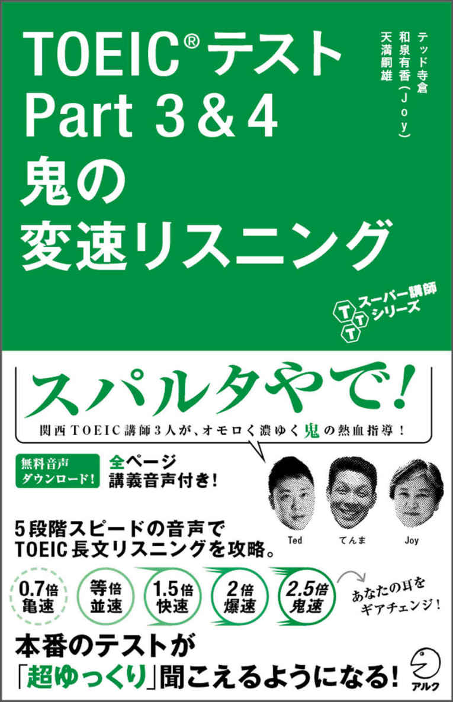
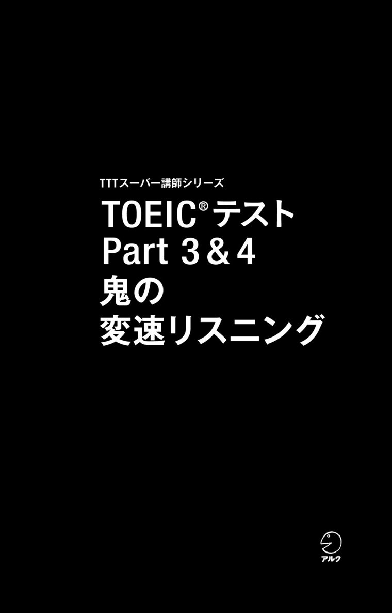
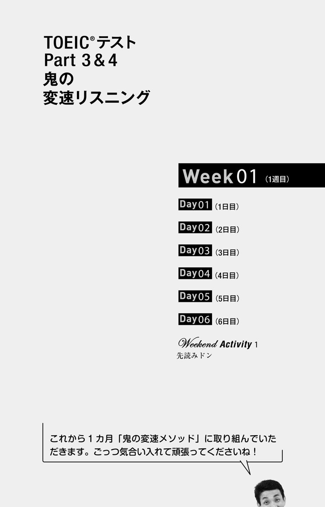
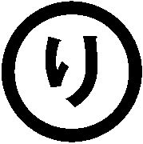
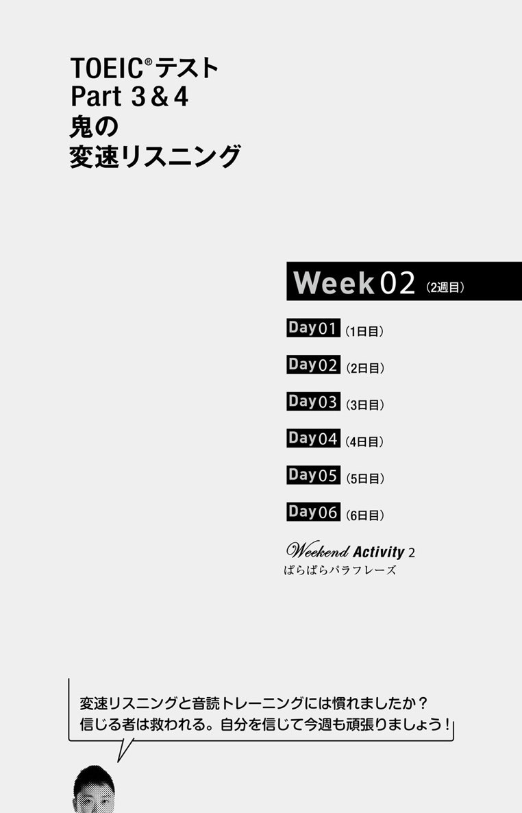
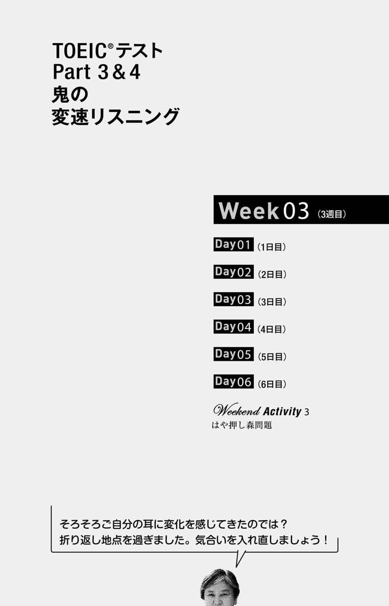
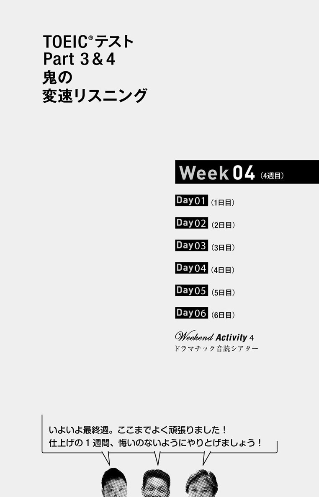

| 音声DL付 TOEIC(R)テスト Part 3 & 4 鬼の変速リスニング TTTスーパー講師シリーズ | |
| テッド寺倉 & 和泉有香(Joy) | |
| (2014) | |


参照項目から元の箇所に戻るには、お使いのビューワーの仕様に従ってください。または一旦目次を表示し、戻りたい箇所の近くの見出しをタップして戻ってください。
は じ め に
2012年11月23日、新大阪駅から程近い会場で「第12回TOEICまつり」は開催されました。「TOEICまつり」とは、兵庫県在住の英語講師・天満嗣雄が主宰するイベントで、TOEIC形式の問題を使ったゲームやアクティビティーを取り入れ、楽しみながら英語力と受験力の向上を目指す、知る人ぞ知る人気セミナーです。
その日の出し物の1つが「早回しPart 3 & 4」でした。通常の2倍の速度からスタートし、徐々にスピードを落としながら繰り返しTOEICのPart 3（会話問題）、Part 4（説明文問題）の音声を聞き、設問の答えを考えるというゲームです。「難しい～！」と悲鳴を上げながらも必死で聞き取ろうとしているうちに、速いスピードにもだんだん慣れ、最後には「本当にこれが等倍のスピードなんですか？」と驚きの表情を見せる参加者を見て、私たちは確信したのです。
「変速リスニング、めっちゃええやん」
本書『TOEIC®テスト 鬼の変速リスニング』（略して「鬼ヘン」）は、TOEIC受験回数が合計130回以上の私たち講師がリアルさにこだわって制作したリスニング問題に、5段階スピードの音声で取り組んでいただくプログラム教材です。1カ月のリスニングと音読トレーニングで、英語を聞き取る力が格段に向上します。
学習に当たっては、ダウンロード音声（MP3）の利用が必須になりますので、ご了承ください（ダウンロード方法はこちらの無料音声ダウンロードを参照）。この音声には私たちのミニ講義も入っていて、TOEIC講座を受けている感覚で学習を進められるようになっています。
講義では、英語発音についてもたくさんお話ししています。45分間で100問を解くTOEICのリスニングセクションでは、英語の音から意味を瞬時に理解することが求められます。そのプロセスを自動化するのが音読練習で、その効果は広く知られているところですが、発音を間違ったまま練習していては効果が半減してしまいます。また、英語らしい発音を目指すことは音読練習を快適に続けるためにも重要です。リズムに乗ってモデル音声に近い感じで読めれば「気持ち良さ」が生まれ、達成感も感じられます。音読練習、ひいては英語学習全般においても、関西弁で言うところの「いちびる」（調子に乗る）ことは大切なのです。
各週の最後には「TOEICまつり」発祥のいろいろなアクティビティーも収録していて、ゲーム感覚でTOEICに直結するスキルや知識を身につけられるようにしました。毎日少しずつこの「鬼ヘン」メソッドを続けることで、きっと効果を体験していただけると思います。ぜひ、私たちと一緒にTOEICを楽しみましょう。
2014年7月
テッド寺倉 和泉有香（Joy） 天満嗣雄
TOEIC®テスト
Part3&4
鬼の
変速リスニング
本 書 の 構 成 と 使 い 方
本書は、0.7倍速から2.5倍速まで5段階に変速させたTOEICテストPart 3「会話問題」、Part 4「説明文問題」の問題音声を使って英語の長文を聞き取る力を鍛えるリスニング教材です。1日約20分×6日×4週間、講義音声に沿ってトレーニングしていただきます。
5 段 変 速 リ ス ニ ン グ
5段階に変速させたPart 3またはPart 4の問題音声を聞き、設問に答えます。
① 問題音声は、2.5倍速（鬼速）・2倍速（爆速）・1.5倍速（快速）・等倍速（並速）の順に流れます。講義音声の指示に従って聞き進め、分かった時点で設問に答えましょう。
② 鬼速～並速で設問に答えられなかった場合は、問題音声内の設問を解くヒントになる部分だけが流れるキーワードヒントのトラックと、0.7倍速（亀速）の問題音声を聞いて、再チャレンジしてください。
こ ん な ん 言 う て ま し た
スクリプトと語注、訳を確認します。
① スクリプトを見ながら等倍速で問題音声をもう一度聞きましょう。スクリプト内の太字部分はキーワードヒントになった箇所です。
② スクリプトの語注、訳をチェックして、会話／トークの内容を把握しましょう。
解 説 し ま っ せ ！
設問の解答と解説を確認します。
① 選択肢、およびそれぞれの訳をチェックして、解答と解説を確認しましょう。
② 解答・解説は講義音声でも聞くことができます。
音 読 チ ャ レ ン ジ ！
問題音声を利用して、3種類の音読トレーニングを行います。
① 英語の発音や聞き取りのコツを解説した「音読のポイント」を読みます。講義音声で補足情報も確認しておきましょう。
② ポーズ（無音部分）が入った等倍速音声を用いて、リピーティング練習をします。スクリプトの/または//のある部分（意味の切れ目）に設けられたポーズで、そこまでで聞こえた音を口頭で再現します。最初はスクリプトを見ながら行い、慣れたらスクリプトを見ずに行いましょう。
③ 等倍速音声を用いて、オーバーラッピング練習をします。聞こえてきた音と同時に、スクリプトを読み上げましょう。
④ 1.5倍速音声を用いて、オーバーラッピング練習をします。
⑤ 等倍速音声を用いて、シャドーイング練習をします。スクリプトを見ずに、聞こえてきた音をほぼ同時に口頭で再現しましょう。
⑥ 1.5倍速音声を用いてシャドーイング練習をします。
⑦ トレーニング②～⑥はそれぞれ3回以上、繰り返してください。
天満Weekend
嗣雄のActivity
7日目は、本編とは違う形式のエクササイズで解答力を養います。
無 料 音 声 ダ ウ ン ロ ー ド
本書に対応する音声（MP3形式）は、全て無料でダウンロードしていただけます。下記リンクにアクセスし、『TOEIC®テスト Part 3 & 4 鬼の変速リスニング』を選択、フォームに必要事項をご記入の上送信いただくと、ダウンロードページURLのご案内メールが届きます。
ALC Download Center
ダウンロードセンター
http://www.alc.co.jp/dl/
（2014年7月時点の情報。今後詳細が変更になる可能性があります）
フォルダ構成とファイルの名称
ダウンロードセンターにある音声は、プログラム構成に沿って、Week 1（1週目）～Week 4（4週目）の4つのフォルダ（アルバム）に分かれています。ファイル名の法則は次の通りです。
DLW1D1_01
W1：1週目
D1：1日目
01：トラック1
DLW1WA_01
W1WA：1週目のWeekend Activity
01：トラック1
■ 「5段変速リスニング」「音読チャレンジ！」内で個別に表記されているトラックマーク（例：DLW1D1_16）は、各トレーニングに使用する音声のファイル名を示しています。
■ 右上の太字で表示されるトラックマークは、その学習項に対応する音声ファイルが表記されています（例：DLW1D1_01～12）。講師による指示音声とトレーニングに使用する音声を連続で聞きたい場合は、ここに記載されている範囲のファイルを連続再生してください。

DLW1D1_01～12
Week 1 │ Day1
第1週・1日目
会話を聞いて設問に答えよう。
会話は5段階のスピードで収録されている。音声の指示に従って聞き、設問に挑もう。
DLPart 3-1W1D1_10
1. Where most likely are the speakers?
(A) At a bank
(B) At a travel agency
(C) At a post office
(D) At a grocery store
2. What does the woman decide to do?
(A) Purchase some food items
(B) Employ a more expensive service
(C) Book an overnight trip
(D) Sign up for an account
3. What does the man ask the woman to do?
(A) Complete a form
(B) Show some identification
(C) Pay in advance
(D) Remove some goods
問題よりもまず聞くことに集中！
［単語メモ］ 聞き取れた単語やフレーズがあれば書き取ろう。
DLW1D1_03
2.5倍鬼速
DLW1D1_05
2倍爆速
DLW1D1_07
1.5倍快速
DLW1D1_09
等倍並速
DLW1D1_11
Keyword Hints キーワードヒント
音声を聞いて空所を埋めよう。
①(s ) this(p ) to Canada ②(o )(s ) ③(e )(s ) ④ by(a ) ⑤ We also have some(c )(o ) ⑥ I'd(b )(s ) it(e ) ⑦ You(n ) to(f )(o ) this(f )
DLW1D1_12
0.7倍亀速
※等倍で設問に答えられない場合に聞いてみよう。
DLW1D1_13
こ ん な ん 言 う て ま し た
「この小包、食べもん入ってまんねん」
スクリプトを確認しながら、もう一度、等倍［並速］音声で会話を聞いてみよう。太字はキーワードヒントになった語句だ。
訳や単語の意味も確認しておこう。
男性（M） 女性（W） 語数118語／37秒（191WPM）
DLW1D1_13
Questions 1 through 3 refer to the following conversation.
W: Hi, I'd like to send this package to Canada. I'm not sure what types of services are available foroverseas shipping.
M: If you want it to be delivered quickly, you can use ourexpress service, and it'll only take about two to three daysby air.We also have some cheaper options, which will take from one to three weeks.
W: I have some food items in it, soI'd better send it express.
M: In the case of food items, you need to fill out this form and declare that they are for personal use. Also, you need to specify the weight for each item in the box. Here, you can have a seat and do the paperwork first.
［語注］
□package ［名］小包 □available ［形］利用可能な □overseas shipping 海外発送 □deliver ［動］～を配達する □by air 航空便で □fill out ~ 記入する □form ［名］書類 □declare ［動］～を申告する □for personal use 個人用の、非営利目的で □specify ［動］～を明記する □paperwork ［名］書類作り
［訳］
問1-3は次の会話に関するものです。
女性：どうも、この小包をカナダに送りたいんですが。海外発送ではどういうサービスが利用できるのか分からなくて。
男性：すぐに配送してほしいなら速達サービスをご利用になるといいでしょう。航空便で2、3日しかかかりません。ほかに、より価格の安い選択肢もありますが、それらは1～3週間かかります。
女性：小包には食品が入っているから、速達で送った方がよさそうですね。
男性：食品の場合は、この書類に記入して、その食品が非商用であることを申告する必要があります。さらに箱の中の品物1つずつの重量を明記しなければなりません。さあ、こちらにお座りになって先に書類を作成してください。
DLW1D1_14
解 説 し ま っ せ ！
店頭での会話では、少々やっかいなことが起きるが、解決策は必ず提示される。会話の中に登場するモノやサービスの内容から場面をつかもう。
DLW1D1_14
1. Where most likely are the speakers?
(A) At a bank
(B) At a travel agency
(C) At a post office
(D) At a grocery store
Q. 話し手たちはおそらくどこにいるか。
(A) 銀行
(B) 旅行代理店
(C) 郵便局
(D) 食料品店
□most likely おそらく、たぶん □travel agency 旅行代理店 □grocery store 食料品店
要チェックや！
会話の場所を問う問題はキーワードを拾う
会話やトークの概要を問う「森タイプの問題」。解答につながるヒントが複数出てくるので解きやすい。この設問は、会話が行われている｢場所｣を問うている。package（小包）、shipping（発送）、express service（速達便）、by air（航空便で）などのキーワードから、答えは(C)のpost office（郵便局）。不正解の選択肢も会話に登場する語句に関連していることが多い。この問題ではCanadaやairから(B)の旅行代理店、food itemsから(D)の食料品店が連想可能。引っ掛からないためには、浅くてもいいので広く聞こう。
正解（C）
2. What does the woman decide to do?
(A) Purchase some food items
(B) Employ a more expensive service
(C) Book an overnight trip
(D) Sign up for an account
Q. 女性は何をすることを決断したか。
(A) 食品を購入する
(B) より高額なサービスを用いる
(C) 1泊旅行を予約する
(D) 口座開設を申し込む
□purchase ［動］～を買う □employ ［動］～を使用する □book ［動］～を予約する □overnight ［形］一泊の □sign up for ~ ～を申し込む
要チェックや！
設問の主語にあたる人物の発言に注目！
「女性は何をすることを決断したか」という設問なので、女性がその決断の内容を言うと予測できる。それを示すのがI'd better send it express.。I'd better (I had better) ~は「～しなくては」。ただ、「速達で送る」という発言内容そのものの選択肢はなく、解答するにはさらにヒントが必要。それが男性職員の発言。女性の決断は、この男性職員の「2、3日で着く速達と、『より安い』が時間がかかる別の方法がある」という説明を受けてのもの。つまり、女性が使うと決めた速達はほかの方法「より高い」（＝more expensive）サービスということになり、（B）が正解。
正解（B）
3. What does the man ask the woman to do?
(A) Complete a form
(B) Show some identification
(C) Pay in advance
(D) Remove some goods
Q. 男性は女性に何をするように頼んでいるか。
(A) 用紙に記入する
(B) 身分証明書を見せる
(C) 前払いをする
(D) いくつかの品物を取り除く
□complete ［動］〜に記入して仕上げる □identification ［名］身分証明書 □in advance 前もって □remove ［動］〜を取り除く
要チェックや！
3問目のヒントは会話の後半部で出る
3問目のヒントは会話の最後の方に出てくることが多い。男性が依頼する内容を問う設問なので、男性の2回目の発話を集中して聞こう。ただ、ここで男性はCould you ...?やPlease ...のような直接的な依頼表現を使っていない。代わりに、You need to fill out this form（この書類に記入する必要があります）や、You can have a seat and do the paperwork first（座って先に書類を作成したらいい）といった間接的な表現で依頼している。正解は(A)。会話の中のfill out（〜に記入する）は、選択肢ではcompleteに言い換えられている。
正解（A）
DLW1D1_15～27
音 読 チ ャ レ ン ジ ！
変速された音声を利用して、3種類の音読練習に取り組もう。
W: Hi, / I'd like to send this package / to Canada. // I'm not sure / what types of services are available / for overseas shipping. //
M: If you①want it to be delivered quickly, / you can use our express service, / and②it'll only take about two to three days / by air. // We also have some cheaper options, / which will take from one to three weeks. //
W: I have some food items in it, / so I'd better send it express. //
M: In the case of food items, / you③need to fill out this form / and declare / that they are for personal use. // Also, you need to specify / the weight for each item / in the box. // Here, you can have a seat / and do the paperwork first. //
/、// ──意味の切れ目（//は文末を示す）。Step1リピーティング用トラックではこの部分にポーズがある。
部分──「音読のポイント」で取り上げている。
音読のポイントDLW1D1_16
①つなぎを意識...want it to beのところが速い。「ウォント・イット・トゥー・ビー」と言っていては間に合わない。wantのtは飲みこむ感じで次のitにつなげ、itとtoのtは1つにまとめて、wan i to beのように言ってみよう。
②it'llの発音...tとlのつなぎが難しい。tもlもしっかり発音しようとすると不自然になりがち。どちらも舌先を上歯の付け根あたりに付けて発音する音。tを発音した後、舌を上あごから離さずそのままlに入るとうまく聞こえる。
③dとtの連続...needのdとtoのtは発音する時の舌の位置が近いのでdが消え気味になる。fill outのlとouは連結し、「ふぃらうt」のようになる。
STEP 1DLW1D1_18
並速 リピーティング
/または//の部分のポーズで聞こえた英文を繰り返して読み上げよう。
STEP 2DLW1D1_20
並速 オーバーラッピング
スクリプトを見ながら、聞こえてくる音声に合わせて英文を読み上げよう。
STEP 3DLW1D1_22
快速 オーバーラッピング
上と同じ練習を1.5倍の速度の音声を使って行おう。
STEP 4DLW1D1_24
並速 シャドーイング
スクリプトを見ず、聞こえた音声をほぼ同時に口頭で再現しよう。
STEP 5DLW1D1_26
快速 シャドーイング
上と同じ練習を1.5倍の速度の音声を使って行おう。
これで今日の学習は終わりです。30秒くらいの会話でも、これだけいろいろと練習すると疲れたでしょう。でもこれを続けるとリスニング力は相当上がりますよ。あせらず1カ月、がんばってみましょう！
DLW1D2_01～11
Week 1 │ Day2
第1週・2日目
トークを聞いて設問に答えよう。
トークは5段階のスピードで収録されている。音声の指示に従って聞き、設問に挑もう。
DLPart 4-1W1D2_08
4. Who is the speaker?
(A) A publisher
(B) A photographer
(C) A novelist
(D) A store clerk
5. What is the main purpose of the call?
(A) To place an order
(B) To provide an update
(C) To arrange a meeting
(D) To give directions
6. What is said about Jefferson & Marsh?
(A) It is being renovated.
(B) It has moved to an upper floor.
(C) It is located in the suburbs.
(D) It has been understaffed.
今日も元気に学習を始めよう！
［単語メモ］ 聞き取れた単語やフレーズがあれば書き取ろう。
DLW1D2_02
2.5倍鬼速
DLW1D2_04
2倍爆速
DLW1D2_06
1.5倍快速
DLW1D2_08
等倍並速
DLW1D2_10
Keyword Hints キーワードヒント
音声を聞いて空所を埋めよう。
① I'm calling to(l )(y )(k ) that the(n ) you(o ) ② has(a ) ③ we usually ask(o )(c ) ④ the(r ) we are now(u ) ⑤ the main(ch )
DLW1D2_11
0.7倍亀速
※等倍で設問に答えられない場合に聞いてみよう。
DLW1D2_12
こ ん な ん 言 う て ま し た
「お取り寄せの本、来ましたけど」
スクリプトを確認しながら、もう一度、等倍［並速］音声でトークを聞いてみよう。太字はキーワードヒントになった語句だ。
訳や単語の意味も確認しておこう。
語数119語／40秒（178WPM）
DLW1D2_12
Questions 4 through 6 refer to the following telephone message.
Hello, Mr. Rosenfeld. This is Jessica Brown from Jefferson & Marsh. I'm calling tolet you know that the novel you ordered,In the Middle of Nowhere,has arrived. I'm afraid the photo book you ordered at the same time is not here yet. According to the publisher, it will take about one more month. So would you like to come and pick up the novel first? Now,we usually ask our customers to collect ordered items at the front desk on the first floor. But due tothe renovations we are now undergoing, it's atthe main checkout on the second floor for the time being. We'll let you know as soon as your other order has arrived.
［語注］
□this is ~ from ... ...の～と申します □let ~ know that ... ～に...を知らせる □novel ［名］小説 □order ［動］～を注文する □In the Middle of Nowhere ※「人里をはるか離れた場所で」「辺ぴなところで」という意味。ここでは架空の小説タイトル。 □arrive ［動］到着する □photo book 写真集 □at the same time 同時に □yet ［副］まだ □according to ~ ～によると □publisher ［名］出版社 □pick up 受け取る □usually ［副］通常は □customer ［名］顧客 □collect ［動］～を受け取る □item ［名］商品 □due to ~ ～のために □renovation ［名］改装工事 □undergo ［動］経験する、〜を受ける □checkout ［名］レジ □for the time being 当面は □as soon as ... ...し次第
［訳］
問4-6は次の電話メッセージに関するものです。
こんにちは、ローゼンフェルドさん。ジェファソン・アンド・マーシュのジェシカ・ブラウンです。ご注文の小説、『何もないところで』が入荷したことをお知らせしたくお電話いたしました。ただ、同時にご注文いただいた写真集はまだ来ておりません。出版社によると、あと1カ月ほどかかるということです。先に小説を取りに来られますか？ ところで、当店では通常、お客様に、ご注文の品は1階のフロントデスクで受け取っていただくようお願いしていますが、現在改装工事中のため、当面は2階の中央レジで承っております。もう1冊の本が入荷し次第、お知らせいたします。
DLW1D2_13
解 説 し ま っ せ ！
TOEIC名物・留守録メッセージは「取りに来てください」だけですまないのがお約束。さまざまな注意事項が盛り込まれる。意外な展開を楽しんでみよう。
DLW1D2_13
4. Who is the speaker?
(A) A publisher
(B) A photographer
(C) A novelist
(D) A store clerk
Q. 話し手は誰か。
(A) 出版社
(B) 写真家
(C) 小説家
(D) 店員
□novelist ［名］小説家 □store clerk 店員
要チェックや！
比較的ラクなタイプの「誰」問題
「誰か」を問う設問は、トーク全体からヒントとなるキーワードを拾い出さなければ答えられないことが多いが、この設問では幸いトークの初めにキーワードが続けて出てくる。話し手は自分がJefferson & Marsh（創立者の名前がそのまま店名・社名になっている）のJessica Brownだと名乗り、続けて注文した本が届いたので引き取りにくるように、と述べている。正解は(D)である。(A)、(B)、(C)もそれぞれトークに出てくるpublisher、photo、novelに関連しているが、これらは引っ掛け。
正解（D）
5. What is the main purpose of the call?
(A) To place an order
(B) To provide an update
(C) To arrange a meeting
(D) To give directions
Q. 電話の主な目的は何か。
(A) 注文をする
(B) 最新の情報を提供する
(C) 会議を準備する
(D) 道順を教える
□place ［動］～の注文を出す □provide ［動］～を提供する □update ［名］最新情報 □give directions 道案内をする、指図する
要チェックや！
設問は0.5秒で読み取ろう
トークの目的を問う設問はPart 4最頻出。問題冊子に目を落とした瞬間に設問の意味を把握できるよう暗記しておこう。選択肢に「本の引き取りの依頼」という内容のものが見当たらないことから、TOEICお得意の「言い換え」が使われていると見抜く必要がある。話し手は注文品の本が届いたという「最新情報」を伝えているのだ、と思い至れば正解の(B)にたどり着ける。なお不正解の選択肢もTOEIC頻出表現を含んでいる。これらも見た瞬間に意味がつかめるよう「フレーズ」として覚えておこう。
正解（B）
6. What is said about Jefferson & Marsh?
(A) It is being renovated.
(B) It has moved to an upper floor.
(C) It is located in the suburbs.
(D) It has been understaffed.
Q. ジェファソン･アンド・マーシュについて言われていることは何か。
(A) 改装中である。
(B) 上の階に移転した。
(C) 郊外にある。
(D) 人員不足である。
□renovate ［動］～を改装する □be located ～に位置する □the suburbs ［名］郊外 □understaffed ［形］人員不足の
要チェックや！
1つ選ぶというより3つ消す感覚で
「この書店について言われていること」は4つの選択肢のうち1つだけ。「正解を1つ選ぶ」というより「正しくないものを3つ消す」という方がしっくりくるかもしれない。due to the renovations we are now undergoing（現在改装工事中のため）を根拠として正解は(A)となる。renovation（改装工事）はTOEIC頻出語。同義語のremodelingと併せて覚えておこう。ちなみに不正解選択肢(D)の中のunderstaffed（人員不足の）という語もたまに登場する。under-は「-が少ない」の意である。
正解（A）
DLW1D2_14～23
音 読 チ ャ レ ン ジ ！
変速された音声を利用して、3種類の音読練習に取り組もう。
Hello, Mr. Rosenfeld. // This is Jessica Brown / from Jefferson & Marsh. // I'm calling to let you know / that the novel you ordered, /① In the Middle of Nowhere, / has arrived. //②I'm afraid / the photo book you ordered at the same time / is not here yet. // According to the publisher, / it will take about one more month. // So / would you like to come and pick up the novel first? // Now, / we usually ask our customers / to collect ordered items / at the front desk on the first floor. // But due to the renovations we are now undergoing, / it's at the main checkout on the second floor /③for the time being. // We'll let you know / as soon as your other order has arrived. //
/、// ──意味の切れ目（//は文末を示す）。Step1リピーティング用トラックではこの部分にポーズがある。
部分──「音読のポイント」で取り上げている。
音読のポイントDLW1D2_14
①In the Middle of Nowhere...middleは本来ならdを発音する時とlを発音する時の2回、舌が上の歯の裏付近に付くが、dの時にいったん付けたらそのままの状態でlを発音する。
②at the same timeは素早く...I'm afraidはmでいったんきっちりと口を閉じよう。afraidの最初のaはほぼ聞こえないぐらいに弱く発音する。photo bookはpho・to・bookのそれぞれのパーツに1拍ずつ音符を置く感じで読もう。at the same timeのat theは弱く早く、あっという間に過ぎる感じで。
③for the time beingは緩急をつけて...for theは力を抜いて「ファ・ダ」ぐらいに弱く短く。timeの二重母音は「tあいm」のようにたっぷりと発音しよう。
STEP 1DLW1D2_16
並速 リピーティング
/または//の部分のポーズで聞こえた英文を繰り返して読み上げよう。
STEP 2DLW1D2_18
並速 オーバーラッピング
スクリプトを見ながら、聞こえてくる音声に合わせて英文を読み上げよう。
STEP 3DLW1D2_19
快速 オーバーラッピング
上と同じ練習を1.5倍の速度の音声を使って行おう。
STEP 4DLW1D2_21
並速 シャドーイング
スクリプトを見ず、聞こえた音声をほぼ同時に口頭で再現しよう。
STEP 5DLW1D2_22
快速 シャドーイング
上と同じ練習を1.5倍の速度の音声を使って行おう。
トークに中の架空の小説のタイトル、In the Middle of Nowhereは直訳すると「どこでもないところの真ん中で」という意味ですが、実は「ドいなか」という慣用句です。おもろい言い回しですよね！
DLW1D3_01～11
Week 1 │ Day3
第1週・3日目
会話を聞いて設問に答えよう。
会話は5段階のスピードで収録されている。音声の指示に従って聞き、設問に挑もう。
DLPart 3-2W1D3_08
7. Why is the man surprised?
(A) Some figures are outstanding.
(B) He will be promoted to a higher position.
(C) A project was completed ahead of schedule.
(D) He has been nominated for an award.
8. What do the speakers plan to do?
(A) Celebrate a success
(B) Start a project
(C) Organize a conference
(D) Submit a report
9. What does the woman suggest the man do?
(A) Make a reservation
(B) Accept a proposal
(C) Consult with management
(D) Consider an alternative
反復リスニングで地力アップ！
［単語メモ］ 聞き取れた単語やフレーズがあれば書き取ろう。
DLW1D3_02
2.5倍鬼速
DLW1D3_04
2倍爆速
DLW1D3_06
1.5倍快速
DLW1D3_08
等倍並速
DLW1D3_10
Keyword Hints キーワードヒント
音声を聞いて空所を埋めよう。
① I(c )(b ) how(w ) our(s ) for this(q ) have been(c )(a ). ②(W )(d ) we(s )(u ) a small(p ) for them? ③ That's a(g )(i ). ④ Please also(b ) in(m ) the(o ) of ...
DLW1D1_11
0.7倍亀速
※等倍で設問に答えられない場合に聞いてみよう。
DLW1D3_12
こ ん な ん 言 う て ま し た
「ごっつもうかってるやん！」
スクリプトを確認しながら、もう一度、等倍［並速］音声で会話を聞いてみよう。太字はキーワードヒントになった語句だ。
訳や単語の意味も確認しておこう。
男性（M） 女性（W） 語数103語／32秒（193WPM）
DLW1D3_12
Questions 7 through 9 refer to the following conversation.
M: Florence,I can't believe how well our sales for this quarter have been coming along. We're going to reach our target much sooner than expected.
W: Yes, we have our marketing team to thank for that. They've done a great job in promoting the new AR line.Why don't we set up a small party for them?
M:That's a good idea. They certainly deserve a little treat. I'll go talk to the team members and ask when would be a good time for them to go out together.
W:Please also bear in mind the option of having a catered dinner. They might prefer that.
［語注］
□quarter ［名］四半期 □come along （順調に）進む □promote ［動］〜を販売促進する □set up ~ ～を用意する □certainly ［副］本当に □deserve ［動］〜して当然だ、～に値する □treat ［名］もてなし、ごちそう □bear in mind ~ ～を覚えておく □option ［名］選択肢 □catered 仕出しの、ケータリングの □prefer ［動］〜を好む
［訳］
問7-9は次の会話に関するものです。
男性：フローレンス、今四半期の売り上げがこんなにも順調に推移しているなんて信じられないよ。予想していたよりもずっと早く目標を達成できそうだ。
女性：ええ、マーケティングチームに感謝しないと。彼らは新しいARシリーズの販売促進で素晴らしい仕事をしたわ。彼らのためにささやかなパーティーを用意するのはどうかしら。
男性：それはいい考えだ。彼らは確かに多少のごほうびを受けてしかるべきだね。チームのメンバーに話をして、一緒に出掛けるならいつがいいか聞いてみるよ。
女性：ケータリングのディナーを頼むという選択肢もあることを覚えておいて。彼らはそちらの方がいいかもしれないから。
DLW1D3_13
解 説 し ま っ せ ！
職場の同僚同士の会話の内容は、売り上げや予算などの仕事に関するものから、イベントやアフターファイブの予定に関するものまで幅広い。
DLW1D3_13
7. Why is the man surprised?
(A) Some figures are outstanding.
(B) He will be promoted to a higher position.
(C) A project was completed ahead of schedule.
(D) He has been nominated for an award.
Q. 男性はなぜ驚いているか。
(A) 数字が極めて素晴らしい。
(B) 彼がより高い役職に昇進する。
(C) プロジェクトが予定よりも早く完了した。
(D) 彼が賞に推薦された。
□figure ［名］数字 □outstanding ［形］際立った □ahead of 〜より早く □nominate ［動］〜を推薦する □award ［名］賞
要チェックや！
感情を表すフレーズをキャッチしよう
男性が発する「驚き」を表す表現の周辺に注意しよう。I can't believe（信じられない）が驚きのフレーズで、その後に続くhow well our sales for this quarter have been coming along（今四半期の売り上げがこんなにも順調に推移している）がその理由。それを言い換えた(A)のSome figures are outstanding.（数字が極めて素晴らしい）が正解。much sooner than expectedも「予想外に早い」という意味なので、「驚き」に関する表現だ。
正解（A）
8. What do the speakers plan to do?
(A) Celebrate a success
(B) Start a project
(C) Organize a conference
(D) Submit a report
Q. 話し手たちは何をする計画を立てるか。
(A) 成功を祝う
(B) プロジェクトを始める
(C) 会議の準備をする
(D) 報告書を提出する
□celebrate ［動］～を祝う □organize ［動］～を準備する □conference ［名］会議 □submit ［動］～を提出する
要チェックや！
提案内容だけでなく、それへの応答も注目
設問の主語はspeakers、つまり話し手2人なので、1人が提案した内容がもう1人によって受け入れられたかどうかも確認する必要がある。なぜなら代案が示されて、最終的にそちらが採用されるパターンもあるからだ。今日は、Why don't we set up a small party for them?（彼らのためにささやかなパーティーを用意するのはどうかしら）という女性の提案に対し、男性はThat's a good idea.（それはいい考えだ）と同意している。パーティーを行う目的は、1問目と関連している「好調な売り上げ」の報奨のためなので、正解は(A)のCelebrate a success（成功を祝う）。
正解（A）
9. What does the woman suggest the man do?
(A) Make a reservation
(B) Accept a proposal
(C) Consult with management
(D) Consider an alternative
Q. 女性は男性に何をすることを勧めているか。
(A) 予約をする
(B) 提案を受け入れる
(C) 経営陣に相談する
(D) 代案を検討する
□accept ［動］〜を受け入れる □proposal ［名］提案 □consult with 〜と相談する □management ［名］経営陣 □alternative ［名］代案、選択肢
要チェックや！
提案をする人とされる人の区別に注意
設問は女性が男性に対して出す提案を問うている。男性がマーケティングチームと「一緒に出掛ける」ことを想定しているところに、女性がPlease also bear in mind the option of having a catered dinner.（ケータリングのディナーを頼むという選択も覚えておいて）と、ケータリングという方法も検討するよう提案している。これを言い換えた(D)のConsider an alternative（代案を検討する）が正解。このような言い換え表現に対応できるレベルの語彙力はリスニングセクションでも求められる。
正解（D）
DLW1D3_14～23
音 読 チ ャ レ ン ジ ！
変速された音声を利用して、3種類の音読練習に取り組もう。
M: Florence, / I can't believe / how well our sales for this quarter have been coming along. //①We're going to reach our target / much sooner than expected. //
W: Yes, / we have our marketing team / to thank for that. // They've done a great job / in promoting the new AR line. //②Why don't we set up a small party / for them?//
M:③That's a good idea. // They certainly deserve a little treat. // I'll go talk to the team members / and ask / when would be a good time for them / to go out together. //
W: Please also bear in mind / the option of having a catered dinner. // They might prefer that. //
/、// ──意味の切れ目（//は文末を示す）。Step1リピーティング用トラックではこの部分にポーズがある。
部分──「音読のポイント」で取り上げている。
音読のポイントDLW1D3_14
①他動詞＋目的語のつながりをイメージする...reach our targetは他動詞＋目的語なのでつながりが強い。その結束をイメージしながら音もつなげて読もう。その後のmuchはsoonerを強調する語なので強勢を置こう。
②勧誘の定型表現...Why don't we set up ...のWhy don't we ~?は、「〜してはどうか」という「提案」の定型表現。意味をイメージしながら読もう。set upのtとuはつなげて発音しよう。
③That's a good idea.は一息で...sとa、dとiのつながりを滑らかに、文全体を一息で読めるように。That's aをかたまりとして認識して音読しておくと、冠詞の感覚も身につく。
STEP 1DLW1D3_16
並速 リピーティング
/または//の部分のポーズで聞こえた英文を繰り返して読み上げよう。
STEP 2DLW1D3_18
並速 オーバーラッピング
スクリプトを見ながら、聞こえてくる音声に合わせて英文を読み上げよう。
STEP 3DLW1D3_19
快速 オーバーラッピング
上と同じ練習を1.5倍の速度の音声を使って行おう。
STEP 4DLW1D3_21
並速 シャドーイング
スクリプトを見ず、聞こえた音声をほぼ同時に口頭で再現しよう。
STEP 5DLW1D3_22
快速 シャドーイング
上と同じ練習を1.5倍の速度の音声を使って行おう。
音読をする時は、まず何よりもリズムを感じることが大切です。英語のリズムで音読できるようになれば、リスニングをしている時に格段に要点がキャッチしやすくなりますよ。
DLW1D4_01～11
Week 1 │ Day4
第1週・4日目
トークを聞いて設問に答えよう。
トークは5段階のスピードで収録されている。音声の指示に従って聞き、設問に挑もう。
DLPart 4-2W1D4_08
10. Who is Claire Lewis?
(A) An event organizer
(B) A renowned chef
(C) An acclaimed musician
(D) A theatrical performer
11. What does the speaker say about this year's festival?
(A) It will feature international dishes.
(B) It will have a larger parking lot.
(C) Camping spots will be open to the public.
(D) Some foreign artists will perform.
12. According to the announcement, what can listeners do on the Web site?
(A) Enter a contest
(B) Pay for parking
(C) Secure a spot
(D) Buy an album
設問中の固有名詞は要チェックや！
［単語メモ］ 聞き取れた単語やフレーズがあれば書き取ろう。
DLW1D4_02
2.5倍鬼速
DLW1D4_04
2倍爆速
DLW1D4_06
1.5倍快速
DLW1D4_08
等倍並速
DLW1D4_10
Keyword Hints キーワードヒント
音声を聞いて空所を埋めよう。
①(j )(s ) Claire Lewis ②(F ) stands(t )(y ) will be expanded ③ sample a wider selection of(c ), from(T ) to(G ) ④(C ) are advised to(r ) their(s ) ⑤ Please visit the event organizer's(W )(s ) ⑥ go to the "(C )" page
DLW1D4_11
0.7倍亀速
※等倍で設問に答えられない場合に聞いてみよう。
DLW1D4_12
こ ん な ん 言 う て ま し た
「夏の野外フェスや！」
スクリプトを確認しながら、もう一度、等倍［並速］音声でトークを聞いてみよう。太字はキーワードヒントになった語句だ。
訳や単語の意味も確認しておこう。
語数124語／49秒（151WPM）
DLW1D4_12
Questions 10 through 12 refer to the following radio broadcast.
Summer is just around the corner, and it's time to get ready for the Kemble Music Festival. This year's festival will be headlined by the magnificent jazz singer Claire Lewis, who won the best album award at the PRS Music Awards in February. The three stages will be full of exciting performances by the nation's leading artists. There's good news for gourmet lovers.Food stands this year will be expanded into a part of the parking lot, and you'll be able tosample a wider selection of cuisines, from Thai to Greek.Campers are advised to reserve their spots well in advance as the passes get sold out quickly every year.Please visit the event organizer's Web site and go to the "Camping" page.
［語注］
□just around the corner もうすぐ □get ready for ~ ～の準備をする □headline ［動］～（公演など）のトップを飾る、目玉となる □magnificent ［形］最高の □award ［名］賞 □leading ［形］一流の □stand ［名］売店、屋台 □expand ［動］～を拡張する □parking lot 駐車場 □sample ［動］～を試食する □cuisine ［名］料理 □Thai ［形］タイの □Greek ［形］ギリシャの □reserve ［動］〜を予約する □spot ［名］場所 □in advance 前もって □organizer ［名］主催者
［訳］
問10-12は次のラジオ放送に関するものです。
夏もすぐそこ、ケンブル音楽フェスティバルの準備をする季節になりました。今年のフェスティバルの目玉となるのは、2月のPRS音楽賞でベストアルバム賞を受けた最高のジャズシンガー、クレア・ルイスです。3つのステージでは国内の一流ミュージシャンによる刺激的なパフォーマンスが繰り広げられるでしょう。食べることが大好きな皆さんに朗報です。今年の屋台は駐車場の一部まで拡張され、タイからギリシャまで幅広い料理を試食することができます。キャンプをする方は、毎年利用券がすぐに売り切れるので、事前に十分余裕をもって場所の予約をすることをお勧めします。イベント主催者のウェブサイトから「キャンプ」のページへ行ってください。
DLW1D4_13
解 説 し ま っ せ ！
イベントの告知は「何のイベントか」や「誰が登場するか」に加え、「従来との変更点」や「聞き手がするべきこと」などが聞き取りのポイントとなる。
DLW1D4_13
10. Who is Claire Lewis?
(A) An event organizer
(B) A renowned chef
(C) An acclaimed musician
(D) A theatrical performer
Q. クレア・ルイスは誰か。
(A) イベント主催者
(B) 有名なシェフ
(C) 定評のあるミュージシャン
(D) 舞台役者
□renowned ［形］有名な □acclaimed ［形］定評のある □theatrical ［形］演劇の
要チェックや！
人名の前に正解のカギが出ることも多い
the magnificent jazz singer Claire Lewis（最高のジャズシンガー、クレア・ルイス）が解答につながる箇所。肩書が名前が出る前に紹介されている。このように、設問にある人名がトークの中で聞こえた時には、すでに正解のカギは通り過ぎていることがある。人名は意識しつつ、トーク全体の流れを追うように聞こう。正解はmagnificent jazz singerを言い換えた(C)のAn acclaimed musician（定評のあるミュージシャン）。acclaimedは「受賞した」ことにも対応している。
正解（C）
11. What does the speaker say about this year's festival?
(A) It will feature international dishes.
(B) It will have a larger parking lot.
(C) Camping spots will be open to the public.
(D) Some foreign artists will perform.
Q. 話し手は今年のフェスティバルについて何を言っているか。
(A) 国際的な料理を呼び物にする。
(B) より大きな駐車場を持つ。
(C) キャンプ場が一般開放される。
(D) 外国人アーティストが出演する。
□feature ［動］～を呼び物にする
要チェックや！
選択肢とトークの部分一致に注意
選択肢はトークの中で言及される語句を含むものばかりなので、単語単位の聞き取りだけでは引っ掛かってしまう。「タイからギリシャまでの幅広い料理を試食することができます」と述べられているので、正解は(A)のIt will feature international dishes.（国際的な料理を呼び物にする）。(B)のparking lot（駐車場）は拡大されず、(C)のcamping spots（キャンプ場）は「一般開放」されないので、どちらも不正解。(D)のforeign artists（海外のアーティスト）に関する言及はない。
正解（A）
12. According to the announcement, what can listeners do on the Web site?
(A) Enter a contest
(B) Pay for parking
(C) Secure a spot
(D) Buy an album
Q. アナウンスによると、聞き手はウェブサイトで何ができるか。
(A) コンテストに応募する
(B) 駐車料金を支払う
(C) 場所を確保する
(D) アルバムを買う
□secure ［動］〜を確保する
要チェックや！
ウェブサイトを訪問する理由を問う設問
最後の文で、「イベント主催者のウェブサイトから『キャンプ』のページへ行ってください」と呼び掛けているが、その理由はそれ以前の部分にある。キャンプ場の利用券を予約することがウェブサイト訪問の目的として述べられているので、正解は(C)のSecure a spot（場所を確保する）。(A)のEnter a contest（コンテストに応募する）も、例えばウェブで無料チケットが当たる抽選が行われる場合などに正解として登場する選択肢だ。
正解（C）
DLW1D4_14～23
音 読 チ ャ レ ン ジ ！
変速された音声を利用して、3種類の音読練習に取り組もう。
Summer is just around the corner, / and it's time to get ready / for the Kemble Music Festival. // This year's festival will be headlined / by the magnificent jazz singer Claire Lewis, / who won the best album award / at the PRS Music Awards in February. // The three stages will be full of exciting performances / by the nation's leading artists. // There's good news / for gourmet lovers. //①Food stands this year will be expanded / into a part of the parking lot, / and②you'll be able to sample a wider selection of cuisines, / from Thai to Greek. //③Campers are advised / to reserve their spots / well in advance / as the passes get sold out quickly / every year. // Please visit the event organizer's Web site / and go to the "Camping" page. //
/、// ──意味の切れ目（//は文末を示す）。Step1リピーティング用トラックではこの部分にポーズがある。
部分──「音読のポイント」で取り上げている。
音読のポイントDLW1D4_14
①expanded into a part of the parking lot...expanded intoやpart ofの語尾の子音＋語頭の母音のつながりを意識して読もう。this yearのsとyもつなげ気味に。
②フランス語由来の単語...cuisineのようなフランス語からの借用語は、つづりも音も英語の一般的なルールとは異なることが多いので、しっかりと文字と音を一致させておこう。
③well in advance...途切れないように音読し、in advance（前もって）というフレーズとその強調語のwell（十分に）をセットで覚えよう。うまくつなげて読むように。
STEP 1DLW1D4_16
並速 リピーティング
/または//の部分のポーズで聞こえた英文を繰り返して読み上げよう。
STEP 2DLW1D4_18
並速 オーバーラッピング
スクリプトを見ながら、聞こえてくる音声に合わせて英文を読み上げよう。
STEP 3DLW1D4_19
快速 オーバーラッピング
上と同じ練習を1.5倍の速度の音声を使って行おう。
STEP 4DLW1D4_21
並速 シャドーイング
スクリプトを見ず、聞こえた音声をほぼ同時に口頭で再現しよう。
STEP 5DLW1D4_22
快速 シャドーイング
上と同じ練習を1.5倍の速度の音声を使って行おう。
magnificent（最高の）やcuisine（料理）などの難易度の高い単語が出てきました。これらを覚えるための手掛かりとしても音は重要です。文字情報に加え音声情報も利用して記憶を強化しましょう。
DLW1D5_01～11
Week 1 │ Day5
第1週・5日目
会話を聞いて設問に答えよう。
会話は5段階のスピードで収録されている。音声の指示に従って聞き、設問に挑もう。
DLPart 3-3W1D5_08
13. Where does the conversation most likely take place?
(A) At a movie theater
(B) At a box office
(C) At an art museum
(D) At an award ceremony
14. Why is the woman surprised?
(A) The schedule has been changed.
(B) The venue is temporarily closed.
(C) The prices are higher than expected.
(D) The artwork has been nominated for a prize.
15. What does the man say about tickets?
(A) Cancellations are prohibited.
(B) They can be purchased online.
(C) They are mostly sold out.
(D) Group discounts are available.
そろそろこの学習法にも慣れてきたかな？
［単語メモ］ 聞き取れた単語やフレーズがあれば書き取ろう。
DLW1D5_02
2.5倍鬼速
DLW1D5_04
2倍爆速
DLW1D5_06
1.5倍快速
DLW1D5_08
等倍並速
DLW1D5_10
Keyword Hints キーワードヒント
音声を聞いて空所を埋めよう。
① I'd(l )(o ) seats. ② they are the(o )(o ) we(h )(l ) ③ I didn't imagine they'd(c )(t )(m ). ④ I wonder why the(t ) are(g ) so(q ).
DLW1D5_11
0.7倍亀速
※等倍で設問に答えられない場合に聞いてみよう。
DLW1D5_12
こ ん な ん 言 う て ま し た
「マチネーでもまけねー」
スクリプトを確認しながら、もう一度、等倍［並速］音声で会話を聞いてみよう。太字はキーワードヒントになった語句だ。
訳や単語の意味も確認しておこう。
男性（M） 女性（W） 語数96語／36秒（160WPM）
DLW1D5_12
Questions 13-15 refer to the following conversation.
W: Hi, can I have two tickets for the performance tomorrow night, please? I'd like orchestra seats.
M: I'm sorry. Everything's sold out for tomorrow evening's show. Two tickets were canceled for tomorrow afternoon, andthey are the only ones we have left. They cost the same for evening and matinee performances, and they're 185 dollars each.
W: Really?I didn't imagine they'd cost that much. But I suppose I have no choice.I wonderwhy the tickets are going so quickly.
M: The show received the prestigious Ellen Award last month, and the theater's been packed ever since.
［語注］
□performance ［名］公演 □orchestra seat 1階席 □sold out 売り切れ □cost ［動］（金額）がかかる □matinee ［名］昼間の公演、マチネー □that much そんなにたくさん □choice ［名］選択肢 □prestigious ［形］名声のある □packed ［形］満員の □ever since それ以来
［訳］
問13-15は次の会話に関するものです。
女性：こんにちは。明日夜の公演のチケットを2枚ください。1階席をお願いします。
男性：申し訳ありません。明日夜のショーのチケットは全て売り切れてしまいました。明日午後の公演にキャンセルが2枚出ましたが、残っているのはそれだけです。チケットの料金は、夜公演、マチネーとも同価格で185ドルになります。
女性：あら、本当？ そんなにお高いとは思いませんでした。でも、ほかに選択肢もありませんね。どうしてそんなに売れ足が早いのかしら。
男性：このショーは先月、栄誉あるエレン賞を受けまして、それ以来ずっと劇場が満席なんです。
DLW1D5_13
解 説 し ま っ せ ！
演劇はTOEIC頻出トピック。matinee（昼公演）のチケットは通常は夜の公演より安いが、この演目はマチネーでも割引なし（「まけねー」）のようだ。
DLW1D5_13
13. Where does the conversation most likely take place?
(A) At a movie theater
(B) At a box office
(C) At an art museum
(D) At an award ceremony
Q. この会話はどこで行われているか。
(A) 映画館
(B) チケット売り場
(C) 美術館
(D) 授賞式
□conversation ［名］会話 □likely ［形］ありそうな □take place 行われる、起こる □box office ［名］チケット売り場 □award ［名］賞
要チェックや！
キーワードを拾いつつ、常識で判断しよう
two tickets、performance、orchestra seats、matinee performanceなどがキーワード。orchestra seats、matineeの意味を知っている人はあっさりと(A)「映画館」を除外して(B)の「チケット売り場」を選べる。それらが分からなくても、チケットの価格が1枚185ドルだと聞き取れれば、常識的に考えて映画の料金としては高すぎる＝この場所は映画館ではないと推測できるはずだ。
正解（B）
14. Why is the woman surprised?
(A) The schedule has been changed.
(B) The venue is temporarily closed.
(C) The prices are higher than expected.
(D) The artwork has been nominated for a prize.
Q. 女性はなぜ驚いているか。
(A) スケジュールが変更になったから。
(B) 会場が一時的に閉まっているから。
(C) 値段が思っていたより高いから。
(D) 美術作品が賞にノミネートされたから。
□venue ［名］会場 □temporarily ［副］一時的に □artwork ［名］芸術品、工芸品
要チェックや！
驚きと意外さを表す表現を探せ
I'm surprised.と素直に言う以外にも驚きや意外さを表す表現はたくさんある。この場合はReally?が驚きの表現。直後のI didn't imagine ...にも「...だなんて想像もしなかった」という驚きが感じられる。このI didn't imagine they'd cost that much.（そんなに高いとは思わなかった）が根拠となり、(C)が正解となる。主語がticketsでなくpricesとなっているのがTOEICらしいところだ。選択肢(B)内のvenue（会場）とtemporarily（一時的に）も押さえておきたい単語。
正解（C）
15. What does the man say about tickets?
(A) Cancellations are prohibited.
(B) They can be purchased online.
(C) They are mostly sold out.
(D) Group discounts are available.
Q. 男性はチケットについて何と言っているか。
(A) キャンセルは禁じられている。
(B) インターネットで購入可能である。
(C) ほぼ売り切れている。
(D) 団体割引が適用される。
□cancellation ［名］キャンセル □prohibit ［動］〜を禁止する □group discount 団体割引 □available ［形］利用可能な
要チェックや！
1つ選ぶより3つつぶすつもりで
チケットについて述べられていることはいくつかある。「明日夜の部の公演は売り切れ」「残りは明日昼公演の2枚だけ」「1枚185ドル」「非常によく売れている」など。そのうち正解として選択肢に入っているのは1つだけなので、選択肢を丁寧に読み、違うものを確実につぶしていくしかない。they are the only ones we have left（残っているのはそれだけ）とI wonder why the tickets are going so quickly.（どうしてそんなに売れ足が早いのかしら）を根拠とし、(C)を選ぼう。
正解（C）
DLW1D5_14～23
音 読 チ ャ レ ン ジ ！
変速された音声を利用して、3種類の音読練習に取り組もう。
W: Hi, /①can I have two②tickets / for the performance tomorrow night, please? // I'd like orchestra②seats. //
M: I'm sorry. // Everything's sold out / for tomorrow evening's show. // Two tickets were canceled for tomorrow afternoon, / and they are the only ones / we have left. // They cost the same / for evening and matinee performances, / and they're 185 dollars each. //
W:③Really? // I didn't imagine / they'd cost that much. // But I suppose I have no choice. //
I wonder why the tickets are going so quickly. //
M: The show received the prestigious Ellen Award last month, / and the theater's been packed / ever since. //
/、// ──意味の切れ目（//は文末を示す）。Step1リピーティング用トラックではこの部分にポーズがある。
部分──「音読のポイント」で取り上げている。
音読のポイントDLW1D5_14
①can Iは「ン」なしで読む...助動詞canはここでは弱く速く発音する。次のIとつなげて読むが、「キャン・ナイ」ではなく「キャナイ」と究極までつなげよう。
②日本語に引きずられない...ticketsは日本語のカタカナ表記に引きずられて「チケッツ」にならないように。seat [siːt]もsheet [ʃiːt]になりがちなので注意しよう。
③「リーリー」？...reallyは「リアリー」ではなく「リーリー」のように読む。間に聞こえる「ア」っぽい音は、reの発音後に舌をlの位置まで移動する最中、「ア」の音が出るポイントを舌が通過するために出る音。
STEP 1DLW1D5_16
並速 リピーティング
/または//の部分のポーズで聞こえた英文を繰り返して読み上げよう。
STEP 2DLW1D5_18
並速 オーバーラッピング
スクリプトを見ながら、聞こえてくる音声に合わせて英文を読み上げよう。
STEP 3DLW1D5_19
快速 オーバーラッピング
上と同じ練習を1.5倍の速度の音声を使って行おう。
STEP 4DLW1D5_21
並速 シャドーイング
スクリプトを見ず、聞こえた音声をほぼ同時に口頭で再現しよう。
STEP 5DLW1D5_22
快速 シャドーイング
上と同じ練習を1.5倍の速度の音声を使って行おう。
私は確かに大の演劇ファンですが、自分の趣味だけでこの問題を書いたわけではありません。TOEICでは演劇をテーマにした問題が本当によく出るんです！ 関連表現を覚えておくといいですよ。
DLW1D6_01～11
Week 1 │ Day6
第1週・6日目
トークを聞いて設問に答えよう。
トークは5段階のスピードで収録されている。音声の指示に従って聞き、設問に挑もう。
DLPart 4-3W1D6_08
16. What is the main purpose of the talk?
(A) To introduce someone
(B) To announce a new product
(C) To describe a training session
(D) To acknowledge an achievement
17. Who is Maggie Selby?
(A) A personnel associate
(B) A factory supervisor
(C) A chief tailor
(D) A sales representative
18. What will listeners probably do next?
(A) Learn about new products
(B) Inspect a manufacturing process
(C) Meet with a craft worker
(D) Receive information materials
てんこ盛りの情報、整理できるかな？
［単語メモ］ 聞き取れた単語やフレーズがあれば書き取ろう。
DLW1D6_02
2.5倍鬼速
DLW1D6_04
2倍爆速
DLW1D6_06
1.5倍快速
DLW1D6_08
等倍並速
DLW1D6_10
Keyword Hints キーワードヒント
音声を聞いて空所を埋めよう。
① I'm very excited to(w ) you all ② For today's(o )(t ), I'd like to start from the(p )(l ) of ... ③ You'll hear the(p )(m ) Maggie Selby ④ first see how the(f ) is(m )
DLW1D6_11
0.7倍亀速
※等倍で設問に答えられない場合に聞いてみよう。
DLW1D6_12
こ ん な ん 言 う て ま し た
「工場へようこそおこしやす」
スクリプトを確認しながら、もう一度、等倍［並速］音声でトークを聞いてみよう。太字はキーワードヒントになった語句だ。
訳や単語の意味も確認しておこう。
語数119語／44秒（162WPM）
DLW1D6_12
Questions 16 through 18 refer to the following announcement.
Good afternoon. I'm very excited to welcome you all to Higgins Clothing. My name is Sean Murphy, and I'm a human resources coordinator.For today's orientation tour, I'd like to start from the production lineof our best-selling dress shirts.You'll hear the plant manager, Maggie Selby, explain how we produce our signature fabric. After that, we'll move on to the cutting and sewing section, where you'll see our latest cutting machines. Lastly, we'll visit the Classic Suits workshop and meet with a master tailor, Mark Williams. While in the production area, please remember to remain inside the yellow lines marked on the floor at all times. Now let's get started andfirst see how the fabric is made.
［語注］
□human resources ［名］人事（部） □orientation tour 新人研修の見学ツアー □best-selling ［形］最もよく売れている、ベストセラーの □dress shirt ワイシャツ、正装用のシャツ □plant ［名］工場 □signature ［形］代表的な、特徴的な □fabric ［名］生地、布 □lastly ［副］最後に □workshop ［名］作業場、工房 □tailor ［名］仕立屋 □remain ［動］〜にとどまる □at all times 常に
［訳］
問16-18は次のアナウンスに関するものです。
こんにちは。ヒギンズ衣料に皆さんを迎えることができて、とてもうれしく思います。私は人事コーディネーターのショーン・マーフィーです。今日のオリエンテーションツアーは、わが社のベストセラー商品であるワイシャツの生産ラインからスタートしたいと思います。工場長のマギー・セルビーがわが社の代表的な生地の生産方法を説明します。その後は、仕立てセクションに移動し、最新の裁断機をご覧いただきます。最後に、クラシックスーツ工房を訪ね、卓越した仕立職人であるマーク・ウィリアムズに会います。生産エリアにいる間は、常に床に記された黄色いラインの内側にいるようにしてください。それでは、まず生地がどのように作られているかを見学するところから始めましょう。
DLW1D6_13
解 説 し ま っ せ ！
ツアーや研修などの説明は、まず大まかな予定を頭に描くべし。日時や人名などの詳細を問う設問はしっかりと先読みし、該当情報を待ち受けよう。
DLW1D6_13
16. What is the main purpose of the talk?
(A) To introduce someone
(B) To announce a new product
(C) To describe a training session
(D) To acknowledge an achievement
Q. トークの主な目的は何か。
(A) 人を紹介すること
(B) 新製品を発表すること
(C) 研修について説明すること
(D) 功績に感謝すること
□describe ［動］〜を説明する、〜を描写する □acknowledge ［動］〜を認める、〜を感謝する □achievement ［名］業績、功績
要チェックや！
選択肢の動詞が抽象的なら目的語に注目
新入社員向けの工場見学だということが聞き取れていても、選択肢における言い換え表現に素早く対応できないと、解答が間に合わない。4つの選択肢は、動詞だけを見て判断しようとしてもどれも抽象的で正解が選びにくい。このような場合は、目的語の違いに着目してみよう。より具体的でイメージしやすい語句が並んでいる。正解はa training session（研修）という、適切な目的語をともなう(C)。
正解（C）
17. Who is Maggie Selby?
(A) A personnel associate
(B) A factory supervisor
(C) A chief tailor
(D) A sales representative
Q. マギー・セルビーは誰か。
(A) 人事部員
(B) 工場監督者
(C) テーラー長
(D) 営業担当者
□personnel ［名］人事、（集合的に）社員 □associate ［名］同僚、仲間 □supervisor ［名］管理者、監督者 □sales representative 営業担当者
要チェックや！
登場人物とその役割を明確に
選択肢に並ぶ役職は、ほとんどがトークの中に登場する。(A)は話し手の役職であるhuman resources coordinatorの言い換え。(C)はa master tailor（卓越した仕立職人）と紹介されているMark Williamsの役職と推測することができる。Maggie Selbyはthe plant managerとして紹介されているので、その言い換えである(B)が正解。(D)に関連する表現はトークの中に登場しない。
正解（B）
18. What will listeners probably do next?
(A) Learn about new products
(B) Inspect a manufacturing process
(C) Meet with a craft worker
(D) Receive information materials
Q. 聞き手は次に何をするか。
(A) 新製品について学ぶ
(B) 製造工程を視察する
(C) 技能職人と会う
(D) 資料を受け取る
□inspect ［動］〜を検査する、〜を視察する □material ［名］資料、材料
要チェックや！
直接的なヒント＋スケジュールの全体像で解答
「聞き手が次にすること」を問う設問は、トークの最後に解答のカギとなる情報が述べられることが予測できる。直接的なヒントは、first see how the fabric is made（まず生地がどのように作られているかを見学する）で、正解は(B)のInspect a manufacturing process（製造工程を視察する）。スケジュールの全体像が頭に入っていれば、For today's orientation tour, I'd like to start from the production line of ~（今日のオリエンテーションツアーは〜の生産ラインからスタートしたいと思います）という部分も判断の根拠とすることができ、さらに正確な解答が可能になる。
正解（B）
DLW1D6_14～23
音 読 チ ャ レ ン ジ ！
変速された音声を利用して、3種類の音読練習に取り組もう。
Good afternoon. // I'm very excited to welcome you all / to Higgins Clothing. // My name is Sean Murphy, / and I'm a human resources coordinator. // For today's orientation tour, / I'd like to start from the production line / of our best-selling dress shirts. //①You'll hear the plant manager, Maggie Selby, explain / how we produce our signature fabric. // After that, / we'll move on to the cutting and sewing section, / where you'll see our latest cutting machines. // Lastly, / we'll visit the Classic Suits workshop / and meet with a master tailor, Mark Williams. //②While in the production area, / please remember to remain inside the yellow lines / marked on the floor /③at all times. // Now let's get started / and first see / how the fabric is made. //
/、// ──意味の切れ目（//は文末を示す）。Step1リピーティング用トラックではこの部分にポーズがある。
部分──「音読のポイント」で取り上げている。
音読のポイントDLW1D6_14
①余計な母音を入れない...signatureのgやfabricのbは、余計な母音を入れてguやbuのように発音していると、リズムが乱れてしまうので要注意。
②接続詞の省略パターンを耳で覚える...While in the production areaのWhileとinの間にはyou areという主語＋動詞が省略されている。音読によってこの接続詞の省略用法を記憶しよう。
③念押しする気持ちを込めて...at all timesは注意事項などに多い「常に、いつでも」という意味のフレーズ。聞き手に念押しするような気持ちで音読しよう。
STEP 1DLW1D6_16
並速 リピーティング
/または//の部分のポーズで聞こえた英文を繰り返して読み上げよう。
STEP 2DLW1D6_18
並速 オーバーラッピング
スクリプトを見ながら、聞こえてくる音声に合わせて英文を読み上げよう。
STEP 3DLW1D6_19
快速 オーバーラッピング
上と同じ練習を1.5倍の速度の音声を使って行おう。
STEP 4DLW1D6_21
並速 シャドーイング
スクリプトを見ず、聞こえた音声をほぼ同時に口頭で再現しよう。
STEP 5DLW1D6_22
快速 シャドーイング
上と同じ練習を1.5倍の速度の音声を使って行おう。
今回はbest-selling（よく売れている）やsignature（代表的な）、latest（最新の）と誇らしげな形容詞がたくさん出てきました。音読する時も自信たっぷりに読めば、広告宣伝はお手の物になる（かも）。
天満Weekend
嗣雄のActivity －1
先読みドン
1週間の締めくくりに、エクササイズでTOEIC解答力を鍛えましょう。まずはPart 3、4必須の「設問の先読み」に役立つエクササイズ。
「常連さん｣を見分けて瞬殺しよう！
Part 3や4が難しい理由のひとつに、「どんな状況で」「誰が」話しているのかが分からない状態でいきなり会話やトークを聞かなければならないことがあります。幸い、TOEICでは設問が問題冊子に書かれているので、先に目を通すことができます。この「先読み」を活用しない手はないでしょう。しかし、「読むのが遅いので、先読みが間に合わない」という声もよく耳にします。そんな皆さんに朗報。Part 3と4に登場する設問は定型のものが多いのです。これらの、いわば「常連さん」の設問を知り、瞬時に設問の意図を読み取れれば、より多くの時間をほかの非定型な「一見さん」設問の読み取りに割り当てられるようになります。まずは、「常連さん」設問と、非定型の「一見さん」設問の例を見ておきましょう。「常連さん」に比べ、「一見さん」の方が、個別具体的な込み入った内容を問う傾向があります。
「常連さん」設問の例
What is the purpose of the announcement?
このアナウンスの目的は何か。
What event will take place this weekend?
今週末にどんなイベントが行われるか。
Where is the announcement being made?
このアナウンスはどこで行われているか。
「一見さん」設問の例
What does the woman say she can bring to the office?
女性はオフィスに何を持って来られると言っているか。
Why does the man want to use Jet Air?
男性はなぜジェットエアを使いたいか。
What is Active Press going to do before launching the new product?
アクティブプレスは新商品立ち上げの前に何をするか。
DLW1WA_01
エクササイズのやり方
「常連さん」の設問を瞬時に把握するためのエクササイズです。
先読みはスピードが命。テスト本番と同じように集中力を高めて取り組みましょう。
ページをめくるとPart 3 & 4の「常連さん」設問が12問掲載されています。それぞれ、～の記号が振られています。
まだめくらないでください！
ダウンロード音声DLW1WA_02に収録されている指示音声に従って、設問を１問ずつ「スピード先読み」する練習をしていきます。
「を見ます」と先読みする設問記号が指定されます。「開いて！」というコールで指定の設問を見ます。
すぐ後の「閉じて！」というコールで、ページを閉じます。その設問の内容を日本語で短く要約して言ってみましょう。
例えばWhere does the man most likely work?（男性はおそらくどこで働いているか）であれば、「男性はどこで働いているか」、または「男性の職場」くらいでOKです。
繰り返し行いましょう。
天満Weekend
嗣雄のActivity －1先読みドン
DLW1WA_02
Where most likely does the conversation take place?
Why is the woman calling?

What is the man concerned about?
What information does the woman ask for?
What does the man suggest the woman do?
What does the man say about Process Pharmaceuticals?
What does the speaker say she will do?
Who is the message most likely intended for?

What is the purpose of the telephone call?
What problem does the speaker mention?
According to the message, what can listeners do on the Web site?
What kind of business is being advertised?
天満Weekend
嗣雄のActivity －1先読みドン
設 問 の 訳 と 要 約 例
Where most likely does the conversation take place?
会話はおそらくどこで行われているか。【場所】
Why is the woman calling?
女性はなぜ電話しているか。【電話の目的】
What is the man concerned about?
男性は何を心配しているか。【男性の懸念】
What information does the woman ask for?
女性はどんな情報を求めているか。【女性の知りたいこと】
What does the man suggest the woman do?
男性は女性に何をするように提案しているか。【男性の提案】
What does the man say about Process Pharmaceuticals?
会社（プロセス製薬）について男性は何を言っているか。【男性の発言内容】
What does the speaker say she will do?
話し手は何をすると言っているか。【話し手の行動】
Who is the message most likely intended for?
メッセージはおそらく誰に向けられたものか。【受け手】
What is the purpose of the telephone call?
電話の目的は何か。【目的】
What problem does the speaker mention?
話し手はどんな問題について述べているか。【問題】
According to the message, what can listeners do on the Web site?
メッセージによると、ウェブサイトで聞き手は何ができるか。【利用目的】
What kind of business is being advertised?
どんなビジネスが宣伝されているか。【宣伝対象】

DLW2D1_01～11
Week 2 │ Day1
第2週・1日目
会話を聞いて設問に答えよう。
会話は5段階のスピードで収録されている。音声の指示に従って聞き、設問に挑もう。
DLPart 3-4W2D1_08
1. Why was the woman unable to attend the event?
(A) She had another engagement.
(B) She was too late.
(C) She was out of town.
(D) She was not qualified.
2. What does the woman want to do?
(A) Write an article
(B) Publish a cookbook
(C) Summarize a paper
(D) Talk to an editor
3. What does the man say he can do for the woman?
(A) Give a speech
(B) Pay for lunch
(C) Introduce a person
(D) Share some information
今週もガッチリと耳を鍛えよう！
［単語メモ］ 聞き取れた単語やフレーズがあれば書き取ろう。
DLW2D1_02
2.5倍鬼速
DLW2D1_04
2倍爆速
DLW2D1_06
1.5倍快速
DLW2D1_08
等倍並速
DLW2D1_10
Keyword Hints キーワードヒント
音声を聞いて空所を埋めよう。
① it was(a )(f )(b ) ② Its(t ) seems(p ) for the(f ) story of our(n )(i ) ③ I'd be(h ) to(s ) what I(c )(r )
DLW2D1_11
0.7倍亀速
※等倍で設問に答えられない場合に聞いてみよう。
DLW2D1_12
こ ん な ん 言 う て ま し た
「食育セミナー、出た？」
スクリプトを確認しながら、もう一度、等倍［並速］音声で会話を聞いてみよう。太字はキーワードヒントになった語句だ。
訳や単語の意味も確認しておこう。
男性（M） 女性（W） 語数111語／39秒（170WPM）
DLW2D1_12
Questions 1 through 3 refer to the following conversation.
M: You weren't at the Eat Wise Seminar led by Dr. Trentini, were you? It was very informative and really made me aware of what to eat and how to stay fit.
W: Unfortunately, when I tried to apply for it,it was already fully booked. Could you tell me what you learned from the seminar?Its theme seems perfect for the feature story of our next issue. Besides, no other magazines have ever interviewed her.
M: Sure,I'll be happy to share what I can recall. I have a handout from the lecture, too. Why don't we talk over lunch?
W: Great. What about meeting at the cafeteria at 12:10? It'll be my treat.
［語注］
□Eat Wise Seminar 食育セミナー ※直訳すれば「賢く食べようセミナー」。 □lead ［動］〜を指導する □informative ［形］ためになる、参考になる □aware ［形］気がついている □stay fit 健康を維持する □apply for ~ ～に申し込む、応募する □fully ［副］完全に □book ［動］〜を予約する □theme ［名］テーマ □feature story 特集記事 □issue ［名］号 □besides ［副］その上 □recall ［動］思い出す □handout ［名］資料 □talk over ~ ～をとりながら話す □treat ［名］おごり
［訳］
問1-3は次の会話に関するものです。
男性：君、トレンティーニ博士の食育セミナーに来ていなかったよね。とても得るところが多くて、何を食べるべきか、そして健康でいるためにどうすればよいかについて気づかせてくれたセミナーだったよ。
女性：残念ながら、申し込もうと思った時にはもう満席だったの。セミナーで学んだことを教えてもらえないかしら。テーマが次号の特集記事にぴったりのようだわ。それに、ほかの雑誌はまだ彼女にインタビューしていないし。
男性：もちろん、思い出せることは教えるよ。講義の時にもらった資料もあるし。ランチを食べながら話さないかい？
女性：素晴らしいわ。カフェテリアで12時10分に会えるかしら。ランチは私におごらせて。
DLW2D1_13
解 説 し ま っ せ ！
講演会やワークショップもよく出るトピック。この会話はセミナーに参加できなかった人が、参加した人に内容をシェアしてほしいという内容だ。
DLW2D1_13
1. Why was the woman unable to attend the event?
(A) She had another engagement.
(B) She was too late.
(C) She was out of town.
(D) She was not qualified.
Q. 女性はなぜイベントに参加できなかったか。
(A) ほかの約束があった。
(B) 遅すぎた。
(C) 出張していた。
(D) 資格がなかった。
□attend ［動］参加する □engagement ［名］約束、予定 □(be) out of town 出張で出掛けている、町を離れている □qualified ［形］資格のある
要チェックや！
「理由」はピンポイントで聞こえてくる
ピンポイントで答えを探し出せる、典型的な木問題だ。男性の発言の冒頭で「君、来ていなかったよね？」と伏線が張られるので、女性の答えを待ち構えよう。when I applied for it, it was already fully bookedとの反応から、彼女が応募した時にはすでに定員いっぱいで参加できなかったということが分かる。よって正解は(B) She was too late.。不正解の選択肢(C)のout of townは頻繁に登場する表現。直訳すると「町にいない」ということだが、TOEICの場合はほぼ「出張で出掛けている」という意味で使われる。
正解（B）
2. What does the woman want to do?
(A) Write an article
(B) Publish a cookbook
(C) Summarize a paper
(D) Talk to an editor
Q. 女性は何をしたいか。
(A) 記事を書く
(B) 料理本を出版する
(C) 書類を要約する
(D) 編集者に話をする
□article ［名］記事 □publish ［動］～を出版する □summarize ［動］要約する □paper ［名］書類 □editor ［名］編集者
要チェックや！
木問題ではあるけれど......
正解のヒントはIts theme seems perfect for the feature story of our next issue.の１文のみ。よって正解は(A)。彼女は他誌に先駆けてDr. Trentiniにインタビューし、来月号の特集記事にしたいのである。この1文には初級者を惑わす語彙がいっぱい。「themeって？」「feature storyは未来の話？」「issueは『問題』？」と考え込んでしまうと正解が遠くなる。語彙力はリスニングでも重要。愚直にコツコツと増強しよう。
正解（A）
3. What does the man say he can do for the woman?
(A) Give a speech
(B) Pay for lunch
(C) Introduce a person
(D) Share some information
Q. 男性は女性のために何をしてあげると言っているか。
(A) スピーチをする
(B) ランチをおごる
(C) 人を紹介する
(D) 情報を共有する
□introduce ［動］～を紹介する □share ［動］共有する、教える
要チェックや！
設問の主語を見きわめよう
設問内にはthe womanも見えるが、問われているのは「男性が」何をしようと申し出ているか、だ。うっかり(B)を選ばないように注意。ランチをおごるのは、話を聞かせてもらう女性の方である。こういう主語違い（立場違い）の選択肢は頻繁に見られる。男性はI'll be happy to share what I can recall.と女性に申し出ており、ランチ中に資料を見ながらセミナーに関する情報を女性に教えてあげるつもりだ。よって正解は(D)である。
正解（D）
DLW2D1_14～23
音 読 チ ャ レ ン ジ ！
変速された音声を利用して、3種類の音読練習に取り組もう。
M: You①weren't at the Eat Wise Seminar / led by Dr. Trentini, / were you? // It was very informative / and really made me aware of what to eat / and how to stay fit. //
W:②Unfortunately, /③When I tried to apply for it, / it was already fully booked. //
Could you tell me what you learned / from the seminar? // Its theme seems perfect /
for the feature story of our next issue. // Besides, / no other magazines have ever interviewed her. //
M: Sure, / I'll be happy to share / what I can recall. // I have a handout from the lecture, / too. // Why don't we talk over lunch? //
W: Great. // What about meeting at the cafeteria / at 12:10? // It'll be my treat. //
/、// ──意味の切れ目（//は文末を示す）。Step1リピーティング用トラックではこの部分にポーズがある。
部分──「音読のポイント」で取り上げている。
音読のポイントDLW2D1_14
①weren't at the...weren'tのtとatのaが結び付き、さらにatのtがtheと結び付いて「ワーンタッダ」となる。ただし弱く、速く、さりげなく。
②unfortunately...「ネイt」ではなく「ニt」と読む。telyの部分は「トリー」にならないように、tで上の歯の裏あたりに付けた舌を離すことなく、そのままlの発音に入る。
③二重母音を美しく発音...applyの二重母音は「アーィ」のように前の母音は長く伸ばし、後ろの母音は軽く添えるぐらいにすると美しく聞こえる。for itはあっという間に過ぎ去ってしまうぐらいに弱く速い。
STEP 1DLW2D1_16
並速 リピーティング
/または//の部分のポーズで聞こえた英文を繰り返して読み上げよう。
STEP 2DLW2D1_18
並速 オーバーラッピング
スクリプトを見ながら、聞こえてくる音声に合わせて英文を読み上げよう。
STEP 3DLW2D1_19
快速 オーバーラッピング
上と同じ練習を1.5倍の速度の音声を使って行おう。
STEP 4DLW2D1_21
並速 シャドーイング
スクリプトを見ず、聞こえた音声をほぼ同時に口頭で再現しよう。
STEP 5DLW2D1_22
快速 シャドーイング
上と同じ練習を1.5倍の速度の音声を使って行おう。
「食事しながら」「コーヒーを飲みながら」相談しましょうよ、といった誘い文句は、Part 3の会話によく出てきます。TOEICの世界には食事や休憩の時間も仕事がしたい、熱心な社員が多いんでしょうか。
DLW2D2_01～11
Week 2 │ Day2
第2週・2日目
トークを聞いて設問に答えよう。
トークは5段階のスピードで収録されている。音声の指示に従って聞き、設問に挑もう。
DLPart 4-4W2D2_08
4.Where is the announcement taking place?
(A) At an airport
(B) At a theater
(C) At a conference room
(D) At a trade fair
5.According to the speaker, what is being offered?
(A) Some programs
(B) Some coupons
(C) Complimentary refreshments
(D) A questionnaire
6.What are listeners asked to do?
(A) Remain in the lobby
(B) Check a timetable
(C) Sit in designated location
(D) Reserve seats in advance
ま、今日もぼちぼち頑張りまひょ♪
［単語メモ］ 聞き取れた単語やフレーズがあれば書き取ろう。
DLW2D2_02
2.5倍鬼速
DLW2D2_04
2倍爆速
DLW2D2_06
1.5倍快速
DLW2D2_08
等倍並速
DLW2D2_10
Keyword Hints キーワードヒント
音声を聞いて空所を埋めよう。
① welcome to the Sanford(T ) ② The(c ) will go(u ) ③ the musical(p )Hong Kong Boys ④ Our(s ) are(d ) the theater(p ) ⑤ This two-(a ) musical ⑥ Please(p ) to your(s )
DLW2D2_11
0.7倍亀速
※等倍で設問に答えられない場合に聞いてみよう。
DLW2D2_12
こ ん な ん 言 う て ま し た
『香港少年』、間もなく開演！
スクリプトを確認しながら、もう一度、等倍［並速］音声でトークを聞いてみよう。太字はキーワードヒントになった語句だ。
訳や単語の意味も確認しておこう。
語数100語／40秒（150WPM）
DLW2D2_12
Questions 4 through 6 refer to the following announcement.
Ladies and gentlemen,welcome to the Sanford Theater. The curtain will go uponthemusical productionHong Kong Boys in five minutes. All the seats of this theater are reserved. Please check your ticket stub and sit in your designated seat. Our staff are distributing the theater programsin the aisles. No food and drinks are allowed during the performance, so please finish your refreshments in the lobby.This two-act musicallasts approximately two and a half hours, and we will have a 15-minute intermission. Again, the curtain will go up in five minutes.Please proceed to your seats.
［語注］
□curtain will go up 緞帳が上がる、開演する □musical production ミュージカル作品 □in five minutes 5分後に □reserve ［動］～を予約する □stub ［名］（入場券などの）半券 □designated ［形］指定された □distribute ［動］～を配る □aisle ［名］通路 □refreshments ［名］飲食物 □two-act ［形］2幕から成る □last ［動］続く □approximately ［副］およそ □intermission ［名］幕あい休憩 □proceed ［動］～へ進む、向かう
［訳］
問4-6は次のアナウンスに関するものです。
皆様、サンフォード劇場にようこそ。ミュージカル『ホンコン・ボーイズ』は5分後に開演いたします。この劇場の座席は全て指定席です。チケットの半券をご確認の上、ご自分の席にお着きください。係員が通路でプログラムを配布中です。開演中の飲食はご遠慮いただいておりますのでロビーでお済ませください。当ミュージカルは2幕もので上演時間は約2時間半となっており、途中15分間の幕あい休憩がございます。再び申し上げます。5分後に開演いたしますので、座席までお進みください。
DLW2D2_13
解 説 し ま っ せ ！
劇場のアナウンス。自分が観客になったつもりで聞こう。あと5分で開演というのに、こんなに長々とアナウンスしていて間に合うものなのか？という疑問もわくが......。
DLW2D2_13
4. Where is the announcement taking place?
(A) At an airport
(B) At a theater
(C) At a conference room
(D) At a trade fair
Q. このアナウンスはどこで行われているか。
(A) 空港で
(B) 劇場で
(C) 会議室で
(D) 見本市で
□announcement ［名］アナウンス □take place 起こる □conference ［名］会議 □trade fair 見本市、展示会
要チェックや！
トークの場所を問う典型的な森問題
ヒントとなる語はtheater、curtain、musical production、ticket stub、seatなど多数あり、(B)のtheater、劇場での開演5分前アナウンスだと分かる。なお不正解選択肢(D)のtrade fair（見本市、展示会）はTOEIC頻出。商品・サービスを展示して取引を行う期間限定の市場のことだ。言葉の定義だけではなく、実際にどういうものかを知っている方が解答しやすくなるので、インターネットで意味検索をし、続いて画像検索をしてみよう。記憶に定着するはずだ。
正解（B）
5. According to the speaker, what is being offered?
(A) Some programs
(B) Some coupons
(C) Complimentary refreshments
(D) A questionnaire
Q. 話し手によると、何が提供されているか。
(A) プログラム冊子
(B) クーポン券
(C) 無料の軽食
(D) アンケート用紙
□coupon ［名］クーポン券 □complimentary ［形］無料の □questionnaire ［名］アンケート
要チェックや！
常識に縛られすぎない
Our staff are distributing the theater programs in the aisles.を根拠として(A)を選ぼう。客席内通路でのプログラム冊子配布は日本の劇場では考えられないが、海外ではあり得ること。自分の中の常識だけで判断すると正答に近づけないこともある。あくまで聞こえた内容を元に解答しよう。(C)のrefreshments（軽食）も本文中に登場するが、ロビーで食べ終えるようにとのことなので、客席では提供されていない。complimentary（無料の）は頻出語なので要チェックだ。
正解（A）
6. What are listeners asked to do?
(A) Remain in the lobby
(B) Check a timetable
(C) Sit in designated location
(D) Reserve seats in advance
Q. 聞き手は何をするように頼まれているか。
(A) ロビーに残る
(B) 予定表を確認する
(C) 指定された場所に座る
(D) 前もって席を予約する
□remain ［動］残る、とどまる □timetable ［名］予定表 □designated ［形］指定された □location ［名］場所
要チェックや！
「頼まれていること」は複数ある
トーク内に依頼・要請事項が複数あることも多い。この場合も「指定された席に座るように」「飲食はロビーで済ませるように」「開演間近なので着席するように」と3つの依頼がなされている。全て聞き取った上で選択肢を読むことができれば理想的だが、実際はなかなか難しい。自分が聞き取れたもの、あるいはその言い換えと思われるものが見つからない場合には消去法を取ろう。選択肢(D)が紛らわしいが、聞き手はすでに劇場内にいる、席を確保している人たちなので、このアナウンスを聞いている時点で予約する必要はない。
正解（C）
DLW2D2_14～23
音 読 チ ャ レ ン ジ ！
変速された音声を利用して、3種類の音読練習に取り組もう。
Ladies and gentlemen, / welcome to the Sanford Theater. // The①curtain will go up on the musical production / Hong Kong Boys/ in five minutes. // All the seats of this theater are reserved. // Please check your ticket stub / and sit in your designated seat. // Our staff are distributing the theater programs / in the aisles. //②No food and drinks are allowed during the performance, / so please finish your refreshments in the lobby. // This two-act musical lasts③approximately two and a half hours, / and we will have a 15-minute intermission. // Again, / the curtain will go up in five minutes. // Please proceed to your seats. //
/、// ──意味の切れ目（//は文末を示す）。Step1リピーティング用トラックではこの部分にポーズがある。
部分──「音読のポイント」で取り上げている。
音読のポイントDLW2D2_14
①カーテンの「カー」...curtain［kəːrtn］は、日本語の「カーテン」の発音とはまったくの別もの。「カー」は暗く、/tn/の部分は舌をtの位置に置いたまま離さず、鼻の方に空気を送り込むようにするとよい。
②andは「n」くらいに...food'n drinksのように、andはほぼnとしか聞こえないぐらいに弱くなる。実際に息継ぎをするわけではないが、duringの前でほんの少し間を空けると聞いている人にとって分かりやすくなる。
③approximately...うっかりするとxi部分に「クシ」のように母音が入ってしまうので注意。-tly部分も「トリー」にならないよう、tで舌を上の歯の裏あたりに付けた後はそのまま離さずlyを発音する。
STEP 1DLW2D2_16
並速 リピーティング
/または//の部分のポーズで聞こえた英文を繰り返して読み上げよう。
STEP 2DLW2D2_18
並速 オーバーラッピング
スクリプトを見ながら、聞こえてくる音声に合わせて英文を読み上げよう。
STEP 3DLW2D2_19
快速 オーバーラッピング
上と同じ練習を1.5倍の速度の音声を使って行おう。
STEP 4DLW2D2_21
並速 シャドーイング
スクリプトを見ず、聞こえた音声をほぼ同時に口頭で再現しよう。
STEP 5DLW2D2_22
快速 シャドーイング
上と同じ練習を1.5倍の速度の音声を使って行おう。
再び演劇のトピック。これもJoyさん作ですが、Hong Kong Boysってタイトルは実在の有名ミュージカルJersey Boysをもじったそうです。『香港少年』って訳したら怒られました（笑）
DLW2D3_01～11
Week 2 │ Day3
第2週・3日目
会話を聞いて設問に答えよう。
会話は5段階のスピードで収録されている。音声の指示に従って聞き、設問に挑もう。
DLPart 3-5W2D3_08
7.Where is the woman calling from?
(A) An airport terminal
(B) A train station
(C) A bus stop
(D) An auto repair shop
8.Why is the woman calling?
(A) To cancel a reservation
(B) To ask for some materials
(C) To report a delay
(D) To make an inquiry
9.What will the man probably do next?
(A) Drive to a conference hall
(B) Distribute some documents
(C) Talk about a handbook
(D) Ask some employees to wait
え？ 眠い？ 顔を洗ってから始めよう。
［単語メモ］ 聞き取れた単語やフレーズがあれば書き取ろう。
DLW2D3_02
2.5倍鬼速
DLW2D3_04
2倍爆速
DLW2D3_06
1.5倍快速
DLW2D3_08
等倍並速
DLW2D3_10
Keyword Hints キーワードヒント
音声を聞いて空所を埋めよう。
① I'm afraid I(c )(b ) there(i )(t ) ② now I'm(a ) Kensington(s ) ③ Could you(h )(o ) the(m ) to everyone? ④ No(p ).
DLW2D3_11
0.7倍亀速
※等倍で設問に答えられない場合に聞いてみよう。
DLW2D3_12
こ ん な ん 言 う て ま し た
「研修、先に始めといて」
スクリプトを確認しながら、もう一度、等倍［並速］音声で会話を聞いてみよう。太字はキーワードヒントになった語句だ。
訳や単語の意味も確認しておこう。
男性（M） 女性（W） 語数113語／38秒（178WPM）
DLW2D3_12
Questions 7 through 9 refer to the following conversation.
W: Hello, Joe? It's Kate.I'm afraid I can't be there in timefor the new employees' training seminar. The train stopped because of an engine failure so I got off, andnow I'm at Kensington station. I need to take a taxi from here to the office.
M: That's too bad. How late will you be and what can I do for you before you arrive?
W: I think I'll be about 20 minutes late.Could you hand out the materials to everyone?Then please go ahead and play the welcome video when the time comes.
M:No problem. The video lasts for 25 minutes, so you can start explaining the Employee Handbook, just as planned.
［語注］
□in time for ~ ～に間に合うように □new employee 新入社員 □engine failure エンジン故障 □get off ~ ～を降りる □how late どのくらい遅れるか □hand out ~ ～を配布する □material ［名］資料 □go ahead （仕事を）続ける □last ［動］続く □explain ［動］～を説明する □as ［接］～のように
［訳］
問7-9は次の会話に関するものです。
女性：もしもし、ジョー？ ケイトよ。残念ながら新入社員研修に間に合いそうにないの。電車がエンジン故障で止まったので、降りて、今はケンジントン駅にいるの。ここから会社まではタクシーで向かう必要があるわ。
男性：それはお気の毒に。どのくらい遅れそうですか。あなたが到着するまでに私にできることはありますか。
女性：20分くらい遅れると思うわ。全員に資料を渡してもらえるかしら。それから、時間が来たら歓迎のビデオを流してちょうだい。
男性：分かりました。ビデオは25分間ですから、社員ハンドブックの説明は予定通り始められますね。
DLW2D3_13
解 説 し ま っ せ ！
TOEICの世界には悪い人はいないが、人使いの荒い人は多い。「私の代わりにコレやっといて」とややこしい仕事を気軽に無茶ぶりしてくる。
DLW2D3_13
7. Where is the woman calling from?
(A) An airport terminal
(B) A train station
(C) A bus stop
(D) An auto repair shop
Q. 女性はどこから電話しているか。
(A) 空港ターミナル
(B) 列車駅
(C) バス停
(D) 自動車修理店
□call from ~ ～から電話する □auto ［名］自動車 □repair ［名］修理
要チェックや！
森問題のこともあるけれど...
「どこから電話しているか」という設問は、ヒントが全体に散らばっている「森問題」であることも多いが、この場合は幸いにヒントがピンポイントで出てくる「木問題」である。now I'm at Kensington stationとあるので、正解は(B)。固有名詞のKensingtonに耳をとられがちになるが、後ろのstationさえ聞こえれば正解が選べる。ちなみにTOEICの世界の電車遅延要因は機械の故障が多く、人身事故は一切起こらない。
正解（B）
8. Why is the woman calling?
(A) To cancel a reservation
(B) To ask for some materials
(C) To report a delay
(D) To make an inquiry
Q. 女性はなぜ電話しているか。
(A) 予約をキャンセルするため
(B) 資料をもらうため
(C) 遅れを報告するため
(D) 問い合わせをするため
□reservation ［名］予約 □ask for ~ ～を要求する □report ［動］～を報告する □delay ［名］遅れ □make an inquiry 問い合わせる
要チェックや！
キーセンテンスと流れの両方を把握しよう
「指示をするため」のような選択肢を探した人も多いことだろう。女性がI can't be there in timeと話しており、「遅れると報告」→「部下に代わりにやってほしい仕事の指示をする」という流れになっている。遅れなければ指示をする必要もないだろう。正解は(C)である。鋭くも正解が(C)だと見抜いた人も、ぜひその後の会話の流れも把握しておこう。「正解が選べればそれでいい」というスタンスではあまりにもったいない。目標スコアのはるか上の英語力を目指して勉強する人が、いち早く目標スコアに到達するのだ。
正解（C）
9. What will the man probably do next?
(A) Drive to a conference hall
(B) Distribute some documents
(C) Talk about a handbook
(D) Ask some employees to wait
Q. 男性は次におそらく何をするか。
(A) 会議場まで車で行く
(B) 書類を配布する
(C) ハンドブックについて話す
(D) 社員に待ってくれるよう頼む
□conference ［名］会議 □hall ［名］会館 □distribute ［動］～を配布する □document ［名］書類 □ask ~ to ... 〜に...するよう頼む
要チェックや！
Part3の「次に何を」問題のヒントは最後にないことも
Part 4の「次に何をしますか」「次に何を聞きますか」系の問題を解くためには会話／トークの最後部を注意深く聞くのが定石だが、Part 3の場合は正解のヒントは最後にないことも多々ある。この会話でもCould you hand out the materials ...以降で女性（上司）が「資料を配ってビデオを流すように」との指示を出し、男性（部下）がNo problem.と承諾している。男性は時間になったら資料を配り始めるはずなので正解は(B)。選択肢内では本文中のhand outがdistributeに、materialsがdocumentsに言い換えられている。
正解（B）
DLW2D3_14～23
音 読 チ ャ レ ン ジ ！
変速された音声を利用して、3種類の音読練習に取り組もう。
W: Hello, Joe? // It's Kate. // I'm afraid I can't be there in time / for the new employees' training seminar. // The train stopped①because of an engine failure / so I got off, / and now I'm at Kensington station. // I need to②take a taxi / from here to the office.
M: That's too bad. // How late will you be / and what can I do for you / before you arrive? //
W: I think I'll be about 20 minutes late. // Could you hand out the materials to everyone? // Then / please③go ahead and play the welcome video / when the time comes. //
M: No problem. // The video lasts for 25 minutes, / so you can start explaining the Employee Handbook, / just as planned. //
/、// ──意味の切れ目（//は文末を示す）。Step1リピーティング用トラックではこの部分にポーズがある。
部分──「音読のポイント」で取り上げている。
音読のポイントDLW2D3_14
①of anは弱く速く...because of an engine failureで、of anは究極まで弱く速くなる。小さな声で「アヴァン」程度で十分である。
②3語を1語のつもりで...take a taxiはブツブツに切ってしまわず、3語を1語のつもりで「テイカタクスィ」と滑らかに読もう。taxiは「タクシー」にならないように。
③「ゴアヘンプレイ」...go ahead and playのandは「ン」だけにまで弱まる。go ahead'n playのような感じで発音しよう。
STEP 1DLW2D3_16
並速 リピーティング
/または//の部分のポーズで聞こえた英文を繰り返して読み上げよう。
STEP 2DLW2D3_18
並速 オーバーラッピング
スクリプトを見ながら、聞こえてくる音声に合わせて英文を読み上げよう。
STEP 3DLW2D3_19
快速 オーバーラッピング
上と同じ練習を1.5倍の速度の音声を使って行おう。
STEP 4DLW2D3_21
並速 シャドーイング
スクリプトを見ず、聞こえた音声をほぼ同時に口頭で再現しよう。
STEP 5DLW2D3_22
快速 シャドーイング
上と同じ練習を1.5倍の速度の音声を使って行おう。
「交通機関の乱れにより時間までに到着できない」→「代わりに○○をやっておいてほしい」という会話は、本当によく出題されます。設問で問われるポイントも決まっています。押さえておきましょう。
DLW2D4_01～11
Week 2 │ Day4
第2週・4日目
トークを聞いて設問に答えよう。
トークは5段階のスピードで収録されている。音声の指示に従って聞き、設問に挑もう。
DLPart 4-5W2D4_08
10. What type of business is the Alpine Center?
(A) A home appliance store
(B) A travel agency
(C) A garden center
(D) A sports equipment store
11. When does the sale end?
(A) On Monday
(B) On Friday
(C) On Saturday
(D) On Sunday
12. What is available at the service counter?
(A) Instructional materials
(B) Owner's manuals
(C) Travel brochures
(D) Layout samples
そろそろ速い英語にも慣れてきたかな？
［単語メモ］ 聞き取れた単語やフレーズがあれば書き取ろう。
DLW2D4_02
2.5倍鬼速
DLW2D4_04
2倍爆速
DLW2D4_06
1.5倍快速
DLW2D4_08
等倍並速
DLW2D4_10
Keyword Hints キーワードヒント
音声を聞いて空所を埋めよう。
① fifth(a ) winter(s ) from Friday(t )(S ) ② All(s ) and(s )(g ) are offered ③ Please(v ) the(s )(c ) to receive Greenline's(t )(i )(p )
DLW2D4_11
0.7倍亀速
※等倍で設問に答えられない場合に聞いてみよう。
DLW2D4_12
こ ん な ん 言 う て ま し た
「ウインタースポーツはアルパインにおまかせ！」
スクリプトを確認しながら、もう一度、等倍［並速］音声でトークを聞いてみよう。太字はキーワードヒントになった語句だ。
訳や単語の意味も確認しておこう。
語数110語／40秒（165WPM）
DLW2D4_12
Questions 10 through 12 refer to the following advertisement.
It's the beginning of the much anticipated snow season! The Alpine Center is having itsfifth annual winter sale from Friday through Sunday. All ski and snowboard goods are offered at 20 percent off and more. We also have great news for families. If you book a family trip with Greenline Travel during the sale, you can get a 50 percent discount on all children's items.Please visit the service countertoreceive Greenline's tour information packages. Our stores are open from 10 A.M. to 6 P.M. on weekdays and until 9 P.M. on weekends. Remember, the sale lasts only for three days, so hurry to your nearest Alpine Center!
［語注］
□anticipate ［動］〜を楽しみに待つ □annual ［形］年に一度の □goods ［名］商品 □book ［動］～を予約する □trip ［名］旅行 □discount ［名］割引 □item ［名］品目 □package ［名］１つにまとめたもの □last ［動］続く □hurry ［動］急ぐ
［訳］
問10-12は次の広告に関するものです。
待ちに待った雪の季節の始まりです！ アルパインセンターはこれで5回目となる、年に一度の冬のセールを金曜日から日曜日まで行います。スキーとスノーボード用品が全品20パーセント以上引きでのご提供です。また、ご家族にも素晴らしいニュースがあります。セール期間中、グリーンライン旅行社で家族旅行を予約すると、子ども用品が全て50パーセント引きとなります。グリーンライン社の旅行資料はサービスカウンターでお受け取りください。当店は平日午前10時から午後6時、週末は午後9時まで営業いたしております。セールはたった3日間。お近くのアルパインセンターへお急ぎください！
DLW2D4_13
解 説 し ま っ せ ！
ラジオなどで流れるコマーシャル。どこかで聞いたような名前のスキー・スノボ用品店の、冬のバーゲンのお知らせだ。数字や曜日の聞き取りが重要。
DLW2D4_13
10. What type of business is the Alpine Center?
(A) A home appliance store
(B) A travel agency
(C) A garden center
(D) A sports equipment store
Q. アルパインセンターはどんな事業をしているか。
(A) 家電製品店
(B) 旅行代理店
(C) 園芸用品店
(D) スポーツ用品店
□business ［名］事業 □home appliance 家電製品 □equipment ［名］備品（集合名詞）
要チェックや！
業種を問う頻出の設問
会社や店の業種を問う頻出の設問である。the Alpine CenterのAlpineが「アルプスの」という意味であると知っている人は、「登山かスキー関係かな」と最初から想像がつく可能性が大。TOEICに出る・出ないではなく、一般的な知識はやはり大切だ。snow season、ski and snowboard goodsが聞こえてくるので、(D)が正解であると確定する。equipmentは「備品、設備」などの意味では集合名詞（＝複数形がない）である。選択肢(A)の home applianceは「家庭用電化製品」の意味。
正解（D）
11. When does the sale end?
(A) On Monday
(B) On Friday
(C) On Saturday
(D) On Sunday
Q. セールはいつ終わるか。
(A) 月曜日
(B) 金曜日
(C) 土曜日
(D) 日曜日
□end ［動］終わる
要チェックや！
「聞きながら・読みながら塗る」ことのワナ
終盤のRemember, the sales lasts ...の次に答えになる曜日が言われるとかまえていたら、... for three days.と続いて肩すかしを食ったという人もいるだろう。序盤、from Friday through Sundayで答えはすでに出ていた。このように１問目の答えが確定しないうちに2問目の解答根拠が出てくる問題は、設問を読みながら／トークを聞きながらマークシートを塗っていると落としやすい。回避策としては、設問はがっちり先読みしておき、解答の根拠が聞こえたら問題用紙上の正解だと思う選択肢を指で押さえ、3問全て選んでからマークシートを塗るのが有効だろう。
正解（D）
12. What is available at the service counter?
(A) Instructional materials
(B) Owner's manuals
(C) Travel brochures
(D) Layout samples
Q. サービスカウンターで何が手に入るか。
(A) 教材
(B) 取扱説明書
(C) 旅行パンフレット
(D) レイアウト見本
□instructional ［形］教育の □material ［名］資料 □owner ［名］持ち主、オーナー □brochure ［名］パンフレット、小冊子
要チェックや！
毎回のように出る語、brochure
Please visit the service counter to receive Greenline's tour information packages.を元にして正解(C)を選ぶ。この問題では、「旅行に関する何かをもらえる」という認識だけでTravelが入っている(C)を選ぶこともできるが、それは薄氷を踏むような選び方だ。もし選択肢がSome brochuresであれば、(A)と(C)で迷ってしまっただろう。brochure（パンフレット）という語を知っていれば確信を持って選べる。この機会に覚えておこう。実はbrochureの発音は4種類もある。音声講義で触れているので、ぜひ聞いて整理しておいてほしい。
正解（C）
DLW2D4_14～23
音 読 チ ャ レ ン ジ ！
変速された音声を利用して、3種類の音読練習に取り組もう。
①It's the beginning of the much anticipated snow season! // The Alpine Center is having its fifth②annual②winter sale / from Friday through Sunday. // All ski and snowboard goods are offered / at 20 percent off and more. // We also have great news for families. // If you book a family trip with Greenline Travel during the sale, / you can get a 50 percent discount / on all③children's items. // Please visit the service counter / to receive Greenline's tour information②packages. // Our stores are open from 10 A.M. to 6 P.M. on weekdays / and until 9 P.M. on weekends. // Remember, / the sale lasts only for three days, / so hurry to your nearest Alpine Center! //
/、// ──意味の切れ目（//は文末を示す）。Step1リピーティング用トラックではこの部分にポーズがある。
部分──「音読のポイント」で取り上げている。
音読のポイントDLW2D4_14
①コマーシャル風に読もう！...宣伝なので、はっきり・テンポよく、また重要語句は強調して読もう。
②注意したい単語...annualは「アニュアル」ではなく「アニュオー」、winterは「ウィンター」ではなく「ウィナー」、packageは「パッケージ」ではなく「パキジ」っぽく発音しよう。
③childrenの発音のコツ...childrenのlとdの間、dとrの間に余計な母音が入ってしまわないように。chil－とlの音を長く伸ばしてから一気にdrenと言う練習を繰り返そう。drenを「ドレン」ではなく「ジュレン」っぽく発音するのがコツ
STEP 1DLW2D4_16
並速 リピーティング
/または//の部分のポーズで聞こえた英文を繰り返して読み上げよう。
STEP 2DLW2D4_18
並速 オーバーラッピング
スクリプトを見ながら、聞こえてくる音声に合わせて英文を読み上げよう。
STEP 3DLW2D4_19
快速 オーバーラッピング
上と同じ練習を1.5倍の速度の音声を使って行おう。
STEP 4DLW2D4_21
並速 シャドーイング
スクリプトを見ず、聞こえた音声をほぼ同時に口頭で再現しよう。
STEP 5DLW2D4_22
快速 シャドーイング
上と同じ練習を1.5倍の速度の音声を使って行おう。
音読ポイント②でいくつか紹介しましたが、つづりから想像する音と、実際の英語の音に開きがある単語はよくあります。お手本と一緒に音読トレーニングをすることで、そのギャップが埋まっていきますよ。
DLW2D5_01～11
Week 2 │ Day5
第2週・5日目
会話を聞いて設問に答えよう。
会話は5段階のスピードで収録されている。音声の指示に従って聞き、設問に挑もう。
DLPart 3-6W2D5_08
13. What is the problem?
(A) Checks are not accepted.
(B) A subscription fee is too high.
(C) The Internet is disconnected.
(D) A statement has an error.
14. What does the woman offer to do?
(A) Extend a discount
(B) Provide a drink
(C) Sign a contract
(D) Revise a document
15. What does the man say he will do?
(A) Go out of the country
(B) Pay by credit card
(C) Fill out a form
(D) Exchange some money
なゼニ小さなトラブルは続くのか...
［単語メモ］ 聞き取れた単語やフレーズがあれば書き取ろう。
DLW2D5_02
2.5倍鬼速
DLW2D5_04
2倍爆速
DLW2D5_06
1.5倍快速
DLW2D5_08
等倍並速
DLW2D5_10
Keyword Hints キーワードヒント
音声を聞いて空所を埋めよう。
① the(b ) you issued for me(i ) a(f ) for the(I ) ② I was(t ) that the(I )(a ) would be(f ) ③ Isn't this a(m )? ④ I will(r ) the(f ) and(m ) a(n )(b ) ⑤ before I(l ) India
DLW2D5_11
0.7倍亀速
※等倍で設問に答えられない場合に聞いてみよう。
DLW2D5_12
こ ん な ん 言 う て ま し た
「ネットはタダちゃうんでっか？」
スクリプトを確認しながら、もう一度、等倍［並速］音声で会話を聞いてみよう。太字はキーワードヒントになった語句だ。
訳や単語の意味も確認しておこう。
男性（M） 女性（W） 語数130語／40秒（195WPM）
DLW2D5_12
Questions 13-15 refer to the following conversation.
M: Excuse me,the bill you issued for me includes a fee for the Internet.I was told that the Internet access would be free if I signed up for the e-mail subscription. When I checked in, I filled in a form and applied for it.Isn't this a mistake?
W: Let me check on your account right away. ... Yes, you're right. It shouldn't be charged, soI will remove the fee and make a new bill only for the refreshments that you had in your room. Would you like to pay for it by credit card?
M: Actually, I'd like to use up my rupeesbefore I leave India, so can I pay in cash?
W: Certainly. Just give me a moment, and I'll be right back with the new bill for you.
［語注］
□bill ［名］請求書 □fee ［名］料金 □sign up for ~ ～に申し込む、登録する □subscription ［名］購読 □fill in ~ ～に記入する □apply for ~ ～に申し込む □account ［名］口座、アカウント □charge ［動］～を請求する □remove ［動］～を取り除く □refreshments ［名］飲食物 □use up ~ ～を使い切る
［訳］
問13-15は次の会話に関するものです。
男性：すみません、発行してもらった請求書にインターネットの料金が含まれています。メールの購読を申し込めばインターネット接続は無料になると言われていました。チェックインした時に用紙に記入してそれを申し込んだんです。これは間違いではありませんか。
女性：お客様のアカウントをすぐに確認しますね。......はい、おっしゃる通りです。請求されるべきではないものなので、この料金を削除し、お部屋でご利用になった飲食物の代金のみの、新しい請求書をお作りします。クレジットカードでお支払いになりますか。
男性：実はインドを出る前にルピーを使い切りたいので、現金で支払ってもいいですか。
女性：もちろんです。少しお待ちください。すぐに新しい請求書をお持ちいたします。
DLW2D5_13
解 説 し ま っ せ ！
レストランやホテルでの会話では、顧客が要求するモノやサービスが手に入らなかったり、何らかの手違いがあったりする。問題の内容を聞き取ろう。
DLW2D5_13
13. What is the problem?
(A) Checks are not accepted.
(B) A subscription fee is too high.
(C) The Internet is disconnected.
(D) A statement has an error.
Q. 問題は何か。
(A) 小切手は受け付けていない。
(B) 購読料が高すぎる。
(C) インターネットが接続されていない。
(D) 明細書に間違いがある。
□accept ［動］～を受け入れる □statement ［名］明細書
要チェックや！
前提や期待とのズレという「問題」
the bill ... includes a fee for the Internet.（請求書にインターネットの料金が含まれています）というのが現状だが、I was told that ... if I signed up for the e-mail subscription.からは男性がメールの購読申し込みをすればインターネット利用料金は無料になると言われていたことが分かる。このような前提条件や期待と現状とのズレはTOEICに出題される「問題」の1つのパターンだ。ホテルのフロント係の女性も、Yes, you're right. It shouldn't be charged（はい、おっしゃる通りです。請求されるべきではありません）と間違いを認めているので、(D)が正解。
正解（D）
14. What does the woman offer to do?
(A) Extend a discount
(B) Provide a drink
(C) Sign a contract
(D) Revise a document
Q. 女性は何をすると申し出ているか。
(A) 割引を提供する
(B) 飲み物を提供する
(C) 契約書に署名する
(D) 書類を修正する
□extend ［動］～を与える □contract ［名］契約書 □revise ［動］～を修正する
要チェックや！
正解のヒントはワンチャンスとは限らない
I will remove the fee and make a new bill only for the refreshments that you had in your room（その料金を抜き、お部屋でご利用になった飲食物の代金のみの新しい請求書をお作りします）が1つ目のヒント。それをキャッチできなくても、I'll be right back with the new bill for you.（新しい請求をすぐにお持ちいたします）という女性の最後の発言をヒントに正解を導くこともできる。あきらめず、パニックに陥らずに最後まで集中して聞いていると、いいことがあるかもしれない。
正解（D）
15. What does the man say he will do?
(A) Go out of the country
(B) Pay by credit card
(C) Fill out a form
(D) Exchange some money
Q. 男性は何をすると言っているか。
(A) 国から出て行く
(B) クレジットカードで支払う
(C) 用紙に記入する
(D) お金を両替する
□exchange ［動］～を両替する、～を交換する
要チェックや！
副次的な情報を問う、やや難易度が高い問題
会話はホテルの利用料金に関するもの。I'd like to use up my rupees before I leave India, so can I pay in cash?（インドを離れる前にルピーを全部使ってしまいたいので、現金で払っていいですか？）からも、男性がこれからとる行動は「利用料金を支払う」としたいところだが、選択肢の中で支払いに関するものは(B)の「クレジットカードで支払う」という誤答のみ。解答のカギは、before I leave Indiaという副次的な情報にある。「インドを離れる」＝「出国する」ということで(A)が答えだ。
正解（A）
DLW2D5_14～23
音 読 チ ャ レ ン ジ ！
変速された音声を利用して、3種類の音読練習に取り組もう。
M: Excuse me, /①the bill you issued for me includes a fee / for the Internet. // I was told / that the Internet access would be free / if I signed up / for the e-mail subscription. // When I checked in, / I filled in a form / and applied for it. // Isn't this a mistake? //
W:②Let me check on your account / right away. // ... Yes, you're right. // It shouldn't be charged, / so I will remove the fee / and make a new bill /only for the refreshments / that you had in your room. //③Would you like to pay for it / by credit card? //
M: Actually, / I'd like to use up my rupees / before I leave India, / so can I pay in cash? //
W: Certainly. // Just give me a moment, / and I'll be right back / with the new bill for you. //
/、// ──意味の切れ目（//は文末を示す）。Step1リピーティング用トラックではこの部分にポーズがある。
部分──「音読のポイント」で取り上げている。
音読のポイントDLW2D5_14
①主語のかたまりを意識して読む...the bill you issued for me includes a fee for the Internetという文で、主語はthe billからmeまでのかたまり。この主語節は一息に読む必要がある。Internet は「イナネッ」のようになることも。
②Let me check...Let me＋動詞で「私に〜させてください」「私が〜しましょう」。提案しているイメージで音読しよう。Letのtはほとんど聞こえない。
③for itはつなげて...for itはつなげて1語のように読む。このforは支払いの「対象」を示す前置詞。
STEP 1DLW2D5_16
並速 リピーティング
/または//の部分のポーズで聞こえた英文を繰り返して読み上げよう。
STEP 2DLW2D5_18
並速 オーバーラッピング
スクリプトを見ながら、聞こえてくる音声に合わせて英文を読み上げよう。
STEP 3DLW2D5_19
快速 オーバーラッピング
上と同じ練習を1.5倍の速度の音声を使って行おう。
STEP 4DLW2D5_21
並速 シャドーイング
スクリプトを見ず、聞こえた音声をほぼ同時に口頭で再現しよう。
STEP 5DLW2D5_22
快速 シャドーイング
上と同じ練習を1.5倍の速度の音声を使って行おう。
この会話にはsign up for、subscription、apply for、charge、refreshmentsなど、TOEIC頻出語がふんだんに盛り込まれています。ほかの会話やトークも同様。お見逃しなく！
DLW2D6_01～11
Week 2 │ Day6
第2週・6日目
トークを聞いて設問に答えよう。
トークは5段階のスピードで収録されている。音声の指示に従って聞き、設問に挑もう。
DLPart 4-6W2D6_08
16. Where is the speaker calling from?
(A) A food plant
(B) An appliance store
(C) A machinery factory
(D) A supermarket outlet
17. What does the speaker say she has done?
(A) Consulted a manual
(B) Unplugged the machine
(C) Called a customer
(D) Stopped the assembly line
18. What is the listener requested to do?
(A) Return a phone call
(B) Postpone a delivery
(C) Dispatch an engineer
(D) Restock some supplies
「電話主」と「依頼内容」を押さえましょ。
［単語メモ］ 聞き取れた単語やフレーズがあれば書き取ろう。
DLW2D6_02
2.5倍鬼速
DLW2D6_04
2倍爆速
DLW2D6_06
1.5倍快速
DLW2D6_08
等倍並速
DLW2D6_10
Keyword Hints キーワードヒント
音声を聞いて空所を埋めよう。
① this is Jennifer Gomez(c ) from Sullivan(f ) of Ronnie's(F ) ② I've(c ) the(m ) and tried to(r ) the machine ③ Please(s ) your(t )
DLW2D6_11
0.7倍亀速
※等倍で設問に答えられない場合に聞いてみよう。
DLW2D6_12
こ ん な ん 言 う て ま し た
「エアコン壊れてえらいこっちゃ！」
スクリプトを確認しながら、もう一度、等倍［並速］音声でトークを聞いてみよう。太字はキーワードヒントになった語句だ。
訳や単語の意味も確認しておこう。
語数105語／38秒（165WPM）
DLW2D6_12
Questions 16 through 18 refer to the following telephone message.
Hi,this is Jennifer Gomez calling from the Sullivan factory of Ronnie's Food. Our air conditioning in the food processing room seems to have a problem and is not working properly. We need to have it fixed immediately. The room temperature is going up, and the problem won't wait as our food products must be kept frozen throughout the process.I've checked the manual and tried to restart the machine, but it doesn't seem to be cooling. It's making some kind of noise inside, so I guess there are some mechanical parts causing the problem.Please send your technician to our factory right away. Thank you.
［語注］
□food processing 食品加工の □properly ［副］適切に、きちんと □fix ［動］～を修理する □immediately ［副］すぐに □temperature ［名］温度、気温 □frozen ［形］凍った □throughout ［前］～の間中ずっと □restart ［動］～を再起動する □mechanical ［形］機械的な、機械の □technician ［名］技術者
［訳］
問16-18は次の電話メッセージに関するものです。
どうも、こちらはジェニファー・ゴメス、ロニーズ食品サリバン工場からお電話しています。食品加工室のエアコンに問題があるようで、正常に動いていません。すぐに修理してもらう必要があります。室温が上がってきているのですが、食品は加工工程の間、常に冷凍されていなければならないので、すぐに問題を解決しなければなりません。取扱説明書を確認して機械を再起動させようとしましたが、やはり冷却していないようです。内部で何か異音がしているので、機械の部品が問題を起こしているのではないかと思います。すぐに技術者を工場へ派遣してください。よろしくお願いします。
DLW2D6_13
解 説 し ま っ せ ！
クレームの電話はトラブルの内容が分かれば、かなり有利に解答を進めることができる。状況説明から始まり依頼事項に移る展開を予測しよう。
DLW2D6_13
16. Where is the speaker calling from?
(A) A food plant
(B) An appliance store
(C) A machinery factory
(D) A supermarket outlet
Q. 話し手はどこから電話しているか。
(A) 食品工場
(B) 家電販売店
(C) 機械工場
(D) スーパーの店舗
□appliance ［名］家庭用電化製品 □machinery ［名］（集合的に）機械類 □outlet ［名］小売店
要チェックや！
話し手が述べる会社名・所属先を手掛かりに解く
冒頭で話し手が名前を名乗った後、calling from the Sullivan factory of Ronnie's Food（ロニーズ食品サリバン工場から電話しています）と答えにつながるヒントをずばり言っている。正解は(A)のA food plant（食品工場）。food products（食品）やour factory（工場）といったキーワードは後にも登場するが、冒頭部分で話し手の素性を把握し、明確なイメージを持って2問目以降の解答に備えておきたい。
正解（A）
17. What does the speaker say she has done?
(A) Consulted a manual
(B) Unplugged the machine
(C) Called a customer
(D) Stopped the assembly line
Q. 話し手は何をしたと言っているか。
(A) 取扱説明書を調べた
(B) 機械の電源を抜いた
(C) 顧客に電話した
(D) 組み立てラインを止めた
□consult ［動］～を調べる、～を参照する □unplug ［動］～の電源を抜く □assembly ［名］組み立て
要チェックや！
問題提起の後に続く詳細説明に注目
話し手が食品加工室のエアコンに異常があるという問題を提起した後で、現状についての詳細を述べているところが解答につながる箇所だ。I've checked the manual（取扱説明書を確認しました）を言い換えた(A)のConsulted a manualが正解。consultは「人に助言を求める」だけでなく、「文献・資料などを調べる、閲覧する、参考にする」という場合にも使える動詞だ。
正解（A）
18. What is the listener requested to do?
(A) Return a phone call
(B) Postpone a delivery
(C) Dispatch an engineer
(D) Restock some supplies
Q. 聞き手は何をするように依頼されているか。
(A) 電話を折り返す
(B) 配送を延期する
(C) 技術者を派遣する
(D) 備品を補充する
□postpone ［動］～を延期する □dispatch ［名］～を派遣する、～を発送する □supplies 用品、備品
要チェックや！
リスニング問題でも語彙力が決め手
Please send your technician to our factory（技術者を工場へ派遣してください）が聞き手への依頼。これ自体はストレートな依頼表現だが、正解の選択肢ではsendがdispatchに、technicianがengineerにそれぞれ言い換えられている。その言い換えに瞬時に気づけるかどうかが正答のカギ。リスニング問題でも語彙力の有無が決め手になるという典型例だ。
正解（C）
DLW2D6_14～23
音 読 チ ャ レ ン ジ ！
変速された音声を利用して、3種類の音読練習に取り組もう。
Hi, this is Jennifer Gomez / calling from the Sullivan factory of Ronnie's Food. //①Our air conditioning in the food processing room seems to have a problem / and is not working properly. //②We need to have it fixed③immediately. // The room temperature is going up, / and the problem won't wait / as our food products must be kept frozen / throughout the process. // I've checked the manual / and
tried to restart the machine, / but it doesn't seem to be cooling. // It's making some kind of noise inside, / so I guess there are some mechanical parts / causing the problem. // Please send your technician to our factory / right away. // Thank you. //
/、// ──意味の切れ目（//は文末を示す）。Step1リピーティング用トラックではこの部分にポーズがある。
部分──「音読のポイント」で取り上げている。
音読のポイントDLW2D6_14
①長い文は意味の切れ目で一呼吸...Our air conditioning in the food processing room seems to have a problemまでは一気に読み、andの前で一呼吸しよう。続くis not workingでは、「正常に動いていない」という問題をしっかり伝えるために、notとworkingに強勢を置く。andとisの間には主語itの省略があることも意識しよう。
②音読で使役のフレーズをマスター...have it fixed（それを修理してもらう）という使役のフレーズを音読で記憶に定着させよう。Part 5などでも役に立つ。
③immediately...immediatelyのateは短く。「エイト」とならないように。
STEP 1DLW2D6_16
並速 リピーティング
/または//の部分のポーズで聞こえた英文を繰り返して読み上げよう。
STEP 2DLW2D6_18
並速 オーバーラッピング
スクリプトを見ながら、聞こえてくる音声に合わせて英文を読み上げよう。
STEP 3DLW2D6_19
快速 オーバーラッピング
上と同じ練習を1.5倍の速度の音声を使って行おう。
STEP 4DLW2D6_21
並速 シャドーイング
スクリプトを見ず、聞こえた音声をほぼ同時に口頭で再現しよう。
STEP 5DLW2D6_22
快速 シャドーイング
上と同じ練習を1.5倍の速度の音声を使って行おう。
音読する時に音だけにフォーカスするのは、一般的に言って良くないでしょう。使役や省略された主語などの文法も意識しながら音読に取り組むと、その効果はリーディングセクションにも現れてきます。
天満Weekend
嗣雄のActivity －2
ぱらぱらパラフレーズ
1週間の締めくくりに、楽しいエクササイズでTOEIC解答力を鍛えましょう。今回は選択肢のパラフレーズ（言い換え表現）を見抜くエクササイズです。
「言い換え表現」に気づけなければ正解できない！
Part 3、4は、会話やトークを聞き取る力を試すパートです。しかし、聞き取れるだけでは、実は、問題に正解することは難しいのです。なぜなら、これらのパートでは「言い換え表現に対応できる語彙力」も求められるからです。
Week 1 Day 1の3問目(こちらを参照)を例にとってみましょう。What does the man ask the woman to do?（男性は女性に何をするように頼んでいるか）という問いで、正解はComplete a form（用紙に記入する）です。これは会話中に出てきたfill out this form（この用紙に記入する）の言い換え表現です。「〜に記入する」という意味のfill outとcompleteという両方の語句を知っておかないと、会話が聞き取れたとしても正解の選択肢を選べないかもしれません。
言い換え表現は、「具体」から「抽象」へ変換されるパターンが多いということも知っておくと学習上有利でしょう。例えば、Week 1 Day 3 (こちらを参照)では、会話中ではour sales for this quarter ... reach our target much sooner than expected（今四半期の売り上げが...予想していたよりもずっと早く目標を達成）と事情が詳細に述べられていますが、設問7の正解の選択肢ではSome figures are outstanding.（数字が極めて素晴らしい）と非常に大まかに表現されています。これはTOEICが「大まかな話の流れを把握できるスキル」を測ろうとしていることの表れでもあります。
TOEICによく登場する言い換え表現のパターンを知り、「リスニング問題なのに語彙不足で正解できなかった」というケースを減らしましょう。
DLW2WA_01
エクササイズのやり方
言い換え表現の例に慣れることで、正答数を増やし、解答時間を短縮することを目指すエクササイズです。
ページをめくると設問と選択肢のセットが6つあります。
それぞれ、～の記号が振られています。
ダウンロード音声DLW2WA_02を聞いて、それぞれの設問に解答しましょう。
ただし音声はPart 3の会話またはPart 4のトークの抜粋で、設問を解くために必要な部分のみが断片的に流れます。設問は1つの音声につき1問です。
音声中の表現は、選択肢では必ず言い換えられていることを意識してください。
音声は6問連続で流れますが、必要に応じて一時停止しても構いません。
天満Weekend
嗣雄のActivity －2ぱらぱらパラフレーズ
DLW2WA_02
What are listeners invited to do?
(A) Send in orders
(B) Submit some work
(C) Attend a conference
(D) Reserve their tickets
What will the woman probably do next?
(A) Inspect a facility
(B) Settle a payment
(C) Talk to a coworker
(D) Approve a request
What does the man say he has done?
(A) Arranged a tour
(B) Taken inventory
(C) Asked for a refund
(D) Placed an order
Where does the speaker most likely work?
(A) At a landscaping company
(B) At an advertising firm
(C) At an appliance manufacturer
(D) At a catering company
What kind of service is being advertised?
(A) Designing company logos
(B) Customizing stationery items
(C) Promoting products online
(D) Repairing office equipment
What does the woman suggest the man do?
(A) Take some time to make the decision
(B) Return to the office soon
(C) Give contact details by e-mail
(D) Offer her some other options
天満Weekend
嗣雄のActivity －2ぱらぱらパラフレーズ
音声のスクリプトと設問・正解選択肢
音声
Prism Publishing is now running an amateur poetry contest and waiting for your entries.
プリズム出版は、現在アマチュア詩作コンテストを開催中で、あなたのエントリーをお待ちしています。
設問
What are listeners invited to do?
聞き手は何をするように勧められているか。
正解
(B) Submit some work
作品を提出する
音声
Let me check with the floor manager in charge last night.
昨晩担当だったフロアマネジャーに確認しましょう。
設問
What will the woman probably do next?
女性は次におそらく何をするか。
正解
(C) Talk to a coworker
同僚と話す
音声
There were just a few left when I checked the stockroom, so I asked the supplier for 10 cartons.
倉庫を確認した時、2、3箱しか残っていなかったので、業者に10箱頼んでおきました。
設問
What does the man say he has done?
男性は何をしたと言っているか。
正解
(D) Placed an order
発注した
音声
I'm calling to let you know that we've drawn up the first draft of the layout for your patio.
中庭のレイアウトの原案が書き上がったことをお知らせするために電話しています。
設問
Where does the speaker most likely work?
話し手はおそらくどこで働いているか。
正解
(A) At a landscaping company
造園会社
音声
Boost your brand visibility by creating pens and notepads with your company name or logo.
社名やロゴ入りのペンやメモ帳を作って、あなたの会社のブランドの認知度を高めましょう。
設問
What kind of service is being advertised?
どんなサービスが宣伝されているか。
正解
(B) Customizing stationery items
文房具の特注生産
音声
Why don't you think it over for a few days and get back to me on this later in the week?
2、3日よく考えてから今週中にこの件で私に返事をするのはどうですか。
設問
What does the woman suggest the man do?
女性は男性に何をするように提案しているか。
正解
(A) Take some time to make the decision
決定をするために時間をかける

DLW3D1_01～11
Week 3 │ Day1
第3週・1日目
会話を聞いて設問に答えよう。
会話は5段階のスピードで収録されている。音声の指示に従って聞き、設問に挑もう。
DLPart 3-7W3D1_08
1. What does the woman say about the company?
(A) A department has been added.
(B) It has started a hiring process.
(C) A branch will open in South Africa.
(D) It will release a new product soon.
2. What will happen in August?
(A) The man will get promoted.
(B) A new staff member will join.
(C) The woman will be in training.
(D) A sales campaign will take place.
3. When does the man say he will leave for his vacation?
(A) In July
(B) In August
(C) In September
(D) In October
今日からいよいよ後半戦に突入！
［単語メモ］ 聞き取れた単語やフレーズがあれば書き取ろう。
DLW3D1_02
2.5倍鬼速
DLW3D1_04
2倍爆速
DLW3D1_06
1.5倍快速
DLW3D1_08
等倍並速
DLW3D1_10
Keyword Hints キーワードヒント
音声を聞いて空所を埋めよう。
① our(c ) has started to(p ) advertisements to(l )(f ) a new(s )(a ) ② we're running the(s )(p ) for Ultra Phone in(A ) ③ I think I'll(r ) my(v ) for(O )
DLW3D1_11
0.7倍亀速
※等倍で設問に答えられない場合に聞いてみよう。
DLW3D1_12
こ ん な ん 言 う て ま し た
「おれ、いつ休めるん？」
スクリプトを確認しながら、もう一度、等倍［並速］音声で会話を聞いてみよう。太字はキーワードヒントになった語句だ。
訳や単語の意味も確認しておこう。
男性（M） 女性（W） 語数102語／35秒（174WPM）
DLW3D1_12
Questions 1 through 3 refer to the following conversation.
W: Have you heard thatour company has started to place advertisements to look for a new sales assistant? It's likely that we'll have someone starting on September 1.
M: That'll be a big help for our department. But I was planning my vacation trip to South Africa in September. As I'll be in charge of training the assistant, I should bring my vacation forward.
W: That may not be a good idea, though.We're running the sales promotion for Ultra Phone in August, aren't we?
M: Oh, that's right. July is too soon to arrange everything, soI think I'll reschedule my vacation for October.
［語注］
□place advertisements 広告を載せる □sales assistant 営業アシスタント □be likely ~ ～しそうである、起こりうる □department ［名］部、部署 □vacation trip 休暇旅行 □be in charge of ~ ～の担当である □bring ~ forward ～の日取りを早める、前倒しにする □sales promotion 販売促進活動 □arrange ［動］〜の手配をする □reschedule ［動］〜の予定を変更する
［訳］
問1-3は次の会話に関するものです。
女性：うちの会社が新しい営業アシスタント募集の広告を打ち始めたことは聞いた？ 私たちのところに9月1日から誰かが来てくれそうよ。
男性：うちの部は大いに助かるね。でも僕は9月に南アフリカへの休暇旅行を予定していたんだ。僕はアシスタントの研修担当になるだろから休暇は前倒しするべきだな。
女性：それはあんまりいい考えとは言えないんじゃないかしら。8月はウルトラフォンの販売プロモーションがあるんじゃなかった？
男性：ああ、そうだった。7月じゃ、あまりに近すぎて全ての手配ができないから、僕の休暇は10月に変更だな。
DLW3D1_13
解 説 し ま っ せ ！
オフィスでの会話。新人採用、夏季休暇、プロモーションなど、さまざまな出来事が時系列通りにではなくランダムに語られている。混乱しないようにしたい。
DLW3D1_13
1. What does the woman say about the company?
(A) A department has been added.
(B) It has started a hiring process.
(C) A branch will open in South Africa.
(D) It will release a new product soon.
Q. 女性は会社について何と言っているか。
(A) 新たな部門が加えられた。
(B) 雇用プロセスを開始した。
(C) 南アフリカに支社を開く。
(D) 間もなく新製品を発売する。
□add ［動］加える □process ［名］手順、過程 □branch ［名］支社 □release ［動］～を発売する □product ［名］製品
要チェックや！
外来語のワナ
正解の根拠は「わが社が新しい営業アシスタント募集の広告を打ち始めたことは聞いた？」だが、started to place advertisements to look for ...（募集広告を打ち始めた）が (B)のstarted a hiring process（雇用プロセス［雇用のための一連の作業］を始めた）の言い換えであることに一瞬で気づけただろうか。全体の流れから勘で(B)を選ぶことも可能だが、スコアを上げるには第六感ではなく英語力を磨くことが不可欠。processのようにカタカナのまま入ってきている語は日本語の中に同等の語がないので、英語での定義を調べておくことが大切である。
正解（B）
2. What will happen in August?
(A) The man will get promoted.
(B) A new staff member will join.
(C) The woman will be in training.
(D) A sales campaign will take place.
Q. 8月に何が起こるか。
(A) 男性が昇進する。
(B) 新しいスタッフが加わる。
(C) 女性が研修期間に入る。
(D) 販売キャンペーンが行われる。
□get promoted 昇進する □sales campaign 販売キャンペーン
要チェックや！
百発百中のリスニング力を！
設問中のキーワード、Augustに気をつけて聞いていると、We're running the sales promotion for Ultra Phone in August（8月はウルトラフォンの販売プロモーションがある）が引っ掛かってくるので、これを根拠にして正解(D)を選ぼう。正解へのヒントはこの1カ所のみ。聞き逃しても消去法で答えを出すことはできるが、やはり時間とエネルギーを要する。狙った情報は百発百中で聞き取れるよう、日ごろから集中して英語を聞く習慣をつけておこう。ちなみに(A)、(C)は言及なし。(B)で述べられている新スタッフが加わるのは9月である。
正解（D）
3. When does the man say he will leave for his vacation?
(A) In July
(B) In August
(C) In September
(D) In October
Q. 男性はいつ休暇に出掛けると言っているか。
(A) 7月
(B) 8月
(C) 9月
(D) 10月
□leave for ~ ～へ出掛ける
要チェックや！
話の流れを頭の中で映像化
男性が最後にI think I'll reschedule my vacation for October.と言っているので、正解は(D)となる。この会話の中には「◯月に×をする」という情報が4つ出てくるが、時系列通りにはなっていないので混乱してしまうかもしれない。会話を聞きながら「新人社員の入社は9月、ウルトラフォンのプロモーションは8月」と整理して覚えるのは大変だ。情報を記憶に残すコツは、それぞれの人物のせりふの情景を頭の中で映像化することだ。
正解（D）
DLW3D1_14～23
音 読 チ ャ レ ン ジ ！
変速された音声を利用して、3種類の音読練習に取り組もう。
W: Have you heard /①that our company has started to place advertisements / to look for a new sales assistant? // It's likely / that we'll have someone / starting on②September 1. //
M: That'll be a big help / for our department. // But I was planning my vacation trip / to South Africa in September. // As I'll be in charge of training the assistant, / I should bring my vacation forward. //
W: That may not be a good idea, though. // We're running the sales promotion / for③Ultra Phone in August, / aren't we? //
M: Oh, that's right. // July is too soon to arrange everything, / so I think I'll reschedule my vacation / for October. //
/、// ──意味の切れ目（//は文末を示す）。Step1リピーティング用トラックではこの部分にポーズがある。
部分──「音読のポイント」で取り上げている。
音読のポイントDLW3D1_14
①that our companyのourは弱形...「ダット アウア カンパニー」とは聞こえない。thatのtとourのoはつながる。さらにourは文章中に入ると弱形の「アー」となる。よって「ダッアーカンパニー」と読もう。
②意外に難しいSeptember...「セプ」にならないように。ｐは口を閉じた時点で発音完了。次に口を開くのはtを発音する時だ。
③Ultraは「ウルトラ」ではない...「アウトゥラ」に近い。ここでは固有名詞（商品名）なので聞き取れなくても問題ないが、正しく発音できるようにしておこう。
STEP 1DLW3D1_16
並速 リピーティング
/または//の部分のポーズで聞こえた英文を繰り返して読み上げよう。
STEP 2DLW3D1_18
並速 オーバーラッピング
スクリプトを見ながら、聞こえてくる音声に合わせて英文を読み上げよう。
STEP 3DLW3D1_19
快速 オーバーラッピング
上と同じ練習を1.5倍の速度の音声を使って行おう。
STEP 4DLW3D1_21
並速 シャドーイング
スクリプトを見ず、聞こえた音声をほぼ同時に口頭で再現しよう。
STEP 5DLW3D1_22
快速 シャドーイング
上と同じ練習を1.5倍の速度の音声を使って行おう。
長期休暇（vacation）の話題もTOEIC頻出。欧米などでは2週間程度の休暇は普通に取れるようで、うらやましいかぎりですね。今日の会話の男性は旅行の計画がダメになってしまって気の毒でしたが。
DLW3D2_01～11
Week 3 │ Day2
第3週・2日目
トークを聞いて設問に答えよう。
トークは5段階のスピードで収録されている。音声の指示に従って聞き、設問に挑もう。
DLPart 4-7W3D2_08
4. What is the purpose of the call?
(A) To refer a customer
(B) To hire a service
(C) To extend a contract
(D) To make a request
5. According to the speaker, what will happen on Wednesday?
(A) Some furniture will be removed.
(B) A new tenant will move in.
(C) An estimate will be provided.
(D) A meeting will be held.
6. What does the speaker offer to do?
(A) Travel to another town
(B) Show customers his place
(C) Arrange tables and chairs
(D) Contact some customers
水曜、何が起こるでしょう？
［単語メモ］ 聞き取れた単語やフレーズがあれば書き取ろう。
DLW3D2_02
2.5倍鬼速
DLW3D2_04
2倍爆速
DLW3D2_06
1.5倍快速
DLW3D2_08
等倍並速
DLW3D2_10
Keyword Hints キーワードヒント
音声を聞いて空所を埋めよう。
① there's still a(s ) of(t ) and(c ) in my room ② she can only(p ) it(u ) on(W ) ③ Could you please(w ) for me to(r ) the(k ) ④ If you want to(s ) the(a ) to your(c ) ⑤ I'll be(h ) to(s ) them(a ).
DLW3D2_11
0.7倍亀速
※等倍で設問に答えられない場合に聞いてみよう。
DLW3D2_12
こ ん な ん 言 う て ま し た
「大家さん、ちょっと待ってくれまへん？」
スクリプトを確認しながら、もう一度、等倍［並速］音声でトークを聞いてみよう。太字はキーワードヒントになった語句だ。
訳や単語の意味も確認しておこう。
語数120語／37秒（194WPM）
DLW3D2_12
Questions 4 through 6 refer to the following telephone message.
Hi, this is Charlie Chang from Room 3B. I'm calling about the clearance of my apartment. I was planning to take everything out by the end of the week, butthere's still a set of table and chairs in my room, which I've been borrowing from a friend of mine. Unfortunately,she can only pick it up on Wednesday as she's out of town now.Could you please wait for me to return the key until then?If you want to show the apartment to your customers, just call me to make an appointment.I'll be happy to show them around. I'll be in meetings all day, so if you need to contact me today, e-mail is best. Thank you.
［語注］
□clearance ［名］引き払うこと、撤去 □take ~ out ～を持ち出す、搬出する □borrow ［動］～を借りる □unfortunately ［副］残念ながら、あいにく □pick ~ up ～を受け取る、～を迎えに行く □be out of town 町にいない、出張中である □show ~ around ～を案内して回る
［訳］
問4-6は次の電話メッセージに関するものです。
こんにちは、3B号室のチャーリー・チャンです。アパートの引き払いの件で電話しています。今週末までに全ての物を搬出する予定だったのですが、まだテーブルといすのセットが部屋にあり、それは友達から借りているものなんです。あいにく彼女は今、町を離れていて、水曜日にしかそれを引き取りに来られません。それまで鍵を返すのを待っていただけませんか。お客さんにアパートを見せたいのであれば、電話をしてアポイントを取ってください。喜んで案内します。今日は一日中会議なので、私に連絡を取る必要があれば、メールがいいです。よろしくお願いします。
DLW3D2_13
解 説 し ま っ せ ！
アパートの借り手と管理人の電話のやり取りではよく日程調整が話題になる。電話の目的を問う1問目は比較的容易なはずだが、ヒントの登場が遅いと難しい。
DLW3D2_13
4. What is the purpose of the call?
(A) To refer a customer
(B) To hire a service
(C) To extend a contract
(D) To make a request
Q. 電話の目的は何か。
(A) 顧客を紹介すること
(B) サービスを依頼すること
(C) 契約を延長すること
(D) 依頼をすること
□refer ［動］～を紹介する、～を差し向ける □hire ［動］～を雇う □extend ［動］～を延長する
要チェックや！
状況説明の後に本題が切りだされるパターン
Part 3、4では通常、各設問を解くためのヒントになる単語・表現が、設問の順番通りに会話・トーク内に出現する。しかしこのセットのように、2問目のヒントよりも後に1問目のヒントが登場する場合も数は少ないが存在する。このタイプの問題は、キーワードを聞き取ったらすぐにマークするスタイルの受験者にとっては扱いにくいだろう。Could you please wait for me to return the key ...?（鍵を返すのを待っていただけませんか）という依頼が電話の目的なので、正解は(D)のTo make a request（依頼をすること）。
正解（D）
5. According to the speaker, what will happen on Wednesday?
(A) Some furniture will be removed.
(B) A new tenant will move in.
(C) An estimate will be provided.
(D) A meeting will be held.
Q. 話し手によると、水曜日には何が起こるか。
(A) 家具が取り除かれる。
(B) 新しい借り主が引っ越してくる。
(C) 見積もりが提示される。
(D) 会議が行われる。
□furniture ［名］（集合的に）家具 □tenant ［名］賃借人 □estimate ［名］見積もり、見積書
要チェックや！
該当箇所＋代名詞の指す対象を理解しよう
水曜日に起こることを問うている。she can only pick it up on Wednesday（彼女は水曜日にしかそれを引き取りに来られません）が直接的なヒントになる箇所だが、このitが何を指しているかという文脈の理解も必要になる。there's still a set of table and chairs in my room（まだテーブルといすのセットが私の部屋にある）という部分から一連の状況説明が続いているので、itは「テーブルといすのセット」を指す。よって、(A)のSome furniture will be removed.（家具が取り除かれる）が正解。
正解（A）
6. What does the speaker offer to do?
(A) Travel to another town
(B) Show customers his place
(C) Arrange tables and chairs
(D) Contact some customers
Q. 話し手は何をすると申し出ているか。
(A) 別の町に行く
(B) 彼の部屋を顧客に見せる
(C) テーブルといすを並べる
(D) 顧客に連絡する
□arrange ［動］～を並べる
要チェックや！
確実な解答のためには文脈の把握が必要
I'll be happy to show them around.（喜んで案内します）が解答の根拠になる。ここから(B)のShow customers his place（彼の部屋を顧客に見せる）が正解と推測することも可能だが、確実にするためには、2問目と同様にthemという代名詞が誰を指すかも押さえておきたい。If you want to show the apartment to your customers（お客さんにアパートを見せたいのであれば）から、themが「お客さん」を指すと分かれば、確実に(B)を選べる。
正解（B）
DLW3D2_14～23
音 読 チ ャ レ ン ジ ！
変速された音声を利用して、3種類の音読練習に取り組もう。
Hi, this is Charlie Chang / from Room 3B. // I'm calling about the clearance of my apartment. //①I was planning to take everything out / by the end of the week, / but there's still a set of table and chairs / in my room, / which I've been borrowing / from a friend of mine. //②Unfortunately, / she can only③pick it up on Wednesday / as she's③out of town now. // Could you please wait for me to return the key / until then? // If you want to show the apartment to your customers, / just call me to make an appointment. // I'll be happy to show them around. // I'll be in meetings all day, / so if you need to contact me today, / e-mail is best. // Thank you. //
/、// ──意味の切れ目（//は文末を示す）。Step1リピーティング用トラックではこの部分にポーズがある。
部分──「音読のポイント」で取り上げている。
音読のポイントDLW3D2_14
①間に目的語をはさむ句動詞...take everything outのように目的語を間にはさむ句動詞は音のリズムで覚えることが重要。by the end of the weekもひとかたまりのフレーズとして音読して染みこませよう。
②Unfortunatelyが送るサイン...Unfortunatelyはこれから残念なことを言いますよ、という重要なサイン。ateは短く発音しよう。「エイト」ではない。
③tがrっぽく響く...pick it upとout of townはどちらも北米系発音ではtがrのような音になる。まねしてみよう。
STEP 1DLW3D2_16
並速 リピーティング
/または//の部分のポーズで聞こえた英文を繰り返して読み上げよう。
STEP 2DLW3D2_18
並速 オーバーラッピング
スクリプトを見ながら、聞こえてくる音声に合わせて英文を読み上げよう。
STEP 3DLW3D2_19
快速 オーバーラッピング
上と同じ練習を1.5倍の速度の音声を使って行おう。
STEP 4DLW3D2_21
並速 シャドーイング
スクリプトを見ず、聞こえた音声をほぼ同時に口頭で再現しよう。
STEP 5DLW3D2_22
快速 シャドーイング
上と同じ練習を1.5倍の速度の音声を使って行おう。
by the end of the weekのようなフレーズがひとかたまりで聞こえて自動的に意味がとれるようになれば、リスニング時、一言一句に集中しなくても大丈夫。TOEIC受験が徐々に楽になってきますよ。
DLW3D3_01～11
Week 3 │ Day3
第3週・3日目
会話を聞いて設問に答えよう。
会話は5段階のスピードで収録されている。音声の指示に従って聞き、設問に挑もう。
DLPart 3-8W3D3_08
7. Where are the speakers?
(A) At an airport
(B) At a book store
(C) At a library
(D) At a fitness club
8. According to the woman, what should the man do?
(A) Register as a member
(B) Undergo a check
(C) Present a document
(D) Obtain a pass
9. What will the man probably do next?
(A) Input his personal information
(B) Take a shopping bag
(C) List his belongings
(D) Change clothes in a locker room
あなたは言い換え表現に対応できるかな？
［単語メモ］ 聞き取れた単語やフレーズがあれば書き取ろう。
DLW3D3_02
2.5倍鬼速
DLW3D3_04
2倍爆速
DLW3D3_06
1.5倍快速
DLW3D3_08
等倍並速
DLW3D3_10
Keyword Hints キーワードヒント
音声を聞いて空所を埋めよう。
①(b ) any(b ) ② If you don't need to(c )(o ) any(b ) from the(l ) ③ You can just get a(v )(p ) ④(e ) your(n ) and(a )
DLW3D3_11
0.7倍亀速
※等倍で設問に答えられない場合に聞いてみよう。
DLW3D3_12
こ ん な ん 言 う て ま し た
「シュッとした図書館」
スクリプトを確認しながら、もう一度、等倍［並速］音声で会話を聞いてみよう。太字はキーワードヒントになった語句だ。
訳や単語の意味も確認しておこう。
男性（M） 女性（W） 語数127語／42秒（181WPM）
DLW3D3_12
Questions 7 through 9 refer to the following conversation.
M: Hi, I'd like to refer to some publications and find a space to work on my report here. I don't need toborrow any books, but do I still need to register as a member?
W:If you don't need to check out any books from the library, you don't have to go through the registration process.You can just get a visitor's pass for today from the machine over there.
M: Oh, that's great. Do I need to provide any identification?
W: No, just follow the instructions on the screen andenter your name and address. Then you'll get your visitor's pass. If you would like to leave your bag, you can use one of the lockers behind you, but please make sure to take your valuables with you.
［語注］
□publication ［名］出版物、刊行物 □work on ~ ～の作業をする □borrow ［動］～を借りる □register ［動］登録する □check out ~ ～（本）を借り出す □registration process 登録手続き □identification ［名］身分証明書 □instruction ［名］指示 □enter ［動］～を入力する □valuables ［名］貴重品
［訳］
問7-9は次の会話に関するものです。
男性：こんにちは、いくつか文献を参照してリポートを作成する場所を見つけたいのです。本を借りる必要はないのですが、会員として登録する必要はありますか。
女性：もし図書館から本を借り出す必要がなければ、登録手続きはしなくていいです。今日だけの入館許可証を向こうにある機械から入手していただければ結構です。
男性：ああ、それは素晴らしい。何か身分証明書を提示しなければなりませんか。
女性：いいえ、画面の指示に従い、氏名と住所を入力してください。そうすれば入館許可証が出てきます。もしかばんを置いていきたいのであれば、後ろにあるロッカーをお使いいただけますが、貴重品は必ず携帯してください。
DLW3D3_13
解 説 し ま っ せ ！
複雑な手続きも機械でできる、シュッとした（今風でスマートな）図書館での会話。施設やサービスの利用方法について案内役が出す指示を正確に把握しよう。
DLW3D3_13
7. Where are the speakers?
(A) At an airport
(B) At a book store
(C) At a library
(D) At a fitness club
Q. 話し手たちはどこにいるか。
(A) 空港
(B) 書店
(C) 図書館
(D) フィットネスクラブ
要チェックや！
「図書館」以外のキーワードもキャッチすべし
check out any books from the library という女性の発言の中にlibrary（図書館）という直接的なカギがあり、正解は(C)のAt a library（図書館）と判断できる。しかし、中級者以上なら、refer to some publications（文献を参照）やborrow any books（本を借りる）というキーワードが出た時点で正解を察知しておきたい。場面や話者の職業などの状況設定は、設定で問われていなくても早い段階で把握できるように練習しておこう。そうすることでストーリーの流れが追いやすくなり、解答力が高まる。
正解（C）
8. According to the woman, what should the man do?
(A) Register as a member
(B) Undergo a check
(C) Present a document
(D) Obtain a pass
Q. 女性によると、男性は何をするべきか。
(A) 会員として登録する
(B) 検査を受ける
(C) 書類を提示する
(D) 許可証を得る
□undergo ［動］～を受ける、～を経験する □present ［動］～を提示する □obtain ［動］～を入手する
要チェックや！
案内役である女性の発話に注目
図書館を利用したい男性に対し、女性が出している指示の内容を把握しよう。you don't have to go through the registration process（登録手続きはしなくていいです）のようにnotをともなう文は指示に当たらない。You can just get a visitor's pass（入館許可証を入手していただければ結構です）という指示に対応した(D)のObtain a passが正解。getとobtainの言い換えは頻出なので押さえておこう。You can ...（あなたは...できる、してもいい）は、やんわりと案や方法を提示する表現。
正解（D）
9. What will the man probably do next?
(A) Input his personal information
(B) Take a shopping bag
(C) List his belongings
(D) Change clothes in a locker room
Q. 男性は次におそらく何をするか。
(A) 個人情報を入力する
(B) 買い物袋を取る
(C) 持ち物を列挙する
(D) ロッカールームで服を着替える
□input ［動］～を入力する □list ［動］～を列挙する、～をリストアップする □belongings 所持品
要チェックや！
複数の「次の行動」が想定できる時は？
会話の内容から推測すると、男性がこの会話の後にとる「次の行動」としては、「機械を使う」、「入館許可証を得る」、「荷物をロッカーに入れる」など複数の可能性が考えられる。それらの予測可能な行動と4つの選択肢を照合して解答しよう。正解は、enter your name and address（［機械に］氏名と住所を入力してください）を言い換えた(A)のInput his personal information（個人情報を入力する）。
正解（A）
DLW3D3_14～23
音 読 チ ャ レ ン ジ ！
変速された音声を利用して、3種類の音読練習に取り組もう。
M: Hi, I'd like to refer to some publications / and find a space / to work on my report here. // I don't need to borrow any books, / but do I still need to register / as a member? //
W: If you don't need to check out any books / from the library, / you don't have to go through the registration process. // You can just get a visitor's pass for today / from the machine over there. //
M: Oh, that's great. // Do I need to provide any identification? //
W:①No, just follow the instructions on the screen / and enter your name and address. // Then you'll get your visitor's pass. // If you would like to leave your bag, /②you can use one of the lockers behind you, / but③please make sure / to take your valuables with you. //
/、// ──意味の切れ目（//は文末を示す）。Step1リピーティング用トラックではこの部分にポーズがある。
部分──「音読のポイント」で取り上げている。
音読のポイントDLW3D3_14
①単数形、複数形を意識して発音...instructionsonは音がつながって「ゾン」のような音になる。instructiononと単数形であれば「ノン」と聞こえるはず。name and addressは速く読まれるとandがnしか発音されなくなる。
②リズムで文法を体得しよう...one of the lockersのような短いフレーズも音読してリズムで覚えると、ofの後にはtheやourのような限定詞が必要ということが感覚的に身につく。
③指示をする表現...please make sure to ~は「忘れずに～してください」という重要な指示をする気持ちを込めて読もう。withに強勢が置かれているのは「携帯して」という意味を強調しているから。
STEP 1DLW3D3_16
並速 リピーティング
/または//の部分のポーズで聞こえた英文を繰り返して読み上げよう。
STEP 2DLW3D3_18
並速 オーバーラッピング
スクリプトを見ながら、聞こえてくる音声に合わせて英文を読み上げよう。
STEP 3DLW3D3_19
快速 オーバーラッピング
上と同じ練習を1.5倍の速度の音声を使って行おう。
STEP 4DLW3D3_21
並速 シャドーイング
スクリプトを見ず、聞こえた音声をほぼ同時に口頭で再現しよう。
STEP 5DLW3D3_22
快速 シャドーイング
上と同じ練習を1.5倍の速度の音声を使って行おう。
have to ~（～するべき）とdon't have to ~（～しなくてもよい）には大きな違いがありますわな。ぱっと聞いてすっと意味が判断できるようにならなあきまへんで。
DLW3D4_01～11
Week 3 │ Day4
第3週・4日目
トークを聞いて設問に答えよう。
トークは5段階のスピードで収録されている。音声の指示に従って聞き、設問に挑もう。
DLPart 4-8W3D4_08
10. What is the broadcast mainly about?
(A) A road closure
(B) A winter festival
(C) Train delays
(D) Highway construction
11. Why might people visit the Web site?
(A) To see a tourist map of a city
(B) To learn about road conditions
(C) To check the latest weather report
(D) To find upcoming events
12. What will listeners hear next?
(A) An interview
(B) Sports updates
(C) Regional news
(D) Some music
私、これ嫌いなタイプのトークやねん。
［単語メモ］ 聞き取れた単語やフレーズがあれば書き取ろう。
DLW3D4_02
2.5倍鬼速
DLW3D4_04
2倍爆速
DLW3D4_06
1.5倍快速
DLW3D4_08
等倍並速
DLW3D4_10
Keyword Hints キーワードヒント
音声を聞いて空所を埋めよう。
① Highway 20 has(b )(c ) due to a heavy(s ) ② For(d ) and(u ) on the(c ), please visit the Web site. ③ But(f ), please(e ) a great(t )
DLW3D4_11
0.7倍亀速
※等倍で設問に答えられない場合に聞いてみよう。
DLW3D4_12
こ ん な ん 言 う て ま し た
「えらい雪ですねん... (´･ω･`) 」
スクリプトを確認しながら、もう一度、等倍［並速］音声でトークを聞いてみよう。太字はキーワードヒントになった語句だ。
訳や単語の意味も確認しておこう。
語数92語／35秒（157WPM）
DLW3D4_12
Questions 10 through 12 refer to the following radio broadcast.
Good afternoon. You're listening to Radio HJT's traffic updates.Highway 20 has been closed due to a heavy snowfall since last evening. Motorists are asked to take a detour on local roads. Plows are now trying to clear the highway, but it is not certain when it'll reopen.For details and updates on the closure, please visit the city's Web site.
All drivers are advised to use caution as poor visibility is likely throughout the day. Stay tuned for the sports highlights.But first, please enjoy a great tune by Ruth Goldberg.
［語注］
□updates ［名］最新情報 □due to ~ ～のために（理由） □motorist ［名］ドライバー □detour ［名］回り道 □plow ［名］除雪車、鋤 □reopen ［動］再開する □details ［名］詳細 □closure ［名］閉鎖 □use caution 注意を払う □visibility ［名］視界 □be likely ~ ～しそうである、起こりうる □stay tuned チャンネルをそのままにしておく □tune ［名］曲
［訳］
問10-12は次のラジオ放送に関するものです。
こんにちは。ラジオHJTの交通情報をお聞きいただきます。幹線道路20号線は昨夜から大雪のため閉鎖されています。ドライバーの皆さんは地方道に迂回してください。現在、除雪車が幹線道路上で作業中ですが、いつ再開するかは不明です。通行止めの詳細と最新情報については市のウェブサイトをご覧ください。日中いっぱいは視界が悪いので、ドライバーの皆さんは注意して走行してください。続いてスポーツニュースをお送りしますが、その前にルース・ゴールドバーグの名曲をお楽しみください。
DLW3D4_13
解 説 し ま っ せ ！
ラジオの交通情報は頻出トピック。渋滞、悪天候や工事による道路の閉鎖などの情報と、迂回などのアドバイスが定番だ。ドライバーになったつもりで聞こう。
DLW3D4_13
10. What is the broadcast mainly about?
(A) A road closure
(B) A winter festival
(C) Train delays
(D) Highway construction
Q. この放送は主に何についてのものか。
(A) 道路閉鎖
(B) ウィンターフェスティバル
(C) 列車の遅れ
(D) 高速道路の建設
□delay ［名］遅れ □construction ［名］建設、工事
要チェックや！
選択肢は全てに目を通す
トークの主題を問う頻出の設問。暗記して、先読み時には一瞬で読み取れるようにしておこう。本文がほぼ聞き取れていれば、大雪か、道路の状態に関する選択肢が正解になると予測がつくだろう。いきなり(A)に正解があるが、念のために選択肢全てに目を通してから確定しよう。この場合は問題がなかったが、上方に引っ掛け選択肢、下方に本当の正解選択肢が配置されているケースが多々ある。全ての選択肢に目を通す習慣をつけておかないと、正解したつもりでばっちり間違う、という悲劇に見舞われる。
正解（A）
11. Why might people visit the Web site?
(A) To see a tourist map of a city
(B) To learn about road conditions
(C) To check the latest weather report
(D) To find upcoming events
Q. 人がウェブサイトを訪れるかもしれないのはなぜか。
(A) 市の観光客用地図を見るため
(B) 道路状況を知るため
(C) 最新の天気情報をチェックするため
(D) 今後のイベントを探すため
□learn about ~ ～について知る □latest ［形］最新の □upcoming ［形］もうすぐやってくる
要チェックや！
キーワードが聞こえた時にはもう遅い?!
For details and updates on the closure, please visit the city's Web site.（通行止めの詳細と最新情報については市のウェブサイトをご覧ください）が根拠となり、正解は(B)To learn about road conditionsとなる。ただ、設問に含まれるキーワードのWeb siteが聞こえるのは、すでに根拠となる情報が出た後。Please visit the city's Web siteで始めてくれれば分かりやすいのだが、残念ながらこういう順番で提示されることが多い。全体的な流れを聞けるようになることを目標にしよう。
正解（B）
12. What will listeners hear next?
(A) An interview
(B) Sports updates
(C) Regional news
(D) Some music
Q. 聞き手は次に何を聞くか。
(A) インタビュー
(B) スポーツ最新ニュース
(C) 地域のニュース
(D) 音楽
□regional ［形］地域の
要チェックや！
「次に何を」を問うくせ者の問題
「聞き手は次に何を聞くか（するか）」という設問は頻出。解答の根拠は基本的に最後部に述べられているが、実はくせ者で、その提示方法は2種類ある。「では次は◯◯です」という素直なパターンと、「次は◯◯ですが、その前に××をどうぞ」というフェイントパターンだ。この問題はもちろん後者である。But first（しかしまず）がキーワードとなって正解が登場する。先読みをして答えを待ち構えることは必須だが、フェイントに引っ掛かって「よし、答え来た！」とマークしないよう、「次に何を」問題を解く際には、いつも以上に慎重に聞こう。
正解（D）
DLW3D4_14～23
音 読 チ ャ レ ン ジ ！
変速された音声を利用して、3種類の音読練習に取り組もう。
Good afternoon. // You're listening to Radio HJT's traffic updates. // Highway 20 has been closed / due to a heavy snowfall / since last evening. // Motorists are asked to take a①detour / on local roads. //②Plows are now trying to clear the highway, /③but it is not certain when it'll reopen. // For details and updates on the closure, / please visit the city's Web site. // All drivers are advised to use caution / as poor visibility is likely throughout the day. // Stay tuned for the sports highlights. // But first, / please enjoy a great tune / by Ruth Goldberg. //
/、// ──意味の切れ目（//は文末を示す）。Step1リピーティング用トラックではこの部分にポーズがある。
部分──「音読のポイント」で取り上げている。
音読のポイントDLW3D4_14
①detourのアクセントの位置...detourはディーを強調して読もう。tourも「ツアー」ではなく「トゥアー」であることに注意
②プロウ？ プラウ？...結構、読みにくい単語がplow。発音は「pラウ」だ。allowを「アラウ」と読むのと同じ感じ。
③うまくつなげて読もう...but it isはぶつ切れにならないよう、余分な力を抜いて「バティティz」と読もう。どうしても読みにくい時にはbutの後でいったん止まってから「イティz」と続けるという手もある。
STEP 1DLW3D4_16
並速 リピーティング
/または//の部分のポーズで聞こえた英文を繰り返して読み上げよう。
STEP 2DLW3D4_18
並速 オーバーラッピング
スクリプトを見ながら、聞こえてくる音声に合わせて英文を読み上げよう。
STEP 3DLW3D4_19
快速 オーバーラッピング
上と同じ練習を1.5倍の速度の音声を使って行おう。
STEP 4DLW3D4_21
並速 シャドーイング
スクリプトを見ず、聞こえた音声をほぼ同時に口頭で再現しよう。
STEP 5DLW3D4_22
快速 シャドーイング
上と同じ練習を1.5倍の速度の音声を使って行おう。
ラジオの交通情報は苦手な人も多いようです。道路の閉鎖や渋滞、その理由、今後の見通し、迂回路の案内など、聞き取るポイントが多いんですよね。パターンは決まっているので、音読で慣れておきましょう。
DLW3D5_01～11
Week 3 │ Day5
第3週・5日目
会話を聞いて設問に答えよう。
会話は5段階のスピードで収録されている。音声の指示に従って聞き、設問に挑もう。
DLPart 3-9W3D5_08
13. What are the speakers discussing?
(A) A business conference
(B) A farewell dinner
(C) A company retreat
(D) A birthday party
14. What is the man concerned about?
(A) A venue is too far away.
(B) He may be late for an event.
(C) There will be too many guests.
(D) Traffic may be heavy.
15. What does the man want to know about?
(A) A specialty menu
(B) A registration fee
(C) A convenient route
(D) A flight schedule
男性の発言に関する設問が2つもあります。
［単語メモ］ 聞き取れた単語やフレーズがあれば書き取ろう。
DLW3D5_02
2.5倍鬼速
DLW3D5_04
2倍爆速
DLW3D5_06
1.5倍快速
DLW3D5_08
等倍並速
DLW3D5_10
Keyword Hints キーワードヒント
音声を聞いて空所を埋めよう。
① the(p ) to(c ) Hiroko's(r ) ② I'm(w ) that I might be a little(l ) ③ We'll be(h ) a(b )(d ) ④ could you(g ) me the(a ) and(t ) me the(q )(w ) to get there?
DLW3D5_11
0.7倍亀速
※等倍で設問に答えられない場合に聞いてみよう。
DLW3D5_12
こ ん な ん 言 う て ま し た
「退職記念のパーティー、行かなあかんねん」
スクリプトを確認しながら、もう一度、等倍［並速］音声で会話を聞いてみよう。太字はキーワードヒントになった語句だ。
訳や単語の意味も確認しておこう。
男性（M） 女性（W） 語数122語／39秒（187WPM）
DLW3D5_12
Questions 13-15 refer to the following conversation.
W: Patrick, I'm organizingthe party to celebrate Hiroko's retirement next Friday. Are you going to join us?
M: Yes, I'd definitely like to be there to thank her for everything she's done for us, butI'm worried that I might be a little late. I'll be coming back from my business trip to Paris on that day. I just hope my flight won't get delayed like last time.
W:We'll be having a buffet dinner at Sorrentino's, the Italian restaurant on White Avenue, until 9 o'clock. So, you're welcome anytime before then. You know where it is, don't you?
M: I think I've been there once, but just in case,could you give me the address and tell me the quickest way to get there?
［語注］
□organize ［動］～を手配する、～の準備をする □celebrate ［動］～を祝う □retirement ［名］退職 □definitely ［副］絶対に □get delayed 遅れる □buffet ［名］ビュッフェ、セルフサービスの食事 □just in case 念のため、万が一に備えて
［訳］
問13-15は次の会話に関するものです。
女性：パトリック、次の金曜日にヒロコの退職を祝うパーティーを準備してるんだけど。あなたは参加する？
男性：ああ、彼女が僕たちにしてくれたいろいろなことに感謝したいから、絶対に行きたいんだけど、少し遅くなるかもしれないのが心配なんだ。その日はパリ出張から帰ってくることになっているものだから。前回のように飛行機の便が遅れなければいいんだけど。
女性：ホワイト通りにあるイタリア料理店のソレンティーノズで、立食での夕食会を9時まで行う予定なの。その時間までなら、いつ来てくれてもいいわ。どこにあるかは知っているわよね。
男性：一度行ったことがあると思うんだけど、念のため住所と一番早い行き方を教えてくれないかな。
DLW3D5_13
解 説 し ま っ せ ！
話し手が心配していることや知りたいことを問う設問は、キーとなるフレーズがかなり絞り込めるので得点源にしたい。
DLW3D5_13
13. What are the speakers discussing?
(A) A business conference
(B) A farewell dinner
(C) A company retreat
(D) A birthday party
Q. 話し手たちは何を話し合っているか。
(A) ビジネス会議
(B) 送別ディナー
(C) 社員旅行
(D) 誕生日会
□conference ［名］会議 □farewell ［形］別れの □retreat ［名］静養
要チェックや！
2カ所の情報を統合し、正解を確実にしよう
the party to celebrate Hiroko's retirement（ヒロコの退職を祝うパーティー）と述べられているので、(B)のA farewell dinner（送別ディナー）が適切だろうと判断できる。ただ、そのパーティーがdinner（夕食）であるという確証を得るためには、We'll be having a buffet dinnerという女性の2回目の発言の内容も聞き取る必要がある。不正解選択肢(C)のretreatは「退却」や「静養」という意味だが、company retreatで「社員旅行」になる。また、企業の重役などが日常業務を離れて集う、避暑地で行われる会合やセミナーを意味することもある。
正解（B）
14. What is the man concerned about?
(A) A venue is too far away.
(B) He may be late for an event.
(C) There will be too many guests.
(D) Traffic may be heavy.
Q. 男性は何を心配しているか。
(A) 場所が遠すぎる。
(B) イベントに遅れるかもしれない。
(C) ゲストが多すぎる。
(D) 交通渋滞するかもしれない。
□concerned ［形］心配している □venue ［名］会場 □traffic ［名］交通
要チェックや！
「心配事」を表すキーフレーズをキャッチ
I'm worried that ...（...が心配だ）が、解答のヒントとなる箇所を示す明確なサインとして機能している。that以下に、I might be a little late（少し遅くなるかもしれない）と続くので、正解は(B)のHe may be late for an event.（イベントに遅れるかもしれない）だ。話者の懸念を表すストレートなフレーズとしてはほかにI'm concerned（心配だ）やI wonder if ~（～かどうかと思う）などがある。これらのサインが聞こえたら、解答のヒントがくることを待ちかまえよう。
正解（B）
15. What does the man want to know about?
(A) A specialty menu
(B) A registration fee
(C) A convenient route
(D) A flight schedule
Q. 男性は何について知りたいか。
(A) お勧めメニュー
(B) 登録料
(C) 便利なルート
(D) フライトスケジュール
□specialty ［名］専門、特徴 □convenient ［形］便利な、都合のよい
要チェックや！
知りたい事柄を全てキャッチして選択肢と照合
男性が教えてほしいと頼んでいるcould you give me the address and tell me the quickest way to get there?（レストランの住所とそこまでの一番早い行き方を教えてくれないかな）が解答を導く箇所。知りたいことは「住所」と「一番早い行き方」の2つだが、そのうちの後者を言い換えた (C)のA convenient route（便利なルート）が正解。addressしか聞き取れなかった場合、確実な解答はしづらいだろう。このように最後の最後にヒントが出てくる問題もあるので、会話が続いている間は気を抜かないようにしたい。
正解（C）
DLW3D5_14～23
音 読 チ ャ レ ン ジ ！
変速された音声を利用して、3種類の音読練習に取り組もう。
W: Patrick, / I'm organizing the party / to celebrate Hiroko's retirement / next Friday. // Are you going to join us? //
M: Yes, /①I'd definitely like to be there / to thank her for everything / she's done for us, / but I'm worried / that I might be a little late. // I'll be coming back / from my business trip to Paris / on that day. //②I just hope my flight won't get delayed / like last time. //
W: We'll be having a③buffet dinner at Sorrentino's, / the Italian restaurant on White Avenue, / until 9 o'clock. // So, you're welcome anytime / before then. // You know where it is, don't you? //
M: I think I've been there once, / but just in case, / could you give me the address / and tell me the quickest way / to get there? //
/、// ──意味の切れ目（//は文末を示す）。Step1リピーティング用トラックではこの部分にポーズがある。
部分──「音読のポイント」で取り上げている。
音読のポイントDLW3D5_14
①強調したいdefinitely...definitelyは「絶対に、確かに」という意味なので、文の中で強勢が置かれやすい。teの部分はあまりはっきり発音しない方が英語らしい。
②won'tの母音は長めに発音...won'tはwill notの短縮形。母音部分は「オ」ではなく「オウ」のような音になる。
③フランス語由来のbuffet...buffetはフランス語由来の語で、語末のtは発音しない。本書の音声では[bʊféi]と発音されているが、強勢は第1音節でも第2音節でもよい。
STEP 1DLW3D5_16
並速 リピーティング
/または//の部分のポーズで聞こえた英文を繰り返して読み上げよう。
STEP 2DLW3D5_18
並速 オーバーラッピング
スクリプトを見ながら、聞こえてくる音声に合わせて英文を読み上げよう。
STEP 3DLW3D5_19
快速 オーバーラッピング
上と同じ練習を1.5倍の速度の音声を使って行おう。
STEP 4DLW3D5_21
並速 シャドーイング
スクリプトを見ず、聞こえた音声をほぼ同時に口頭で再現しよう。
STEP 5DLW3D5_22
快速 シャドーイング
上と同じ練習を1.5倍の速度の音声を使って行おう。
フレーズ単位の聞き取りに加え、接続語句もリスニングを楽にしてくれる存在です。butやsoなどをうまくキャッチできるようになると、話の展開をある程度予測することができるようになります。
DLW3D6_01～11
Week 3 │ Day6
第3週・6日目
トークを聞いて設問に答えよう。
トークは5段階のスピードで収録されている。音声の指示に従って聞き、設問に挑もう。
DLPart 4-9W3D6_08
16. Where is the introduction being made?
(A) At an art museum
(B) At a historic building
(C) At an auditorium
(D) At an event site
17. What does the speaker say about the entrance hall?
(A) There is a gift shop next to it.
(B) It is famous for its porcelain.
(C) Ticket windows are located there.
(D) It is decorated with paintings.
18. What will listeners see next?
(A) A firework display
(B) A sunset view
(C) A separate wing
(D) A furniture collection
今日はイギリス英語だ！＼(^o^)／
［単語メモ］ 聞き取れた単語やフレーズがあれば書き取ろう。
DLW3D6_02
2.5倍鬼速
DLW3D6_04
2倍爆速
DLW3D6_06
1.5倍快速
DLW3D6_08
等倍並速
DLW3D6_10
Keyword Hints キーワードヒント
音声を聞いて空所を埋めよう。
① Welcome to Belvoir(C ) ② Our(c )(t ) starts from here, the(e )(h ). ③ the grandeur of(t )(p ) ④ let's(m )(o ) to the Elizabeth(S ) ⑤ famous for its(c ) of stunning(f )
DLW3D6_11
0.7倍亀速
※等倍で設問に答えられない場合に聞いてみよう。
DLW3D6_12
こ ん な ん 言 う て ま し た
「ビーバーカーソーへようこそ」
スクリプトを確認しながら、もう一度、等倍［並速］音声でトークを聞いてみよう。太字はキーワードヒントになった語句だ。
訳や単語の意味も確認しておこう。
語数113語／42秒（161WPM）
DLW3D6_12
Questions 16 through 18 refer to the following talk.
Welcome to Belvoir Castle. I'm your guide, Andrew. No drinks and cameras are allowed during the tour, but there are a cafeteria in the west wing and a gift shop just next to the exit. You can visit them after the tour. You're very lucky because a firework display is being held today after sunset. If you have time, please enjoy this fantastic event.Our castle tour starts from here, the entrance hall. Some of you must be already overwhelmed bythe grandeur of these pictures, by such famous painters as Gainsborough and Holbein. Now,let's move on to the Elizabeth Salon, which isfamous for its collection of stunning furniture and porcelain.
［語注］
□allow ［動］許す □wing ［名］（建物などの）翼 □exit ［名］出口 □firework display 花火大会 □hold ［動］～を開く □fantastic ［形］素晴らしい □overwhelm ［動］圧倒する □grandeur ［名］壮麗さ □stunning ［形］見事な、すごく美しい □porcelain ［名］磁器
［訳］
問16-18は次のトークに関するものです。
ビーバー城へようこそ。私はガイドのアンドリューです。ツアー中の飲み物とカメラは禁止されておりますが、西棟にカフェテリアが、また出口すぐ横にギフトショップがあります。ツアー終了後にご利用ください。今日は日没後に花火大会が開かれますので、皆さんはとてもラッキーです。お時間がありましたら、ぜひ、この素晴らしいイベントをお楽しみください。城内ツアーはここエントランスホールから始まりますが、ゲインズボロやホルバインといった著名な画家によるこれらの素晴らしい絵画の数々に、すでに圧倒されている方もおられることでしょう。では、エリザベスサロンに移動しましょう。ここは見事な家具と磁器のコレクションで有名です。
DLW3D6_13
解 説 し ま っ せ ！
ここでイギリス発音に挑戦してみよう。アメリカ英語とは響きが違うが、慣れで克服できる。音読トレーニングでも極力まねをしてみよう。
DLW3D6_13
16. Where is the introduction being made?
(A) At an art museum
(B) At a historic building
(C) At an auditorium
(D) At an event site
Q. この紹介はどこでなされているか。
(A) 美術館
(B) 歴史的建造物
(C) 講堂
(D) イベント会場
□auditorium ［名］講堂
要チェックや！
選択肢を２つまで絞り込んだ後で...
選択肢2つに絞り込むのは容易だが、そこからが難しい、ということはよくある。この設問の場合も全体の内容から(A)と(B)どちらかだとは推測できるが、tour、gift shopなど、どちらとも取れる単語がいくつかあり迷うだろう。決め手は2度出てくるcastle。特に2度目の登場ではcastle tour（城内ツアー）と言われている。最終的に2つの選択肢で迷った場合、正解を確定する決定的な語（句）がなかったか、もう一度記憶の中を探ろう。この「あとひと押し」ができる人は、そこからのスコアの伸びに期待できる。
正解（B）
17. What does the speaker say about the entrance hall?
(A) There is a gift shop next to it.
(B) It is famous for its porcelain.
(C) Ticket windows are located there.
(D) It is decorated with paintings.
Q. 話し手はエントランスホールについて何と言っているか。
(A) 隣にギフトショップがある。
(B) 磁器で有名である。
(C) チケット売り場がある。
(D) 絵画で装飾されている。
要チェックや！
たった１語で分かることがたくさんある
キーワードのentrance hallはトーク中盤に登場し、その直前にOur castle tour starts from hereが聞こえることから、ここがツアーの出発地点であることが分かる。次にSome of you must be already overwhelmed by the grandeur of these pictures（これらの素晴らしい絵画の数々にすでに圧倒されている方もおられることでしょう）と続くが、these（これらの）の1語で、その素晴らしい絵画の数々が話者のいるエントランスホール内にあることに気づこう。正解は(D)である。(B)が紛らわしいが、磁器の有名なコレクションがあるのはこれから向かうエリザベスサロン内である。
正解（D）
18. What will listeners see next?
(A) A firework display
(B) A sunset view
(C) A separate wing
(D) A furniture collection
Q. 聞き手は次に何を見るか。
(A) 花火大会
(B) 夕暮れの景色
(C) 別の棟
(D) 家具のコレクション
□separate ［形］別の、離れた
要チェックや！
定石通りの「次は何を」問題
「次に何を」問題。この場合は定石通り終盤に解答の根拠となる情報が出てくる素直なパターン。ガイドの最後の発言にNow, let's move on to the Elizabeth Salonとあり、エントランスホールの後はエリザベスサロンへと進んでいくことが分かる。正解が出るのはそれに続くエリザベスサロンの説明部分。which is famous for its collection of stunning furniture and porcelain（見事な家具と磁器のコレクションで有名な）より、エリザベスサロンには(D)家具のコレクションがあることが明らかになる。
正解（D）
DLW3D6_14～23
音 読 チ ャ レ ン ジ ！
変速された音声を利用して、3種類の音読練習に取り組もう。
Welcome to Belvoir①Castle. // I'm②your guide, / Andrew. // No drinks and cameras are allowed / during the tour, / but there are a cafeteria in the west wing / and a gift shop just next to the exit. // You can visit them after the tour. // You're very lucky / because a firework display is being held today, / after sunset. // If you have time, / please enjoy this fantastic event. // Our castle tour starts from here, / the entrance hall. // Some of you must be already overwhelmed / by the grandeur of these pictures, / by such famous painters / as Gainsborough and Holbein. // Now, / let's move on to the Elizabeth Salon, / which is famous / for its collection of stunning furniture / and porcelain. //
/、// ──意味の切れ目（//は文末を示す）。Step1リピーティング用トラックではこの部分にポーズがある。
部分──「音読のポイント」で取り上げている。
音読のポイントDLW3D6_14
①イギリス英語発音...castleは「カーsl」となる。アメリカ英語では「キャ」になる部分が「カ」と発音されることが多く、can、camera、Canadaなどもそう。ほかにもscheduleが「シェジューl」、advertisementが「アdヴァーティsメンt」（「ヴァー」にアクセント）になるなどの違いがある。
②母音末のrに気をつけよう...yourは「ユア」と「ア」をあらためて言い直すのではなく「ヨーァ」のような発音となる。store、door、floorなども「オー」から「ァ」へと滑らかに移行させよう。
STEP 1DLW3D6_16
並速 リピーティング
/または//の部分のポーズで聞こえた英文を繰り返して読み上げよう。
STEP 2DLW3D6_18
並速 オーバーラッピング
スクリプトを見ながら、聞こえてくる音声に合わせて英文を読み上げよう。
STEP 3DLW3D6_19
快速 オーバーラッピング
上と同じ練習を1.5倍の速度の音声を使って行おう。
STEP 4DLW3D6_21
並速 シャドーイング
スクリプトを見ず、聞こえた音声をほぼ同時に口頭で再現しよう。
STEP 5DLW3D6_22
快速 シャドーイング
上と同じ練習を1.5倍の速度の音声を使って行おう。
Belvoir、Gainsborough、Holbein、Elizabethなど固有名詞が複数出てきましたが、固有名詞は、設問中に現れていない場合、聞き取れなくても問題ありません。分からなくても大丈夫！
天満Weekend
嗣雄のActivity －3
はや押し森問題
1週間の締めくくりに、楽しいエクササイズでTOEIC解答力を鍛えましょう。今回は「全部聞き取れなくても正解を選ぶ」技を習得します。
会話／トークの概要を問う「森問題」
「森問題」「森タイプの問題」とは、会話やトークの概要に関する設問のことを指します。それぞれの会話やトークに対して出題される3つの問題の中の１問目がこの森問題であることは非常によくあります。
このタイプの問題を解くためのヒントとなる語句は、会話やトークの冒頭部分に登場することが多いのですが、複数のヒントが全体的に散らばっていることも少なくありません。言い換えれば、森問題の場合は、会話やトークの内容全てを聞き取れなくても、そうしたヒントのキーワードを拾うことで、正解をある程度推測することができるのです。しかし、推測の根拠が甘いと不正解の選択肢を選んでしまうことがあるので、注意しましょう。
代表的な森問題
トピック・目的を問う問題
What is the conversation mainly about?
主に何についての会話か。
What are the speakers mainly discussing?
話し手たちは主に何について話しているか。
What is the purpose of the talk?
トークの目的は何か。
場所を問う問題
Where does the conversation most likely take place?
会話はおそらくどこで行われているか。
Where most likely are the speakers?
話し手たちはおそらくどこにいるか。
Where is the announcement being made?
お知らせはどこでされているか。
職業・立場を問う問題
What type of business do the speakers work for?
話し手たちはどんな会社で働いているか。
Who most likely are the listeners?
聞き手はおそらく誰か。
Where does the speaker probably work?
話し手はおそらくどこで働いているか。
DLW3WA_01
エクササイズのやり方
代表的な森問題について、聞こえてくるキーワードだけで正解を選ぶ訓練をします。
ページをめくると「森問題」が4問掲載されています（～）。
～それぞれにつき、3種類の音声（1～3）が用意されています。音声は、問題を解くヒントになるキーワード（単語／フレーズ）5つで構成されています。
音声1～3を聞いて、設問の答えを7つの選択肢から選びましょう。
キーワードを全て聞いてからではなく、分かった時点で答えを選んでみましょう（はや押し）。ただし、紛らわしいヒントも含まれているので、慎重に。
天満Weekend
嗣雄のActivity －3はや押し森問題
設 問 と 選 択 肢
DLW3WA_02～05
Where is the announcement taking place?
1. （答え： ）
2. （答え： ）
3. （答え： ）
At a library ／ On a plane ／ At a theater ／ At a train station ／ At a bookstore ／ At an airport ／ At a museum
What are the speakers discussing?
1. （答え： ）
2. （答え： ）
3. （答え： ）
A company policy ／ A promotional campaign ／ An upcoming event ／ A benefits package ／ A new employee orientation ／An office relocation ／ A corporate merger
Who most likely are the listeners?
1. （答え： ）
2. （答え： ）
3. （答え： ）
student volunteers ／ restaurant employees ／ furniture designers／ repair technicians ／ small business owners ／ assembly line workers ／ retail store employees
What is being advertised?
1. （答え： ）
2. （答え： ）
3. （答え： ）
A travel agency ／ A dry cleaners ／ A department store ／ A hotel ／ A conference hall ／ An office supply store ／ An auto repair shop
天満Weekend
嗣雄のActivity －3はや押し森問題
正解と設問・音声スクリプトの訳
※下線部は、正解を絞り込むカギになるキーワードです。
Where is the announcement taking place?
このアナウンスはどこでされているか。
1. passengers traveling to Swindonスウィンドン行きの乗客の皆様／due to construction工事により／we apologize for the delay遅れたことをおわびします／arriving on Platform 33番線に到着する／stand behind the yellow line.黄色い線の内側にお立ちください
正解
At a train station駅で
2. Welcome to the 10th annualようこそ、第10回の年次...／please have your ticket readyチケットのご用意を／Main Exhibition Hall中央展示ホール／historian and author歴史家で著者／ancient Chinese pottery古代中国の陶器
正解
At a museum美術館で
3. Attention patronsご利用の皆様／closing in 15 minutes15分後に閉館します／checkout counter貸出カウンター、レジ／to borrow借りるために／ask a librarian図書館員にお尋ねください
正解
At a library図書館で
What are the speakers discussing?
話者たちは何について話しているか。
1. the national sales meeting国内営業会議／where our guests are stayingゲストが宿泊する場所／to arrange transportation移動手段を手配するため／catering lunchケータリングの昼食／it'll have to be finished by 4 o'clock4時までには終えなければならない
正解
An upcoming event近日開催されるイベント
2. hired a consultantコンサルタントに依頼した／streamline the processプロセスを効率化する／planning the logistics輸送の計画を立てている／move out of the current location現在の拠点から出て行く／the option to work from home在宅勤務という選択
正解
An office relocationオフィスの移転
3. sales are picking up売り上げが上向いてきている／holding a competitionコンテストを行うこと／give away some Kemper headphones as prizesケンパーヘッドホンを賞品として出す／attract good publicity注目を集める／raise the idea at the next meeting次の会議でアイデアを提起する
正解
A promotional campaign宣伝キャンペーン
Who most likely are the listeners?
聞き手はおそらく誰か。
1. Thank you for your hard work皆さんの努力に感謝している／our business will continue toわが社の事業は引き続き／the best customer service最高の顧客サービス／our referrals are increasing紹介件数が増えている／provide an even better shopping experienceさらに良い購買体験を提供する
正解
retail store employees小売店従業員
2. make sure your business is up-to-date御社の事業を確実に時流に合ったものにする／problems that entrepreneurs face起業家が直面する問題／staff training is your priority従業員の研修があなたの優先事項／how to raise awareness認知度を高める方法／a new and inexpensive way新しく安価な方法
正解
small business owners中小企業経営者
3. Thank you for joining today's meeting本日のミーティングに参加してくれてありがとう／conducted an online surveyオンライン調査を行った／hear what our customers have to say about your design皆さんのデザインについての顧客の意見を聞こう／design is mostly referred to as modernデザインは概ね現代的だと言われている／chests of drawers and tables are hard to assemble収納棚とテーブルは組み立てるのが難しい
正解
furniture designers家具デザイナー
What is being advertised?
何が宣伝されているか。
1. Are you tired of traveling移動するのはもううんざりですか／call Johnson's and you'll be doneジョンソンズにお電話いただければ、後はお任せください／you can also book pick-up and delivery on our Web siteウェブサイトでも回収・お届けサービスをご予約いただけます／drop off your laundry and get a 20% discount洗濯物をお持ち込みの場合は2割引いたします／we are located downtown市の中心部に店舗があります
正解
A dry cleanersクリーニング店
2. luxury and convenience豪華さと利便性／business engagements and corporate events商用や会社のイベント／our spacious facilities弊社の広い施設／comfortably accommodates up to 1,500 guests1500人の来場者を楽に収容できる／shuttle bus service to and from the major hotels in town街の主要なホテルへの往復シャトルバスサービス
正解
A conference hall会議場
3. newly renovated新しく改装された／from fashion to home furnishingsファッションからインテリアまで／the summer holiday sale夏休みセール／become a member and receive exclusive offers会員になってお得な限定特価をご利用ください／touch screen kiosksタッチスクリーン式の情報端末
正解
A department store百貨店

DLW4D1_01～11
Week 4 │ Day1
第4週・1日目
会話を聞いて設問に答えよう。
会話は5段階のスピードで収録されている。音声の指示に従って聞き、設問に挑もう。
DLPart 3-10W4D1_08
1. What does the man want to do?
(A) Shop for some gear
(B) Reserve a hiking trip
(C) Purchase some luggage
(D) Sign up for a membership
2. What does the woman say about Heavens Outdoor?
(A) It is located out of the town.
(B) It specializes in shoes.
(C) It stocks many types of items.
(D) It offers guided tours.
3. What does the woman offer to do?
(A) Introduce a personal trainer
(B) Refer the man to an agent
(C) Invite the man on a trip
(D) Give directions to a store
この女性、えらい積極的ですな～。
［単語メモ］ 聞き取れた単語やフレーズがあれば書き取ろう。
DLW4D1_02
2.5倍鬼速
DLW4D1_04
2倍爆速
DLW4D1_06
1.5倍快速
DLW4D1_08
等倍並速
DLW4D1_10
Keyword Hints キーワードヒント
音声を聞いて空所を埋めよう。
① I'm(l ) for a(p ) where I can(t )(o ) some hiking(b ) ② They have a(w )(v ) of(c ) and(s ) ③ I can(t ) you to some of the(b )(s )
DLW4D1_11
0.7倍亀速
※等倍で設問に答えられない場合に聞いてみよう。
DLW4D1_12
こ ん な ん 言 う て ま し た
"肉食系"山ガール
スクリプトを確認しながら、もう一度、等倍［並速］音声で会話を聞いてみよう。太字はキーワードヒントになった語句だ。
訳や単語の意味も確認しておこう。
男性（M） 女性（W） 語数127語／41秒（185WPM）
DLW4D1_12
Questions 1 through 3 refer to the following conversation.
M: Anna, have you been to Heavens Outdoor in the West Shopping Mall?I'm looking for a place where I can try on some hiking boots.
W: Yes, I went there last week to buy a backpack for day hikes.They have a wide variety of clothes and shoes for hiking and other outdoor activities. I didn't know you like to go to the mountains, too.
M: Well, I'm thinking of starting it as a new hobby. It'll be nice to enjoy nature and stay fit at the same time.
W: It's also great for relaxing and getting some fresh air. If you're free sometime next month,I can take you to some of the beautiful sights just outside of town. They're mild trails, so they should be easy for beginners.
［語注］
□place ［名］場所、店 □try on ~ ～を試着する □backpack ［名］バックパック、リュックサック □a variety of ~ さまざまな～ □hobby ［名］趣味 □stay fit 健康を維持する、体形を保つ □at the same time 同時に □sights ［名］見どころ、名所 ※通例、複数形。 □trail ［名］小道、山道
［訳］
問1-3は次の会話に関するものです。
男性：アナ、ウェストショッピングモールにあるヘブンズアウトドアに行ったことはあるかい？ ハイキング用ブーツを試着できる店を探しているんだけど。
女性：ええ、先週、日帰りハイキング用のリュックサックを買うためにそこへ行ったわ。ハイキングやいろいろなアウトドア活動のための服や靴を豊富に取りそろえているのよ。あなたも山に出掛けるのが好きだなんて知らなかったわ。
男性：いや、新しい趣味として始めようかと思っているところなんだよ。自然を楽しみながら体を鍛えられるなんて、いいと思うんだよね。
女性：リラックスして新鮮な空気を楽しむのにも最高よ。来月のどこかで時間があれば、町を出てすぐのところにある美しい名所を案内できるわよ。緩やかな山道だから、初心者にもやさしいと思うわ。
DLW4D1_13
解 説 し ま っ せ ！
設問から「何かをしたい」男性と、「何らかの助けを申し出る」女性という役割・構図が読み取れる。先読みをしておいて、会話の聞き取りに生かそう。
DLW4D1_13
1. What does the man want to do?
(A) Shop for some gear
(B) Reserve a hiking trip
(C) Purchase some luggage
(D) Sign up for a membership
Q. 男性は何をしたいか。
(A) 用具を買う
(B) ハイキング旅行を予約する
(C) かばんを購入する
(D) 入会申し込みをする
□gear ［名］（集合的に）用具、設備 □luggage ［名］（集合的に）荷物、旅行用かばん
要チェックや！
try onはPart 1でも重要語
I'm looking for a place where I can try on some hiking boots.（ハイキング用ブーツを試着できる場所を探している）という男性の発言を言い換えた(A)のShop for some gear（用具を買う）が正解。hiking bootsが選択肢の中でgear（用具）と言い換えられていることと、(C)のPurchase（〜を購入する）は問いに合致しているが、luggage（荷物、かばん）が不適切であることに気づけるかどうかが正解するための要件だ。try on（～を試着する）はPart 1の写真描写問題でも頻出する重要表現。覚えておこう。
正解（A）
2. What does the woman say about Heavens Outdoor?
(A) It is located out of the town.
(B) It specializes in shoes.
(C) It stocks many types of items.
(D) It offers guided tours.
Q. ヘブンズアウトドアについて女性は何を言っているか。
(A) 町外れにある。
(B) 靴を専門としている。
(C) 多くの種類の商品を在庫している。
(D) ガイドツアーを提供している。
□be located ある、位置する □specialize in ～を専門とする □stock ［動］～を在庫として持っている
要チェックや！
「男性の問い掛け→女性の応答」の流れを追う
Heavens Outdoorという固有名詞を述べるのは男性だが、設問はその店について女性が何を言っているかを問うている。よって、男性の質問に続く女性の発言の中に正解のカギがあるはずだ。They have a wide variety of clothes and shoes（服や靴を豊富に取りそろえている）がその該当箇所となり、正解はそれを言い換えた(C)のIt stocks many types of items.（多くの種類の商品を在庫している）。男性が探しているのはハイキング用の靴だが、(B) It specializes in shoes.（靴を専門としている）は女性の発言内容と矛盾するので間違い。
正解（C）
3. What does the woman offer to do?
(A) Introduce a personal trainer
(B) Refer the man to an agent
(C) Invite the man on a trip
(D) Give directions to a store
Q. 女性は何をすると申し出ているか。
(A) パーソナルトレーナーを紹介する
(B) 代理店に男性を紹介する
(C) 男性を旅行に誘う
(D) 店までの行き方を教える
□refer ［動］～を紹介する、～を差し向ける □direction ［名］（道順などの）説明、方向
要チェックや！
話の展開を把握しているかどうかを問う問題
会話はアウトドア用品店についての質問から始まり、その後、発展していく。最終的に女性は、I can take you to some of the beautiful sights（美しい所を案内できるわよ）とハイキングの案内役を買って出ている。よって、正解は(C)のInvite the man on a trip（男性を旅行に誘う）。何かをしたいと言う人の相談に対し、親切に解決策を提示するという流れはPart 3頻出だが、この会話のように、「そこまでは頼んでないんだけど」というところまで発展することもある。
正解（C）
DLW4D1_14～23
音 読 チ ャ レ ン ジ ！
変速された音声を利用して、3種類の音読練習に取り組もう。
M: Anna, / have you been to Heavens Outdoor / in the West Shopping Mall? // I'm looking for a place / where I can try on some hiking boots. //
W: Yes, / I went there last week/ to buy a backpack for day hikes. //①They have a wide variety of clothes and shoes / for hiking and other outdoor activities. // I didn't know / you like to go to the mountains, too. //
M:②Well, I'm thinking of starting it / as a new hobby. // It'll be nice to enjoy nature / and stay fit at the same time. //
W: It's also great / for relaxing and getting some fresh air. // If you're free sometime next month, /③I can take you to some of the beautiful sights / just outside of town. // They're mild trails, / so they should be easy for beginners. //
/、// ──意味の切れ目（//は文末を示す）。Step1リピーティング用トラックではこの部分にポーズがある。
部分──「音読のポイント」で取り上げている。
音読のポイントDLW4D1_14
①clothes...clothesは「クローゼス」じゃなく「クローズ」［kləuz］。a wide variety ofは、a large variety of、a huge variety ofとも同じ意味。コロケーションで覚えよう。
②リズムを意識...I'm thinking of starting it as a new hobby.はメリハリをつけずに読むと長くなってしまいがち。thinking、starting、new hobbyに強勢を置き、リズムに乗って読むとスピードが上がる。
③take youの連結...take youはthank youのように「キュ」の音になっている。some of theは3拍子で読む感じで。
STEP 1DLW4D1_16
並速 リピーティング
/または//の部分のポーズで聞こえた英文を繰り返して読み上げよう。
STEP 2DLW4D1_18
並速 オーバーラッピング
スクリプトを見ながら、聞こえてくる音声に合わせて英文を読み上げよう。
STEP 3DLW4D1_19
快速 オーバーラッピング
上と同じ練習を1.5倍の速度の音声を使って行おう。
STEP 4DLW4D1_21
並速 シャドーイング
スクリプトを見ず、聞こえた音声をほぼ同時に口頭で再現しよう。
STEP 5DLW4D1_22
快速 シャドーイング
上と同じ練習を1.5倍の速度の音声を使って行おう。
間違えてしまった問題については、その敗因をちゃんと分析しておきましょう。語彙なのか、音の聞き取りなのか、それとも情報の統合なのか。それに応じて対策をしていけば、着実に力が伸びます。
DLW4D2_01～11
Week 4 │ Day2
第4週・2日目
トークを聞いて設問に答えよう。
トークは5段階のスピードで収録されている。音声の指示に従って聞き、設問に挑もう。
DLPart 4-10W4D2_08
4. What problem does the speaker mention?
(A) A system malfunction
(B) A schedule conflict
(C) A late assignment
(D) A damaged delivery
5. According to the speaker, what will take place this morning?
(A) New personnel will be introduced.
(B) Some merchandise will be replaced.
(C) Some operation will be performed.
(D) Employees will take a regular checkup.
6. What are listeners asked to do?
(A) Submit their reports
(B) Update their profiles
(C) Review some data
(D) Turn off their computers
「機械に弱い」？ これで鍛えなはれ！
［単語メモ］ 聞き取れた単語やフレーズがあれば書き取ろう。
DLW4D2_02
2.5倍鬼速
DLW4D2_04
2倍爆速
DLW4D2_06
1.5倍快速
DLW4D2_08
等倍並速
DLW4D2_10
Keyword Hints キーワードヒント
音声を聞いて空所を埋めよう。
① there was some(f ) in our(s )(s ) ② You may not be able to(a ) the(s ) this(m ) due to the(s )(m ) ③ I(e ) all of you to(c ) the(d )
DLW4D2_11
0.7倍亀速
※等倍で設問に答えられない場合に聞いてみよう。
DLW4D2_12
こ ん な ん 言 う て ま し た
「ダータベイスバカップ」
スクリプトを確認しながら、もう一度、等倍［並速］音声でトークを聞いてみよう。太字はキーワードヒントになった語句だ。
訳や単語の意味も確認しておこう。
語数104語／34秒（183WPM）
DLW4D2_12
Questions 4 through 6 refer to the following excerpt from a meeting.
Before we go into the usual meeting agenda, I have an important announcement to make. Last night,there was some failure in our server system, and the regular backup did not run as scheduled. Our Technical Support staff is examining the system to see whether there was any damage caused to the database, but no problem has been reported so far.You may not be able to access the server this morning due to the system maintenance, so prepare your work schedule accordingly. When the server is back on,I encourage all of you to check the database and verify if it's up to date.
［語注］
□failure ［名］故障、機能停止 □run ［動］（ソフトウエアがコンピューター上で）走る、動作する □examine ［動］～を検査する、～を調べる □maintenance ［名］メンテナンス、保守 □accordingly ［副］それに従って、その結果 □(be) back on 復旧する、再開する □encourage ~ to ... ［動］～に...するよう勧める □verify ［動］～を検証する、～を（調査などによって）確かめる □up to date 最新である
［訳］
問4-6は次の会議からの抜粋に関するものです。
通常の議事に入る前に、重要なお知らせがあります。昨晩、わが社のサーバーシステムに何らかの故障があり、正常なバックアップが予定通りに行われませんでした。技術サポートスタッフがデータベースに障害が発生していないかを確認するためにシステムを検査していますが、今のところ何も問題は報告されていません。システムメンテナンスのため、今朝はサーバーにアクセスすることはできませんので、それに従って仕事の段取りを整えてください。サーバーが復旧したら、全員がデータベースをチェックし最新の状態かどうかを確認するようにしてください。
DLW4D2_13
解 説 し ま っ せ ！
社内システムなどのIT系のトピックもPart 3、4に出題される。大枠の理解しか問われないので、このような話題になじみがない人でも恐れることはない。
DLW4D2_13
4. What problem does the speaker mention?
(A) A system malfunction
(B) A schedule conflict
(C) A late assignment
(D) A damaged delivery
Q. 話し手はどんな問題について述べているか。
(A) システムの誤作動
(B) スケジュールの不一致
(C) 遅れた任務
(D) 傷んだ配送品
□malfunction ［名］誤作動、故障 □conflict ［名］不一致、対立 □assignment ［名］任務、割り当て
要チェックや！
重大な発表には前置きがある
I have an important announcement to make（重要なお知らせがあります）という注意を喚起するフレーズは、重要な情報が述べられることのサイン。there was some failure in our server system（わが社のサーバーシステムに何らかの故障があった）というのがお知らせの内容なので、正解は(A)のA system malfunction（システムの誤作動）。damageという語が耳に残って(D)を選んでしまった人もいるかもしれないが、トーク中にはdelivery（配送品）についての言及はない。
正解（A）
5. According to the speaker, what will take place this morning?
(A) New personnel will be introduced.
(B) Some merchandise will be replaced.
(C) Some operation will be performed.
(D) Employees will take a regular checkup.
Q. 話し手によると、今朝は何が行われるか。
(A) 新しい社員が紹介される。
(B) 商品が取り換えられる。
(C) 作業が行われる。
(D) 従業員が定期健診を受ける。
□personnel ［名］（集合的に）社員 □merchandise ［名］（集合的に）商品 □operation ［名］作業、操作 □checkup ［名］検査、診断
要チェックや！
補足的情報を問うピンポイント型の問題
設問にあるthis morningをキーワードとしてトークを聞いていると、You may not be able to access the server this morning（今朝はサーバーにアクセスすることはできません）という部分が耳に入ってくる。その直後のdue to the system maintenance（システムメンテナンスのため）が、「今朝、サーバーにアクセスできない」理由であり、解答につながるヒント。正解は、これを抽象化した(C)のSome operation will be performed.（作業が行われる）という選択肢である。
正解（C）
6. What are listeners asked to do?
(A) Submit their reports
(B) Update their profiles
(C) Review some data
(D) Turn off their computers
Q. 聞き手たちは何をするように依頼されているか。
(A) 報告書を提出する
(B) プロフィールを更新する
(C) データを見直す
(D) コンピューターの電源を切る
□update ［動］～を更新する □review ［動］～を見直す、～を再検討する □turn off ［動］～を消す、～を止める
要チェックや！
複数述べられる依頼事項を取捨選択すべし
聞き手への依頼事項としては、まずprepare your work schedule accordingly（それに従って仕事の段取りを整えてください）ということが述べられているが、選択肢の中にはそれに該当するものがない。ここで悩んでしまって、次に出てくる本命の依頼事項を聞き逃すことがないようにしたい。I encourage all of you to check the database（全員がデータベースを確認するようにしてください）が2つ目の依頼事項で、それを言い換えた(C)のReview some data（データを見直す）が正解。
正解（C）
DLW4D2_14～23
音 読 チ ャ レ ン ジ ！
変速された音声を利用して、3種類の音読練習に取り組もう。
Before we go into the usual meeting agenda, / I have an important announcement to make. // Last night, / there was some failure / in our server system, / and the regular backup did not run / as scheduled. //①Our Technical Support staff is examining the system / to see whether there was any damage / caused to the②database, / but no problem has been reported / so far. // You may not be able to access the server this morning / due to the system maintenance, / so prepare your work schedule accordingly. // When the server is back on, / I encourage all of you to check the database / and verify if it's up to date. //
/、// ──意味の切れ目（//は文末を示す）。Step1リピーティング用トラックではこの部分にポーズがある。
部分──「音読のポイント」で取り上げている。
音読のポイントDLW4D2_14
①長い1文の読み方...息継ぎをするならsystemの後など意味の切れ目で。to seeの部分は「～を確認するために」という目的を表すto 不定詞。リスニング、リーディングを問わず重要な機能を持つ表現なので、瞬時に意味が取れるように音読しておこう。
②database...dataは「データ」と読まれたり「ダータ」と読まれたりする。これは地域によらず話者によって違うようだ。どちらで読まれても動揺しないようにしておこう。
STEP 1DLW4D2_16
並速 リピーティング
/または//の部分のポーズで聞こえた英文を繰り返して読み上げよう。
STEP 2DLW4D2_18
並速 オーバーラッピング
スクリプトを見ながら、聞こえてくる音声に合わせて英文を読み上げよう。
STEP 3DLW4D2_19
快速 オーバーラッピング
上と同じ練習を1.5倍の速度の音声を使って行おう。
STEP 4DLW4D2_21
並速 シャドーイング
スクリプトを見ず、聞こえた音声をほぼ同時に口頭で再現しよう。
STEP 5DLW4D2_22
快速 シャドーイング
上と同じ練習を1.5倍の速度の音声を使って行おう。
サーバーとは、ほかのコンピューターに対してデータ等を提供する中心的マシンのこと。それがダウンしてしまうと、共有データが見られないなどの問題が発生します。IT嫌いの方のための補足でした。
DLW4D3_01～11
Week 4 │ Day3
第4週・3日目
会話を聞いて設問に答えよう。
会話は5段階のスピードで収録されている。音声の指示に従って聞き、設問に挑もう。
DLPart 3-11W4D3_08
7. What type of business do the speakers work for?
(A) A beverage company
(B) A grocery store
(C) A publishing company
(D) A clothing store
8. According to the survey, what do customers dislike about the product?
(A) Its price
(B) Its taste
(C) Its name
(D) Its appearance
9. What will the woman probably do next?
(A) Buy a product at a store
(B) Have a meeting with a group
(C) Call for more orders
(D) Conduct another survey
さあ、あと4日！ ガンバレ！
［単語メモ］ 聞き取れた単語やフレーズがあれば書き取ろう。
DLW4D3_02
2.5倍鬼速
DLW4D3_04
2倍爆速
DLW4D3_06
1.5倍快速
DLW4D3_08
等倍並速
DLW4D3_10
Keyword Hints キーワードヒント
音声を聞いて空所を埋めよう。
① we(l ) the(n ) Peach(C ) ② People don't(l ) the(d ) of the(c ) ③ I'll(c ) up the(d )(t ) and(s ) a(d )
DLW4D3_11
0.7倍亀速
※等倍で設問に答えられない場合に聞いてみよう。
DLW4D3_12
こ ん な ん 言 う て ま し た
「桃のコーラ、なんで売れてへんの？」
スクリプトを確認しながら、もう一度、等倍［並速］音声で会話を聞いてみよう。太字はキーワードヒントになった語句だ。
訳や単語の意味も確認しておこう。
男性（M） 女性（W） 語数103語／39秒（158WPM）
DLW4D3_12
Questions 7 through 9 refer to the following conversation.
M: It's been two months sincewe launched the new Peach Cola, but its sales figures are not up to our expectations. Here are the results of the latest customer survey.
W: What is the problem? According to our taste test results, more than 75 percent of the respondents said that they loved the taste.
M: Surprisingly, the reason seems to be the container.People don't like the design of the can, especially its coloring. The overall impression is described as boring or old-fashioned.
W: Oh, that's not at all what we expected!I'll call up the design team and start a discussion about it right now.
［語注］
□launch ［動］～を発売する □sales figures 売上高 □up to expectations 期待に沿う □result ［名］結果 □latest ［形］最新の □customer survey 消費者アンケート □taste test 試飲テスト □respondent ［名］回答者 □container ［名］容器 □can ［名］缶 □overall ［形］全体的な □describe ［動］～を言い表す □boring ［形］ありきたりな、つまらない □old-fashioned ［形］古めかしい □what ~ ［代］～すること □call up 電話で呼び出す □right now 今すぐ
［訳］
問7-9は次の会話に関するものです。
男性：新製品のピーチコーラを発売してから2カ月になりますが、売り上げは期待していたより低いですね。こちらが最新の消費者アンケートの結果です。
女性：何が問題なのでしょう。試飲テストの結果では回答者の75パーセントを超える人が、味は気に入ったと言っていたのに。
男性：驚くべきことに、どうやら理由は容器のようです。缶のデザイン、特に色使いが不評です。全体的な印象がありきたりで流行遅れだと評されています。
女性：あら、それはまったく予想外だわ。デザインチームを招集して、すぐに話し合いを始めます。
DLW4D3_13
解 説 し ま っ せ ！
新商品のマーケティングに関する会話。問題の報告→原因の特定→解決へのアクションまでがわずか2往復の会話でまとまる速さには驚きだ。
DLW4D3_13
7. What type of business do the speakers work for?
(A) A beverage company
(B) A grocery store
(C) A publishing company
(D) A clothing store
Q. 話者たちはどんな種類の企業に勤めているか。
(A) 飲料会社
(B) 食料品店
(C) 出版社
(D) 衣料品店
□work for ~ ～に勤める □beverage ［名］飲料 □grocery ［名］食料品
要チェックや！
選択肢にdrinkがない!?
男性の初めの発言で... we launched the new Peach Colaと聞こえた時点で「飲み物の会社だ！」と分かる。飲み物といえば真っ先に浮かぶ単語はdrinkだが、選択肢にはdrinkがない。ここであわてず言い換え表現を探すと、最初の選択肢(A)にbeverageがある。日本にも「◯◯ビバレッジ」という社名の清涼飲料水メーカーが多数あるが、beverageは「飲料」のこと。頻出単語なので覚えてしまおう。ちなみに発音は「ベバリッヂ」に近い。
正解（A）
8. According to the survey, what do customers dislike about the product?
(A) Its price
(B) Its taste
(C) Its name
(D) Its appearance
Q. アンケートによると、消費者は商品の何が気に入らないか。
(A) 価格
(B) 味
(C) 名前
(D) 外見
□dislike ［動］～を嫌う □product ［名］製品 □appearance ［名］外見
要チェックや！
選択肢にdesign、colorがない!?
女性が「アンケートでは75パーセントを超える人が味は気に入ったと言っていたのに」と発言しているので(B)は不正解。男性は「ピーチコーラ」が売れない原因について、People don't like the design of the canと述べており、その後に続く補足によれば、特に色に問題がある、ということが分かる。しかし案の定、選択肢中にはdesignやcolorという語はなく、この両方を含む語であるappearance（外見、見かけ）が使われている(D)が正解となる。
正解（D）
9. What will the woman probably do next?
(A) Buy a product at a store
(B) Have a meeting with a group
(C) Call for more orders
(D) Conduct another survey
Q. 女性はおそらく次に何をしますか。
(A) 店で商品を買う
(B) グループと会議をする
(C) より多くの注文を求める
(D) 別のアンケートを実施する
□call for ～ ～を要求する □conduct ［動］実施する
要チェックや！
選択肢にcall upもdiscussionもない!?
売り上げ不振の原因を知った女性は、最後の発言で、問題解決に向けて何をするつもりであるかを話している。その発言に出てくるキーワード、call up、the design teamやdiscussionのどれか1つは選択肢にあるだろう、と探してみるも、これまた空振り。正解の(B)内ではstart a discussionがhave a meetingに、the design teamがa groupに言い換えられている。このセットの正解選択肢は3問全て会話に出てくる表現の言い換えだったというわけだ。こういう設問に備えるには、よく使われる言い換え表現を覚えること、また、頭を柔軟にして考えることだ。
正解（B）
DLW4D3_14～23
音 読 チ ャ レ ン ジ ！
変速された音声を利用して、3種類の音読練習に取り組もう。
M: It's been two months / since we launched the new Peach Cola, / but its sales figures / are not up to our expectations. // Here are the results / of the latest customer survey. //
W:①What is the problem? // According to our taste test results, / more than 75 percent of the respondents said / that they loved the taste. //
M: Surprisingly, /②the reason seems to be the container. // People don't like the design of the can, / especially its coloring. // The overall impression is described / as boring or old-fashioned. //
W: Oh, / that's③not at all what we expected! // I'll call up the design team / and start a discussion about it / right now. //
/、// ──意味の切れ目（//は文末を示す）。Step1リピーティング用トラックではこの部分にポーズがある。
部分──「音読のポイント」で取り上げている。
音読のポイントDLW4D3_14
①一息で読む...What is the problem?は、全体をうまくリンキングさせて、まるで1語であるかのように滑らかに、一息で読もう。
②キレ良く読む...seems to be the containerのtoは意識して短く読むと緩急がついてキレが出る。containerの発音は「コンテナ」ではなく「コンテイナー」だ。日本語に惑わされないようにしよう。
③「奈良ロール」...not at allは「ノット・アット・オール」と切れ切れにせず「奈良ローl」のような感じで滑らかにつなげて読もう。
STEP 1DLW4D3_16
並速 リピーティング
/または//の部分のポーズで聞こえた英文を繰り返して読み上げよう。
STEP 2DLW4D3_18
並速 オーバーラッピング
スクリプトを見ながら、聞こえてくる音声に合わせて英文を読み上げよう。
STEP 3DLW4D3_19
快速 オーバーラッピング
上と同じ練習を1.5倍の速度の音声を使って行おう。
STEP 4DLW4D3_21
並速 シャドーイング
スクリプトを見ず、聞こえた音声をほぼ同時に口頭で再現しよう。
STEP 5DLW4D3_22
快速 シャドーイング
上と同じ練習を1.5倍の速度の音声を使って行おう。
TOEICの世界の企業は消費者の声を大切にしていて、商品開発やマーケティングの段階で、よく試食・試飲やモニターアンケートを行っています。そしてさらに改良を重ねるわけです。エライですねぇ。
DLW4D4_01～11
Week 4 │ Day4
第4週・4日目
トークを聞いて設問に答えよう。
トークは5段階のスピードで収録されている。音声の指示に従って聞き、設問に挑もう。
DLPart 4-11W4D4_08
10. Who most likely is the speaker?
(A) A medical doctor
(B) A management consultant
(C) A sports journalist
(D) A theater critic
11. What will the listeners learn about at the event?
(A) Giving effective feedback
(B) Maximizing physical performance
(C) Choosing the right medication
(D) Writing play reviews
12. What are the listeners advised to do next?
(A) Proceed to the front
(B) Form small groups
(C) See a video
(D) Listen to a lecture
苦手なジャンルも最後まで聞き切る！
［単語メモ］ 聞き取れた単語やフレーズがあれば書き取ろう。
DLW4D4_02
2.5倍鬼速
DLW4D4_04
2倍爆速
DLW4D4_06
1.5倍快速
DLW4D4_08
等倍並速
DLW4D4_10
Keyword Hints キーワードヒント
音声を聞いて空所を埋めよう。
① I'm Dennis Tan,(s )(c )(t ). ② how to(g )(f ) to(t )(m ) ③ if top(p ) need much(f ) ④ I want to(d ) you into(g ) of four.
DLW4D4_11
0.7倍亀速
※等倍で設問に答えられない場合に聞いてみよう。
DLW4D4_12
こ ん な ん 言 う て ま し た
イケてる管理職セミナー
スクリプトを確認しながら、もう一度、等倍［並速］音声でトークを聞いてみよう。太字はキーワードヒントになった語句だ。
訳や単語の意味も確認しておこう。
語数126語／45秒（168WPM）
DLW4D4_12
Questions 10 through 12 refer to the following talk.
Good morning, everyone.I'm Dennis Tan, senior corporate trainer, and I'll be facilitating the morning session. One of the most frequently asked questions we receive from our clients ishow to give feedback to team members. Some might say that they don't have enough time to conduct one-on-one meetings with every staff member. Others might wonderif top performers need much feedback from their managers. Today, I'm going to answer those questions and make you a better leader at work by providing you with a prescription on how to communicate and train the people on your team. Before we get into the first item on the agenda,I want to divide you into groups of four. In order to do that, could everyone stand up, please?
［語注］
□senior ［形］上級の、年上の □corporate ［形］企業の、法人の □facilitate ［動］～の司会をする、～を促進する □frequently ［副］頻繁に □conduct ［動］～を行う □prescription ［名］処方箋、提案 □agenda ［名］予定表、会議事項 □divide ［動］～を分ける
［訳］
問10-12は次のトークに関するものです。
おはようございます、皆さん。午前のセッションの司会を務める上級企業トレーナーのデニス・タンです。私たちが最も頻繁に受ける質問の1つが、チームのメンバーへのフィードバックの与え方です。全てのメンバーに1対1のミーティングをするには十分な時間がないと言う人もいるでしょう。業績が優秀な社員にはそれほどフィードバックは要らないのではないかと思う人もいるかもしれません。今日は、チームの人々とどのように会話をし、教育していくべきかという提案をすることにより、そういった質問にお答えし、皆さんを職場におけるより良いリーダーにします。最初の議題に入る前に、皆さんを4人グループに分けたいと思います。それを行うために、皆さん、立ち上がっていただけますか。
DLW4D4_13
解 説 し ま っ せ ！
やや専門的な内容を扱うセミナーの前説だが、これも概要を把握することが大切だ。トークの内容が込み入っていればいるほど、設問は平易であることが多い。
DLW4D4_13
10. Who most likely is the speaker?
(A) A medical doctor
(B) A management consultant
(C) A sports journalist
(D) A theater critic
Q. 話し手はおそらく誰か。
(A) 医師
(B) 経営コンサルタント
(C) スポーツジャーナリスト
(D) 演劇評論家
□critic ［名］評論家
要チェックや！
消去法もうまく使いこなそう
話し手が誰かを問う設問。トーク全体から判断しなければいけないパターンも多いが、この設問の場合は冒頭で本人がI'm Dennis Tan, senior corporate trainer（上級企業トレーナーのデニス・タンです）と自己紹介をしていることが大きなヒントになる。ビジネスに関する背景知識がない人はsenior corporate trainerが(B)A management consultant（経営コンサルタント）と言い換えられることがピンとこないかもしれないが、消去法を使えば、どの選択肢に最も近いかを判断することができるだろう。
正解（B）
11. What will the listeners learn about at the event?
(A) Giving effective feedback
(B) Maximizing physical performance
(C) Choosing the right medication
(D) Writing play reviews
Q. 聞き手たちはイベントで何について学べるか。
(A) 効果的なフィードバックの提供
(B) 身体能力の最大化
(C) 正しい医薬の選択
(D) 演劇評論の執筆
□effective ［形］効果的な □maximize ［動］～を最大化する □physical ［形］身体的な □medication ［名］医薬 □review ［名］評論、批評
要チェックや！
重要なワードは繰り返される
how to give feedback to team members（チームのメンバーへのフィードバックの与え方）、そしてif top performers need much feedback（業績が優秀な社員にはそれほどフィードバックは要らないのではないか）の2カ所でfeedbackという単語が繰り返されているが、これはその単語が重要なキーワードであることを示す。正解は(A)のGiving effective feedback（効果的なフィードバックの提供）。
正解（A）
12. What are the listeners advised to do next?
(A) Proceed to the front
(B) Form small groups
(C) See a video
(D) Listen to a lecture
Q. 聞き手たちは次に何をするか。
(A) 前方へ進む
(B) 小グループを作る
(C) ビデオを見る
(D) 講義を聴く
□proceed to ～へ進む □form ［動］～を作る □lecture ［名］講義
要チェックや！
何のために出された指示なのかをキャッチ
直接的な指示はcould everyone stand up, please?（皆さん立ち上がっていただけますか）だが、この指示が聞き取れただけでは解答はできない。その前になぜ立ち上がってほしいのかが述べられており、その理由をキャッチできているかどうかが正誤を分ける。I want to divide you into groups of four（皆さんを4人グループに分けたいと思います）が理由なので、正解は(B)のForm small groups（小グループを作る）。
正解（B）
DLW4D4_14～23
音 読 チ ャ レ ン ジ ！
変速された音声を利用して、3種類の音読練習に取り組もう。
Good morning, everyone. // I'm Dennis Tan, / senior corporate trainer, / and I'll be facilitating the morning session. //①One of the most frequently asked questions / we receive from our clients / is how to give feedback to team members. //②Some might say / that they don't have enough time / to conduct one-on-one meetings / with every staff member. //②Others might wonder / if top performers need much feedback / from their managers. // Today, / I'm going to answer those questions / and make you a better leader at work / by providing you with a prescription / on how to communicate and train the people / on your team. // Before we get into the first item / on the agenda, / I want to divide you / into groups of four. // In order to do that, / could everyone stand up, please?//
/、// ──意味の切れ目（//は文末を示す）。Step1リピーティング用トラックではこの部分にポーズがある。
部分──「音読のポイント」で取り上げている。
音読のポイントDLW4D4_14
①主語のかたまりを意識して読む...One of the most frequently asked questions we receive from our clientsは大きな主語のかたまり。息継ぎをするならこの後で。英語の語順のまま音とともに意味も消化し、主語節のかたまりとして認識しながら音読しよう。one of theはうまくつなげよう。frequently asked questionsは3拍子で。
②Some might say、Others might wonder...これら2つは対となるフレーズ。一般的な意見・質問を例示するという1つの機能を2つの文で果たしていることを意識して読もう。
STEP 1DLW4D4_16
並速 リピーティング
/または//の部分のポーズで聞こえた英文を繰り返して読み上げよう。
STEP 2DLW4D4_18
並速 オーバーラッピング
スクリプトを見ながら、聞こえてくる音声に合わせて英文を読み上げよう。
STEP 3DLW4D4_19
快速 オーバーラッピング
上と同じ練習を1.5倍の速度の音声を使って行おう。
STEP 4DLW4D4_21
並速 シャドーイング
スクリプトを見ず、聞こえた音声をほぼ同時に口頭で再現しよう。
STEP 5DLW4D4_22
快速 シャドーイング
上と同じ練習を1.5倍の速度の音声を使って行おう。
TOEICのリスニングでも最長級のセンテンスが多用されたトークだったので、話の筋を追うのが難しかったのではないでしょうか。文が長い時ほど英語の語順のままの内容把握が重要になってきますよ。
DLW4D5_01～11
Week 4 │ Day5
第4週・5日目
会話を聞いて設問に答えよう。
会話は5段階のスピードで収録されている。音声の指示に従って聞き、設問に挑もう。
DLPart 3-12W4D5_08
13. Why does the man visit the shop?
(A) To look for a cooking tool
(B) To open a bank account
(C) To buy a filing cabinet
(D) To have an automobile repaired
14. What has the man recently done?
(A) Raised some funds
(B) Discontinued some services
(C) Renovated a building
(D) Added a new location
15. What does the woman offer to provide the man with?
(A) Free delivery
(B) A large discount
(C) Payment options
(D) A shopping voucher
え？ 「鬼速」が遅く聞こえる？（震）
［単語メモ］ 聞き取れた単語やフレーズがあれば書き取ろう。
DLW4D5_02
2.5倍鬼速
DLW4D5_04
2倍爆速
DLW4D5_06
1.5倍快速
DLW4D5_08
等倍並速
DLW4D5_10
Keyword Hints キーワードヒント
音声を聞いて空所を埋めよう。
① I'm(l ) for a(f ) ② I(o )(a )(r ) in Springfield(l ) month ③ you(m )(w ) to consider our(e )(p ) plans ④ purchase a(n )(m ) in three to(f )(i )
DLW4D5_11
0.7倍亀速
※等倍で設問に答えられない場合に聞いてみよう。
DLW4D5_12
こ ん な ん 言 う て ま し た
「分割払いがこんなにおトクでっせ！」
スクリプトを確認しながら、もう一度、等倍［並速］音声で会話を聞いてみよう。太字はキーワードヒントになった語句だ。
訳や単語の意味も確認しておこう。
男性（M） 女性（W） 語数127語／42秒（177WPM）
DLW4D5_12
Questions 13-15 refer to the following conversation.
M: Hi, I'm from Tom's Diner on Main Street, andI'm looking for a fryer. The one we were using broke yesterday. Do you have any models with a big oil tank?
W: Certainly. We have fryers in different sizes that you can choose from. There are some used ones, too.
M: Well,I opened another restaurant in Springfield last month, and I'm on a tight budget at the moment. It'd be nice if I could find something from the used ones.
W: In that case,you might want to consider our easy payment plans. You canpurchase a new model in three to five installments with no interest charges. If you have your bank account information with you, you can apply for the loan and start using a new fryer today.
［語注］
□diner ［名］（簡易）食堂 □fryer ［名］フライヤー、揚げ物調理器具 □Certainly. もちろんです。 □different ［形］さまざまな □another ［形］もう1つの □tight ［形］厳しい □budget ［名］予算 □at the moment 現在のところ □used ［形］中古の □in that case その場合 □you might want to ~ ～してはいかがかと思います □payment ［名］支払い □installment ［名］分割払いの１回分 □interest charge 金利負担 □bank account 銀行口座
［訳］
問13-15は次の会話に関するものです。
男性：どうも。メインストリートのトムズ・ダイナーの者ですが、フライヤーを探しているんです。使っていたものが昨日壊れてしまって。大きな油槽のものはありますか。
女性：もちろんです。さまざまなサイズのフライヤーの中からお選びいただけますよ。中古品もございます。
男性：実は、先月、スプリングフィールドにもう１軒のレストランを出したばかりなので、今はちょっと予算が苦しいんです。中古品から選べればいいんですが。
女性：そういうことでしたら、弊社の簡単お支払いプランをご利用になってはいかがでしょうか。新品を金利負担なしの3回から5回払いでご購入いただけます。銀行口座情報をお持ちでしたら、ローンのお申し込みができ、今日から新品のフライヤーをお使いいただけますよ。
DLW4D5_13
解 説 し ま っ せ ！
TOEICに出てくるビジネスパーソンはみな商売上手。中古品を探しに来た人に新品を売るぐらいは朝飯前。店員は取り寄せやローンの相談にも応じてくれる。
DLW4D5_13
13. Why does the man visit the shop?
(A) To look for a cooking tool
(B) To open a bank account
(C) To buy a filing cabinet
(D) To have an automobile repaired
Q. 男性はなぜ店を訪れているか。
(A) 調理道具を探すため
(B) 銀行口座を開くため
(C) 書類整理棚を買うため
(D) 自動車を修理してもらうため
□filing cabinet 書類整理棚 □have ~ repaired 〜を修理してもらう
要チェックや！
正答のカギはいきなり来る
3問セットの1問目が、ヒントが1カ所にしかない木問題。それも「なぜ男性は店を訪れますか」だ。会話が始まってすぐに男性の口から「◯◯しにきました」と理由が述べられる可能性が高いので、心の準備をしておこう。実際１文目にいきなりI'm looking for a fryer.と出てくる。「フライヤーって何!?」となりそうだが、男性がdiner（食堂）の人間であることが明らかなこと、男性の話からそれにはoil tankが付いていることが分かるので、「油で調理するための器具」だと気づこう。fryerをcooking toolと言い換えてある(A)が正解だ。
正解（A）
14. What has the man recently done?
(A) Raised some funds
(B) Discontinued some services
(C) Renovated a building
(D) Added a new location
Q. 男性は最近、何をしたか。
(A) 資金を調達した
(B) あるサービスを中止した
(C) ビルを改装した
(D) 新しい店舗を加えた
□recently ［副］最近 □raise funds 資金を調達する □location ［名］店舗
要チェックや！
この場合はlocation≠所在地
男性がI opened another restaurant in Springfield last month.（先月、スプリングフィールドに別のレストランを開業した）と言っているが、選択肢中にopenやrestaurantはない。「新しいレストランを開くために資金を集めたのかな？」と(A)を選んでしまった人もいるかもしれないが、TOEICは「妄想禁止」がルール。会話で語られていないことはいくらありそうでも正解の根拠にはならない。正解は(D) Added a new location。locationに「所在地、場所」以外に「店舗、支店」の意味があることを知っている人にとっては簡単な問題だったはずだ。
正解（D）
15. What does the woman offer to provide the man with?
(A) Free delivery
(B) A large discount
(C) Payment options
(D) A shopping voucher
Q. 女性は男性に何を提供することを申し出ているか。
(A) 無料配達
(B) 大幅値引き
(C) 支払いの選択肢
(D) 商品割引券
□provide ~ with ... ～（人）に...（もの）を供給する □delivery ［名］配達 □voucher ［名］割引券
要チェックや！
長い設問は主語と動詞を見きわめよう
長い設問は落ち着いて主語と動詞を見きわめよう。主語はthe woman、動詞はofferだ。つまり骨子は「女性は何を申し出ているか」だな、と分かればしめたもの。女性からの申し出なので、答えは女性の発言の中にあることも設問の先読み段階で頭に入れておこう。正答へのヒントになるのはeasy payment plansとYou can purchase a new model in three to five installments.の2カ所。現金一括払いだけではなく分割払いという選択肢を示しているので、正解は(C)である。
正解（C）
DLW4D5_14～23
音 読 チ ャ レ ン ジ ！
変速された音声を利用して、3種類の音読練習に取り組もう。
M: Hi, / I'm from Tom's Diner on Main Street, / and I'm looking for a fryer. // The one we were using / broke yesterday. // Do you have any models / with a big oil tank? //
W: Certainly. // We have fryers in different sizes / that you can choose from. // There are some used ones, too. //
M: Well, /①I opened another restaurant / in Springfield last month, / and I'm on a tight budget / at the moment. // It'd be nice /②if I could find something from the used ones. //
W: In that case, / you might want to consider / our easy payment plans. // You can purchase a new model /③in three to five installments / with no interest charges. // If you have your bank account information with you, / you can apply for the loan / and start using a new fryer today. //
/、// ──意味の切れ目（//は文末を示す）。Step1リピーティング用トラックではこの部分にポーズがある。
部分──「音読のポイント」で取り上げている。
音読のポイントDLW4D5_14
①第2音節にアクセントのある語...I opened another restaurantのanotherのように第2音節にアクセントがある語は、1つ目の母音が非常に弱く速く、聞こえにくくなる。意識して弱く発音するように心がけよう。
②助動詞は弱く...if I could find somethingのcouldは助動詞。慣れ親しんだ語でもあるのでついcould findの2つを強く読んでしまいそうだが「助動詞は弱く」が基本。力を抜いて軽く読もう。
③前置詞も弱く...動詞句（「動詞＋前置詞」で1つの意味を表すもの）以外では前置詞は弱く発音するのが基本。どうやら日本人はtoとforを強く発音しすぎる傾向があるようだ。in three to five installmentsのinとtoもごく弱く速く読み飛ばしてしまおう。
STEP 1DLW4D5_16
並速 リピーティング
/または//の部分のポーズで聞こえた英文を繰り返して読み上げよう。
STEP 2DLW4D5_18
並速 オーバーラッピング
スクリプトを見ながら、聞こえてくる音声に合わせて英文を読み上げよう。
STEP 3DLW4D5_19
快速 オーバーラッピング
上と同じ練習を1.5倍の速度の音声を使って行おう。
STEP 4DLW4D5_21
並速 シャドーイング
スクリプトを見ず、聞こえた音声をほぼ同時に口頭で再現しよう。
STEP 5DLW4D5_22
快速 シャドーイング
上と同じ練習を1.5倍の速度の音声を使って行おう。
私、fryer（フライヤー）には痛い思い出があります...（詳しくは音声講義で）。それはともかく、第1音節のrはきちんと発音してくださいね。lで発音すると、ちらし（flier）になってしまいますよ。
DLW4D6_01～11
Week 4 │ Day6
第4週・6日目
トークを聞いて設問に答えよう。
トークは5段階のスピードで収録されている。音声の指示に従って聞き、設問に挑もう。
DLPart 4-12W4D6_08
16. What is the talk mainly about?
(A) A computer degree
(B) Office relocation
(C) Career services
(D) A store opening
17. Who is Zak Hope?
(A) A landscape architect
(B) A photography instructor
(C) A fashion designer
(D) A business owner
18. How can visitors receive a T-shirt?
(A) By purchasing some items
(B) By registering for a membership
(C) By appearing in time
(D) By mentioning the radio program
最終日にようこそ！＼(^o^)／
［単語メモ］ 聞き取れた単語やフレーズがあれば書き取ろう。
DLW4D6_02
2.5倍鬼速
DLW4D6_04
2倍爆速
DLW4D6_06
1.5倍快速
DLW4D6_08
等倍並速
DLW4D6_10
Keyword Hints キーワードヒント
音声を聞いて空所を埋めよう。
① The(f ) 3-D printing(s ) in Riverdale, Bit Studio, is(o )(d ) ② Zak Hope, the(f )
(o ) the(c ) ③ will give(a )(p ) T-shirts(t ) the(f ) 100(v )
DLW4D6_11
0.7倍亀速
※等倍で設問に答えられない場合に聞いてみよう。
DLW4D6_12
こ ん な ん 言 う て ま し た
超ハイテク！ 3D印刷ショップ
スクリプトを確認しながら、もう一度、等倍［並速］音声でトークを聞いてみよう。太字はキーワードヒントになった語句だ。
訳や単語の意味も確認しておこう。
語数109語／41秒（159WPM）
DLW4D6_12
Questions 16 through 18 refer to the following news report.
The first 3-D printing store in Riverdale,Bit Studio, is opening downtown at 11 A.M., Saturday. The store aims to offer 3-D printing and scanning services to local residents and businesses.Zak Hope, the founder of the company, is starting up his new business after an eight-year career as a design engineer. Mr. Hope expects to serve small firms, in particular in design and architecture. The new store also offers various types of training classes on how to use the latest 3-D technology. Introductory courses are held on Wednesday evenings and Saturday afternoons. On the opening day, Bit Studiowill give away promotional T-shirts to the first 100 visitors.
［語注］
□downtown ［副］市の中心部に、繁華街で □aim ［動］～を意図する □offer ［動］～を提供する □local ［形］地元の □resident ［名］住人 □founder ［名］創業者、創始者 □career ［名］キャリア、職業 □expect ［動］～を期待する □serve ［動］奉仕する □firm ［名］会社 □in particular とりわけ □architecture ［名］建築 □various ［形］さまざまな □introductory ［形］入門的な □give away ~ 〜を景品として配る □promotional T-shirt 販促用Tシャツ ※店名や商品名のロゴが入っている。
［訳］
問16-18は次のニュース報道に関するものです。
リバーデール初の3D印刷ショップ、ビット・スタジオが土曜日午前11時に市内中心部にオープンします。この店は地域の住民と企業のために3D印刷とスキャンのサービスの提供を目的としています。創業者のザック・ホープは、設計技師として8年間働いた後、新しい事業を立ち上げようとしています。ホープ氏は特にデザインと建築分野の小規模企業にサービス提供をしたいと考えています。この店ではまた最新の3D技術を使うためのさまざまな種類の研修クラスを提供します。入門コースは水曜夜と土曜午後に設定されています。ビット・スタジオは開店初日には先着100名にロゴ入りTシャツを無料で配布します。
DLW4D6_13
解 説 し ま っ せ ！
TOEICの問題文にはスマートフォンなどの最新デジタル機器なども登場している。3Dプリンターが登場する日も近いかもしれない。
DLW4D6_13
16. What is the talk mainly about?
(A) A computer degree
(B) Office relocation
(C) Career services
(D) A store opening
Q. このトークは主に何についてのものか。
(A) コンピューターの学位
(B) 会社の移転
(C) 就職サービス
(D) 開店
□degree ［名］学位 □relocation ［名］引っ越し
要チェックや！
ニュース的なトークは最初に全体のまとめがくる
ニュース報道からの抜粋的なトーク。1文目に全てが凝縮されている。The first 3-D printing store in Riverdale, Bit Studio, is opening downtown.から、新しい店がオープンすることが分かる。正解は(D)の A store opening。このように、ニュース的なトークの場合は重要な内容が一番先に語られることが多く、「全体像→これまでの経緯や背景→リスナーへの有益な情報、注意事項などの追加情報」の順で展開する。(A)、 (B)、 (C)についてはいずれも言及がない。
正解（D）
17. Who is Zak Hope?
(A) A landscape architect
(B) A photography instructor
(C) A fashion designer
(D) A business owner
Q. ザック・ホープとは誰か。
(A) 造園技師
(B) 写真講師
(C) ファッションデザイナー
(D) 事業主
□landscape ［名］造園、景色 □architect ［名］設計者、建築家 □instructor ［名］講師
要チェックや！
必ず正解したい木問題
ピンポイントで情報をとらえることができれば正解できる、典型的な木問題。Zak Hope, the founder of the companyと設問中のキーワードである人名とその肩書（＝設問への答え）が続いて出てくるので、このfounder of the company（会社創業者）に近い選択肢を探せばよい。この場合は(D)A business ownerが同意。businessは会社、店舗いずれをも指すことができる。(A)は本文中にarchitectureがあること、(B)は店で研修コースが用意されること、(C)は本文中にdesign engineerが含まれていることから、かく乱を狙った引っ掛け選択肢。
正解（D）
18. How can visitors receive a T-shirt?
(A) By purchasing some items
(B) By registering for a membership
(C) By appearing in time
(D) By mentioning the radio program
Q. 客はどうすればTシャツを受け取れるか。
(A) 商品を購入する
(B) 会員登録をする
(C) 間に合うように店に行く
(D) ラジオ番組について言及する
□register ［動］～を登録する □appear ［動］到着する □in time 間に合って □mention ［動］～について言及する
要チェックや！
述べられていない情報を排除できるか
最後の1文の「オープン当日、先着100名にTシャツを配る」という情報から、店に行くことが条件だと分かる。それを言い換えた(C)By appearing in time、すなわち、間に合うように（＝100枚のTシャツがなくならないうちに）店に姿を現す、が正解。(A)はいかにもあり得そうだが、正答は全てトークの中にあるので、思い込みで選んでしまわないように。ちなみに(D)By mentioning the radio programが意味するのは、店に行った時に「ラジオ番組でこの店のことを聞きました」と告げることである。
正解（C）
DLW4D6_14～23
音 読 チ ャ レ ン ジ ！
変速された音声を利用して、3種類の音読練習に取り組もう。
The first 3-D printing store in Riverdale, / Bit Studio, / is opening downtown / at 11 A.M., Saturday. // The store aims to offer 3-D printing and scanning services / to local residents and①businesses. // Zak Hope, / the founder of the company, / is starting up his new①business / after an eight-year②career / as a design engineer. // Mr. Hope expects to serve small firms, / in particular / in design and architecture. // The new store also offers③various types of training classes / on how to use the latest 3-D technology. // Introductory courses are held / on Wednesday evenings / and Saturday afternoons. // On the opening day, / Bit Studio will give away promotional T-shirts / to the first 100 visitors. //
/、// ──意味の切れ目（//は文末を示す）。Step1リピーティング用トラックではこの部分にポーズがある。
部分──「音読のポイント」で取り上げている。
音読のポイントDLW4D6_14
①「ジ」と「ズィ」...日本語には「ズィ」がないので要注意。business、visitorは「ズィ」、engineerは「ジ」である。つづりにs、zが入っていたら「ズィ」、g、jがあれば「ジ」と見分けることができる。
②career...「キャリア」でなく「カリーァ」。アクセントの置き場所を間違えるとcarrier（運び人）になってしまう。
③variousの発音...variousの発音は結構、くせ者だ。うっかり「ヴァリアs」と読んでしまいそうだが正しくは「ヴェァリアs」だ。「ァ」はあらためて発音し直す音ではなく、「ェ」から次のrの音へ移行する間に自然と出る音だ。
STEP 1DLW4D6_16
並速 リピーティング
/または//の部分のポーズで聞こえた英文を繰り返して読み上げよう。
STEP 2DLW4D6_18
並速 オーバーラッピング
スクリプトを見ながら、聞こえてくる音声に合わせて英文を読み上げよう。
STEP 3DLW4D6_19
快速 オーバーラッピング
上と同じ練習を1.5倍の速度の音声を使って行おう。
STEP 4DLW4D6_21
並速 シャドーイング
スクリプトを見ず、聞こえた音声をほぼ同時に口頭で再現しよう。
STEP 5DLW4D6_22
快速 シャドーイング
上と同じ練習を1.5倍の速度の音声を使って行おう。
「鬼の変速リスニング」トレーニングも、今日で終了です。1カ月間、お疲れさまでした。だいぶ「英語の耳」にギアチェンジできたのでは？ 一度で終わらせず、ぜひ繰り返しやってみてくださいね。
天満Weekend
嗣雄のActivity －4
ドラマチック音読シアター
最終週のこのコーナーでは、会話／トークの人物に背景設定を設けてなりきりで演じる音読エクササイズをお楽しみください。
感情を込めて音読すると効果アップ！
英語学習における音読の効用は広く認められるところですが、音読の効果をさらに高める方法がひとつあります。それは「演じる」ことです。感情的記憶は頭に残りやすいと言われており、また感情を込めようとすることで流暢さや抑揚が身につくなど、演じることによって得られるメリットは多く存在します。
今回のエクササイズでは、キャラクター設定に基づいてその役を演じてみることで、感情的記憶を利用した学習効果アップと、抑揚などの音への意識を高めることを目的にします。Part 3のスクリプトは、もしパートナーがいれば役割を決めて演じてみてください。
われわれ講師も皆さんの参考のために、ちょっと小芝居をしてみました。少しやりすぎた感もありますが、このくらい恥ずかしげもなく（?）、大いに楽しみながら声を出すことが、TOEIC力だけでなく英語表現力アップにもつながります。ぜひ、本書やほかの問題集の会話／トークを使って「ドラマチック音読」を続けてみてください。
天満Weekend
嗣雄のActivity －4ドラマチック音読シアター
Skit1 「おれ、いつ休めるん？」
設定
女性と男性は同じ部署の上司と部下。女性上司は押しが強いタイプ。一方、部下の男性は生真面目で勤勉、人に気を使う性格。男性は数週間も前から「9月に長期休暇をとって、ずっと夢だったアフリカ旅行をする」と伝えていた（つもり）が、上司は忘れている様子......。
●女性パート：声を張って、自信ありげに！
●男性パート：おずおずと控えめな感じを出して。
W: Have you heard that our company has started to place advertisements to look for a new sales assistant? It's likely that we'll have someone starting on September 1.
M: That'll be a big help for our department. But I was planning my vacation trip to South Africa in September. As I'll be in charge of training the assistant, I should bring my vacation forward.
W: That may not be a good idea, though. We're running the sales promotion for Ultra Phone in August, aren't we?
M: Oh, that's right. July is too soon to arrange everything, so I think I'll reschedule my vacation for October.
（翻訳はこちら）
➡講師によるお手本音読DLW4WA_02
Skit2 イケてる管理職セミナー
設定
自己啓発セミナーは大盛況。講師はメディアでも引っ張りだこのカリスマトレーナー。彼が今日の講義内容を話すだけでも、聴衆は芝居の一幕を見ているかのように引き込まれます。
●大統領のプレゼン風に、緩急をつけて読んでみましょう。
Good morning, everyone. I'm Dennis Tan, senior corporate trainer, and I'll be facilitating the morning session.
One of the most frequently asked questions we receive from our clients is how to give feedback to team members. Some might say that they don't have enough time to conduct one-on-one meetings with every staff member. Others might wonder if top performers need much feedback from their managers.
Today, I'm going to answer those questions and make you a better leader at work by providing you with a prescription on how to communicate and train the people on your team. Before we get into the first item on the agenda, I want to divide you into groups of four. In order to do that, could everyone stand up, please?
（翻訳はこちら）
➡講師によるお手本音読DLW4WA_03
Skit3 "肉食系"山ガール
設定
女性と男性は同じ会社の同僚。女性は以前からこの男性社員のことが気になっています。男性は社内で人気のモテ男。憧れの女性が山歩きを趣味にしていることを知り、彼女に近づきたくて、こっそり情報収集しています。しかし、この会話の相手である女性（Anna）にはまったく興味がありません。
●女性パート：乙女のときめきを表現してみましょう。
●男性パート：真意を悟られないよう、さりげなく。モテる男の余裕を出して。
M: Anna, have you been to Heavens Outdoor in the West Shopping Mall? I'm looking for a place where I can try on some hiking boots.
W: Yes, I went there last week to buy a backpack for day hikes. They have a wide variety of clothes and shoes for hiking and other outdoor activities. I didn't know you like to go to the mountains, too.
M: Well, I'm thinking of starting it as a new hobby. It'll be nice to enjoy nature and stay fit at the same time.
W: It's also great for relaxing and getting some fresh air. If you're free sometime next month, I can take you to some of the beautiful sights just outside of town. They're mild trails, so they should be easy for beginners.
（翻訳はこちら）
➡講師によるお手本音読DLW4WA_04
TOEIC®テスト Part3&4 鬼の変速リスニング
（電子書籍版）
発行日：2014年8月1日（Ver.1.0）
著者：テッド寺倉／和泉有香（Joy）
監修・協力：天満嗣雄
編集：英語出版編集部
英文作成：テッド寺倉／和泉有香（Joy）
校正：Margaret Stalker、Peter Branscombe、渡邉真理子
表紙デザイン：岡 優太郎（synchro design tokyo）
電子書籍制作：株式会社ジェイ エスキューブ
発行者：平本照麿
発行所：株式会社アルク
〒168-8611 東京都杉並区永福2-54-12
Email：csss@alc.co.jp
Website：http://www.alc.co.jp/
・本書は「TOEIC®テスト Part3&4 鬼の変速リスニング」（2014年発行）の電子書籍版です。
・本書の全部または一部の無断転載を禁じます。著作権法上で認められた場合を除いて、本書からのコピーを禁じます。
(C)2014 Ted Terakura / Yuka Izumi (Joy) / ALC PRESS INC.
PC：9580289
ISBN：9784757423312